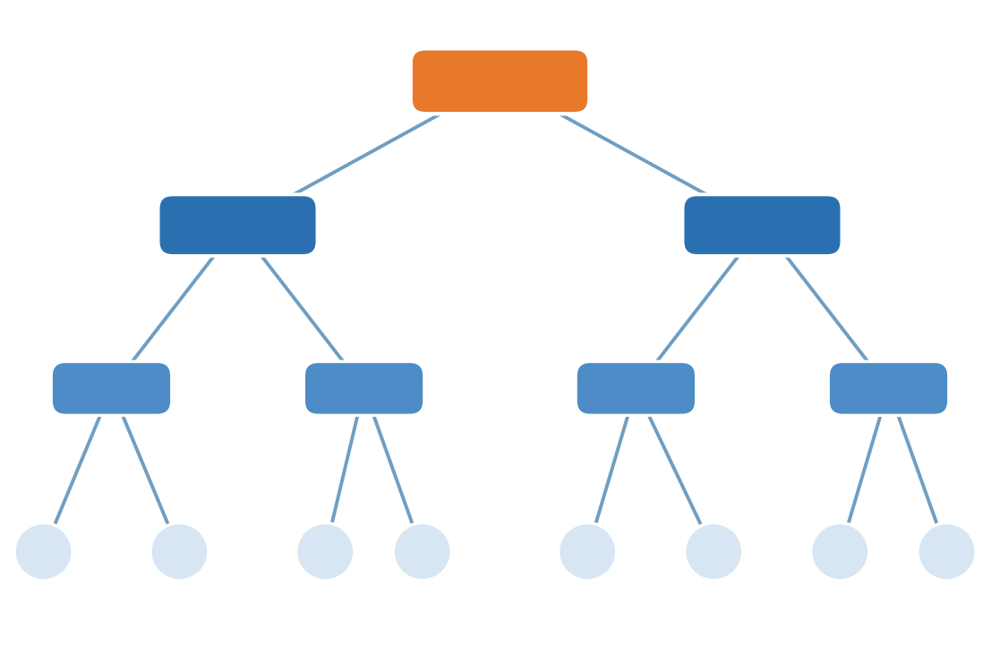
Antes de falar de árvores de comportamento, é preciso entender o jogo que o software precisa jogar e a pilha de programas que transforma imagens de câmera em movimento de robô.
Este manual descreve, de ponta a ponta, o software de estratégia do time OxeBots para a categoria RoboCup Small Size League – Entry Level (SSL-EL): como um robô decide o que fazer, como essa decisão vira movimento e como a equipe pode evoluir esse software até uma versão capaz de disputar uma partida inteira, respeitando o regulamento do início ao fim.
Ele foi escrito para ser lido de duas maneiras. Quem está chegando agora na equipe pode lê-lo do começo ao fim e sair com uma imagem completa do sistema — do campo de futebol à última linha de C++ que manda um comando de velocidade ao robô. Quem já conhece o projeto pode usá-lo como referência: cada capítulo é razoavelmente autocontido e as tabelas dos capítulos e apêndices foram feitas para consulta rápida.
O foco está em Behavior Trees (árvores de comportamento), a técnica que o projeto usa para representar decisões. O manual não pressupõe que você já as conheça: o Capítulo 4 constrói o assunto do zero, com exemplos desenhados passo a passo.
Uma partida de SSL-EL é disputada por robôs totalmente autônomos: durante o jogo, nenhum humano da equipe pode digitar informação no sistema, exceto em intervalos e pedidos de tempo. O único elo entre o software e o mundo externo são dois fluxos de dados compartilhados por todas as equipes:
A partir desses dois fluxos, cada robô precisa, várias dezenas de vezes por segundo, responder à pergunta "o que eu devo fazer agora?". E a resposta depende de muita coisa ao mesmo tempo: qual é o comando do árbitro, qual é o meu papel (goleiro, atacante, defensor), onde está a bola, onde estão os outros robôs, o que o regulamento permite naquele instante.
Há uma assimetria importante aqui: errar uma jogada é aceitável, mas violar uma regra de segurança não é. Se o árbitro manda parar tudo (HALT), os robôs precisam parar — não importa o quão perto da bola ou do gol estejam. Boa parte da arquitetura descrita neste manual existe para que esse tipo de interrupção seja garantida, e não apenas provável.
O software do OxeBots é organizado em camadas, cada uma com uma responsabilidade bem definida, como mostra a Figura 1.1.
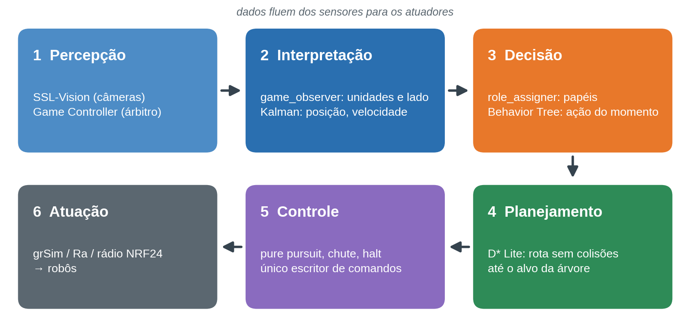
Este manual percorre essas camadas de baixo para cima ao descrever o sistema atual (Parte III) e de cima para baixo ao propor a arquitetura de jogo completo (Parte IV). A fronteira mais importante para a estratégia é entre a decisão e o planejamento/controle: a árvore diz aonde ir e o que fazer (ir a um ponto, chutar, parar); os módulos abaixo cuidam de como fazê-lo.
O conteúdo está dividido em cinco partes, ilustradas na Figura 1.2.
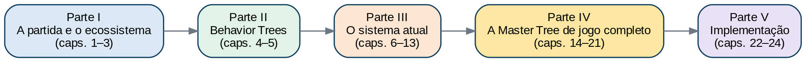
Os apêndices reúnem o glossário, a referência de mensagens e tópicos ROS 2, o mapeamento das regras do regulamento para a arquitetura, os arquivos XML propostos e a referência de parâmetros e comandos de execução.
Ao longo do texto, algumas convenções ajudam a distinguir o que existe hoje do que está proposto:
fonte monoespaçada são nomes de arquivos, nós, tópicos, parâmetros ou código.Versões de referência
O software roda sobre ROS 2 Jazzy (Ubuntu 24.04, no devcontainer do projeto) e usa a biblioteca BehaviorTree.CPP 4.10. Parte da semântica detalhada dos nós de controle foi conferida no código-fonte da série 4.6; sempre que um comportamento for crítico para a segurança, o plano de testes (Capítulo 23) inclui um teste que o confirma na versão instalada.
Quem compila o quê
Por regra do time, a compilação do workspace (./build.sh, que chama colcon build) é feita por quem desenvolve, dentro do devcontainer. Os exemplos de código deste manual são escritos para serem colados no repositório; compile e teste antes de usar.
Algumas palavras do regulamento parecem sinônimas, mas não são, e confundi-las é a origem de muitos erros de estratégia:
O glossário completo está no Apêndice A.
Este capítulo apresenta o jogo do ponto de vista do software. Ele resume o que o regulamento da SSL-EL (edição de agosto de 2024) exige dos robôs e, principalmente, traduz cada regra em uma obrigação concreta que a estratégia precisa cumprir. Quando o texto diz "o regulamento determina", trata-se de uma exigência da liga; quando diz "o software deve", trata-se da consequência prática para o nosso código.
A SSL-EL é a categoria de entrada da Small Size League. O campo é menor que o das divisões regulares: a área de jogo mede 4,5 m × 3 m, cercada por uma margem de 0,5 m e por uma parede de 10 cm de altura, totalizando 5,5 m × 4 m (Figura 2.1). Todas as linhas têm 1 cm de largura. A superfície é de feltro ou carpete verde.
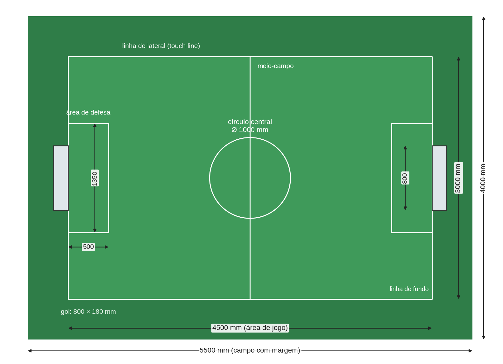
Os elementos do campo que mais importam para a estratégia são:
Cada equipe tem no máximo 3 robôs, e um deles pode ser o goleiro. O identificador do goleiro é escolhido antes da partida e só pode ser alterado quando a bola está fora de jogo ou na metade adversária. Os robôs cabem em um cilindro de 18 cm de diâmetro por 15 cm de altura e não podem ativar nenhum dispositivo de condução de bola (dribbler); o chute, porém, é permitido. A bola é uma bola de golfe laranja, com 43 mm de diâmetro.
Toda a liga usa a mesma infraestrutura de software, mantida pela comunidade:
Uma partida regular tem dois tempos de 300 segundos de jogo separados por um intervalo de 300 segundos. Em partidas eliminatórias empatadas há prorrogação (dois tempos de 150 s, com 120 s de intervalo) e, persistindo o empate, uma disputa de pênaltis (Figura 2.2).
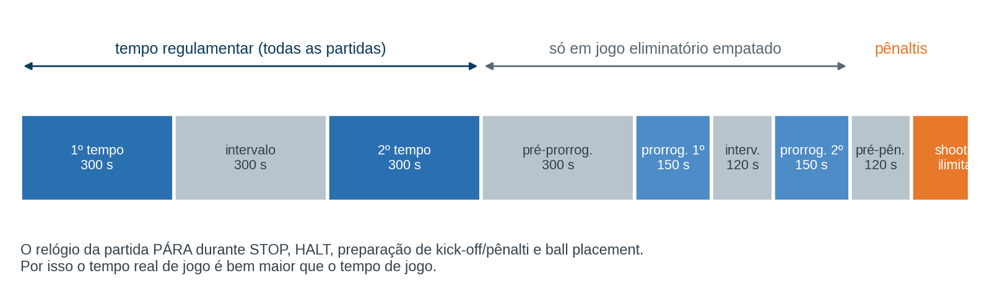
Um detalhe com consequências práticas: o relógio da partida pára sempre que nenhuma equipe pode manipular a bola — durante STOP, HALT, a preparação de kick-off ou pênalti e o ball placement. Por isso uma partida de 10 minutos de jogo dura bem mais do que 10 minutos de relógio, e cada transição entre estados acontece muitas vezes por jogo. A estratégia passa uma fração enorme do tempo não jogando, mas posicionando-se corretamente para o próximo reinício.
Cada equipe tem direito a 4 timeouts, num total de 420 segundos (na prorrogação, 2 timeouts e 240 s). Timeouts só ocorrem com o jogo parado e, durante eles, as duas equipes podem mexer livremente no hardware e no software.
O Game Controller comunica o estado do jogo por meio de comandos. Cada comando define se os robôs podem se mover, a que velocidade, se podem tocar na bola e para onde devem ir. Entender esse vocabulário é pré-requisito para tudo o que vem depois.
"Ninguém se move." Ao receber HALT, nenhum robô pode se mover nem manipular a bola. Existe uma tolerância de 2 segundos para os robôs frearem. O HALT é o comando de emergência: é usado quando algo dá errado (um robô fora de controle), quando humanos entram no campo e quando uma equipe pede substituição de robô. Ele é sempre seguido de um STOP, e o GC aguarda até 10 s após o HALT antes de retomar o jogo, dando tempo para as equipes se prepararem.
"Continuem se movendo, devagar, longe da bola." No STOP, todos os robôs precisam reduzir a velocidade para menos de 0,75 m/s, manter pelo menos 0,5 m de distância da bola e não manipulá-la. O STOP é usado depois que a bola sai do campo, quando ocorre uma falta e para preparar qualquer reinício. O limite de velocidade e a distância mínima existem para que o árbitro (humano) possa colocar a bola com segurança. É suficiente que fique claro ao árbitro que o robô está fazendo o possível para respeitar a distância — se a bola se move rápido, não é razoável exigir perfeição.
Depois de uma parada, a bola precisa ser colocada na posição correta, que depende do evento ocorrido. A forma preferida é o posicionamento automático: os robôs de uma das equipes empurram a bola até a posição designada, sem intervenção humana (Figura 2.3, painel b). O comando BALL_PLACEMENT informa qual equipe deve colocar a bola e a posição-alvo. As regras determinam:
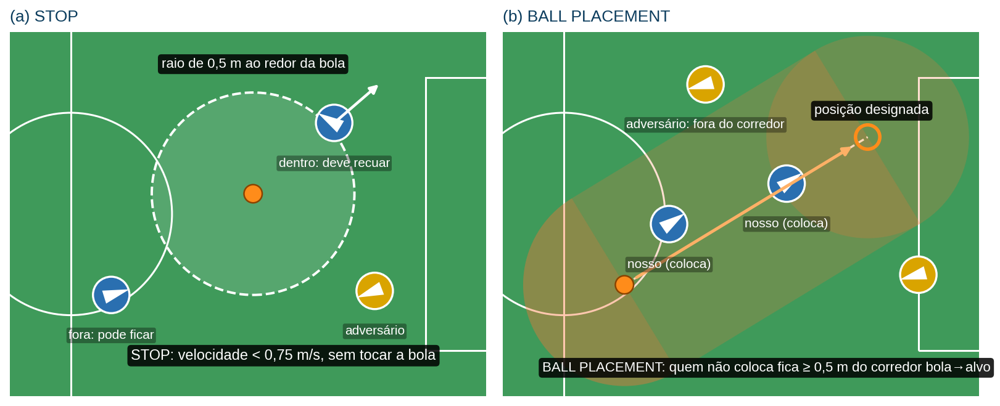
Para retomar o jogo, o GC emite primeiro um comando de preparação (os robôs vão para as posições do reinício) e depois um comando que autoriza a jogada. Os pares são:
| Situação | Preparação | Autorização |
|---|---|---|
| Kick-off (início de tempo, depois de um gol) | PREPARE_KICKOFF_YELLOW/BLUE |
NORMAL_START |
| Pênalti | PREPARE_PENALTY_YELLOW/BLUE |
NORMAL_START |
| Falta, lateral, escanteio, tiro de meta | (STOP) | DIRECT_FREE_YELLOW/BLUE |
| Jogo recomeça sem favorecimento | (STOP) | FORCE_START |
Note um ponto sutil que reaparece várias vezes neste manual: o comando NORMAL_START é o mesmo para o kick-off e para o pênalti. O que diferencia os dois é o comando de preparação que veio antes. Isso significa que quem lê apenas "o comando atual" não consegue saber, em NORMAL_START, qual reinício está acontecendo — é preciso lembrar o contexto.
A bola é colocada no centro do campo pelo árbitro humano. No comando de preparação, todos os robôs devem estar na própria metade do campo e fora do círculo central; apenas um robô da equipe que bate (o kicker) pode ficar dentro do círculo. Nenhum robô toca a bola até o NORMAL_START; depois dele o kicker pode manipulá-la, e um gol direto do kick-off é válido (Figura 2.5, painel a). Os dois tempos e as eventuais prorrogações começam com kick-off, assim como o jogo depois de cada gol (batido pela equipe que sofreu o gol).
A posição da bola depende do evento que originou a falta, mas deve estar a pelo menos 0,2 m de qualquer linha e 1 m de qualquer área de defesa; se o evento exigir uma posição inválida, usa-se a posição válida mais próxima. Quando o DIRECT_FREE é emitido, os robôs da equipe favorecida podem se aproximar da bola, e um deles (o kicker) pode manipulá-la; os adversários continuam a no mínimo 0,5 m da bola. Um gol direto é válido. Throw-in (lateral), tiro de meta e escanteio são todos mapeados para free kicks — não existem comandos próprios para eles.
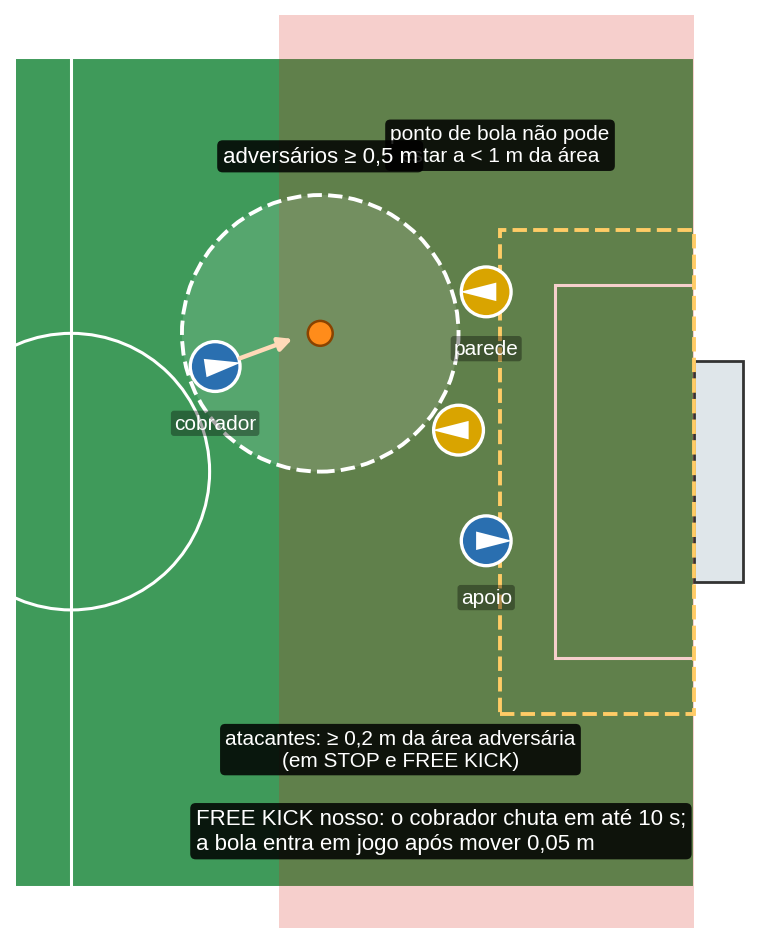
Retoma o jogo imediatamente, com ambas as equipes livres para se aproximar e manipular a bola. É usado em situações sem favorecido claro — por exemplo, quando o jogo é parado sem motivo específico ou quando as duas equipes cometem falta.
O pênalti é o reinício mais regrado. O árbitro coloca a bola na marca de pênalti. No comando de preparação, o goleiro defensor deve ir para a linha de gol e tocá-la; um robô atacante pode se aproximar da bola, mas sem tocá-la; e todos os outros robôs, de ambas as equipes, devem ficar 1 m atrás da bola, de modo a não interferir (Figura 2.5, painel b). No NORMAL_START, o atacante pode tocar a bola, que só pode se mover em direção ao gol adversário. O goleiro defensor fica livre para se mover quando a bola entra em jogo, e se a bola ainda estiver em jogo após 10 segundos o jogo é parado.
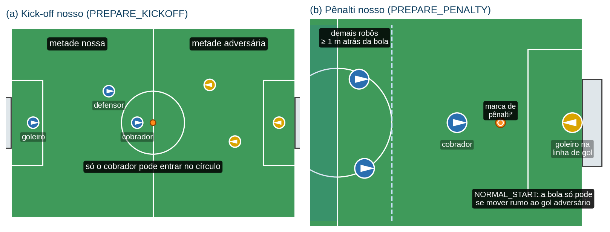
Um gol de pênalti não é concedido se a bola cruzar as linhas fora do gol, se o goleiro desviar a bola mudando sua direção em 90° ou mais, se o time atacante cometer qualquer falta ou se a bola ainda estiver em jogo após 10 s. Se a equipe defensora cometer qualquer falta durante o pênalti, recebe cartão vermelho e o pênalti é repetido.
Enquanto o jogo está parado, a bola está fora de jogo. Ela entra em jogo quando: houve um FORCE_START; a bola se moveu pelo menos 0,05 m depois de um kick-off, free kick ou pênalti; ou passaram 10 segundos depois de um kick-off ou free kick. Esse critério importa para a estratégia porque define o momento em que as restrições do reinício terminam (por exemplo, a distância mínima de 0,5 m dos adversários).
Quando a bola sai do campo cruzando completamente uma linha, o jogo é parado e reiniciado com um free kick para o adversário de quem tocou nela por último, com a bola na posição prevista pelo evento (lateral: 0,2 m da linha de lateral; tiro de meta: 0,2 m da lateral e 0,5 m da linha de fundo; escanteio: 0,2 m de ambas). Um chute sem alvo (a bola cruza o meio-campo e depois a linha de fundo adversária, sem tocar outro robô) também é devolvido como free kick.
O regulamento define dezenas de infrações. A maioria exige julgamento humano (empurrar, segurar a bola, desrespeitar árbitros). Mas várias são objetivamente mensuráveis, e é exatamente delas que o software deve se proteger:
| Regra | Limite | Observação |
|---|---|---|
| Velocidade do robô | ≤ 1,5 m/s no jogo | falta que não pára o jogo |
| Velocidade do robô no STOP | ≤ 0,75 m/s | 2 s de tolerância; conta uma vez por robô por parada |
| Velocidade da bola após o chute | ≤ 3 m/s (em 3D) | falta que não pára o jogo |
| Distância à bola durante free kick/kick-off do adversário | ≥ 0,5 m | o relógio do adversário é reiniciado se violado |
| Proximidade da área de defesa adversária (STOP e free kick) | ≥ 0,2 m | 2 s de tolerância |
| Tocar a bola dentro da área adversária | proibido (parcial ou total) | falta que não pára o jogo |
| Robô que não é o goleiro dentro da própria área | proibido (melhor esforço) | se tocar a bola totalmente dentro: pênalti |
| Bola retida na área de defesa | ≤ 10 s | goleiro |
| Interferência no ball placement | ≥ 0,5 m do corredor bola→alvo | +10 s no cronômetro de placement |
| Colisão | diferença de velocidade projetada ≤ 0,75 m/s | caso contrário o mais rápido comete falta |
Cada falta soma ao contador da equipe, e toda terceira falta gera um cartão amarelo. Um cartão amarelo reduz em um o número de robôs permitidos em campo por 120 segundos de jogo; a equipe tem 10 segundos para tirar um robô, e dois cartões amarelos não expirados fazem o terceiro virar vermelho (que não expira). Isso tem uma consequência direta: o número de robôs ativos pode mudar durante a partida, e a estratégia precisa se adaptar (veremos a degradação de papéis no Capítulo 19).
O Apêndice B do regulamento descreve o jogo como uma máquina de estados, reproduzida na Figura 2.6. Há três grandes famílias de estados:
Halt e Timeout.Stop, BallPlacement, PrepareKickoff e PreparePenalty.Run, FreeKick, Kickoff e Penalty.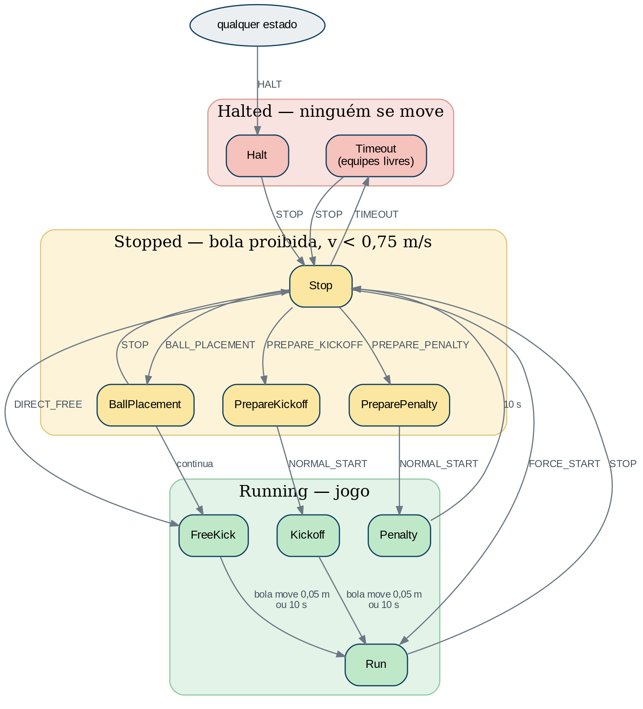
Qualquer estado pode ir para Halt por um comando HALT. Em geral, um reinício passa por Stop, vai para um estado de preparação ou de posicionamento e só então entra em um estado de jogo; a bola se mover (ou 10 s) leva de Kickoff/FreeKick para Run.
Comando versus estado
A máquina de estados tem mais estados do que o Game Controller tem comandos. O estado Kickoff, por exemplo, não é um comando: ele corresponde ao comando NORMAL_START que chega depois de um PREPARE_KICKOFF. É por isso que a nossa arquitetura de jogo completo (Parte IV) introduz um estado de jogo derivado, a fase, em vez de reagir diretamente ao número do comando.
Resumindo o capítulo em obrigações do software, uma estratégia de partida inteira precisa:
Halt ou Timeout.NORMAL_START (kick-off ou pênalti).Cada um desses itens reaparece, com a solução correspondente, na Parte IV. O Apêndice C relaciona cada regra do regulamento ao componente que a trata.
Este capítulo apresenta a pilha de software do OxeBots como um todo: quais pacotes existem, quais processos rodam durante uma partida, como os dados circulam entre eles e como tudo é iniciado. É o mapa que você deve ter na cabeça antes de entrar nos detalhes dos capítulos seguintes.
O código vive em um workspace ROS 2 (software_ws) que reúne vários repositórios como submódulos Git dentro da pasta src/. Cada submódulo é um pacote com uma responsabilidade clara:
| Pacote | O que faz |
|---|---|
ssl_ros_bridge |
Pontes entre a rede da liga e o ROS 2: recebe os pacotes UDP/multicast do SSL-Vision e do Game Controller (formato Protobuf) e os publica como mensagens ROS 2. Também define as mensagens ssl_league_msgs e contém um cliente para os serviços do GC. |
oxebots_interfaces |
Mensagens, serviços e o protocolo binário do rádio: GameData, RobotGoal, RobotCmd, RobotMotionOverride, RoleAssignment e muitas outras. É a "língua comum" de todos os nós. |
oxebots_observers |
O game_observer_node, que converte a visão para o referencial interno e publica o estado de jogo, a geometria do campo e o mapa de obstáculos; e o field_visualizer_node, que desenha o campo no RViz. |
oxebots_prediction |
O kalman_filter_node: filtros de Kalman dedicados para a bola (com atrito do carpete) e para os robôs. |
oxebots_strategy |
O coração da estratégia: o strategy_node (Behavior Trees), o role_assigner_node, o planejador d_star_planner_node, o controlador movement_calculation_node, o trajectory_setpoint_node, todas as folhas de árvore e todos os arquivos XML. |
oxebots_comms |
Drivers de atuação: grSim_controller_node (simulador grSim), ra_controller_node (simulador ER-Force Ra) e nrf24_bridge_node (rádio dos robôs reais). |
oxebots_bringup |
Arquivos de launch e de configuração YAML: o comando único que sobe tudo. |
oxebots_trajectory_analysis |
Ferramenta Python de análise de rotas (não participa do jogo). |
Durante uma partida rodam dois tipos de processo, como mostra a Figura 3.1.
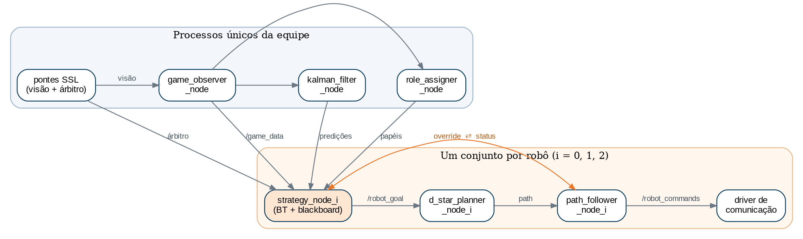
Processos únicos da equipe. Existe uma única instância de cada um: as pontes SSL (visão e árbitro), o observador, o filtro de Kalman, o atribuidor de papéis e o driver de comunicação. Eles produzem informação que serve a todos os robôs ao mesmo tempo.
Um conjunto de processos por robô. Para cada robô (identificadores 0, 1 e 2), o sistema sobe quatro processos independentes:
strategy_node_<i>: a Behavior Tree do robô e sua blackboard (a memória compartilhada da árvore).d_star_planner_node_<i>: o planejador de rotas.path_follower_node_<i>: o controlador de movimento (executável movement_calculation_node).trajectory_setpoint_node_<i>: converte a velocidade comandada em um ponto-alvo futuro, usado apenas quando o rádio opera em modo "ponto".Essa estrutura tem uma consequência importante, que será retomada muitas vezes: cada robô tem a sua própria árvore, com a sua própria blackboard. Não existe uma "árvore do time". A coordenação entre robôs acontece por mensagens (por exemplo, o atribuidor de papéis diz quem é o atacante) e, de forma implícita, pelo fato de todas as árvores lerem os mesmos dados do jogo.
Tópicos compartilhados entre os robôs
Vários tópicos (/robot_goal, /robot_motion_override, /robot_commands, /robot_motion_status) são compartilhados: os três robôs publicam e assinam no mesmo nome. Cada mensagem carrega o identificador do robô e cada receptor filtra o que não é seu. Isso simplifica a configuração, mas significa que um erro de identificação (um nó que comanda o robô errado) afeta o time inteiro.
A Figura 3.2 mostra, em ordem, o que acontece com a informação desde a câmera até o robô.
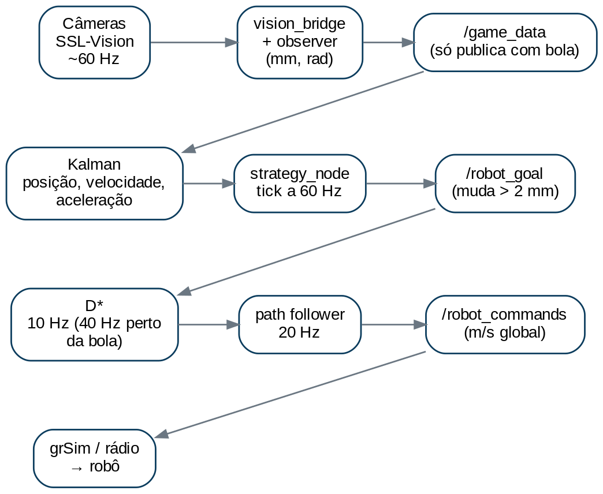
game_observer_node a converte para milímetros e radianos, escolhe a detecção de bola de maior confiança, aplica a inversão de lado quando necessária e publica /game_data. Um detalhe relevante: o observer só publica quando enxerga a bola (com confiança mínima de 0,3)./game_data → Kalman. O filtro estima posição, velocidade e aceleração da bola e dos robôs e publica ball_predicted e robot_predicted.strategy_node. A árvore de cada robô lê o estado do jogo, as predições e o comando do árbitro (que ela assina diretamente do Game Controller) e decide./robot_goal. As folhas de movimento publicam um alvo. Só republicam quando o alvo muda de forma relevante (mais de 2 mm ou cerca de 1° de orientação).nav_msgs/Path./robot_commands.Além desse caminho principal existe um canal de exceção: as folhas que precisam de uma ação física especial (parar, chutar, girar) enviam um RobotMotionOverride direto ao controlador, que o executa em lugar de seguir a rota. O Capítulo 7 detalha esse mecanismo.
Tudo é iniciado por um único arquivo de launch, ssl-new.launch.py, do pacote oxebots_bringup:
ros2 launch oxebots_bringup ssl-new.launch.py
O comportamento é controlado por argumentos. Os principais:
| Argumento | Valores | O que muda |
|---|---|---|
mode |
grsim (padrão), ra, game |
Escolhe o driver de comunicação: simulador grSim, simulador ER-Force Ra, ou jogo real pelo rádio NRF24. |
command_mode |
velocity (padrão), point |
Formato do comando enviado pelo rádio (velocidades locais ou ponto-alvo de trajetória). |
invert_sides |
True, False |
Espelha o campo (x = −x, y = −y, θ += π). Por padrão é True apenas no modo ra. |
team_color / config_file |
blue, yellow / caminho |
Escolhe o arquivo YAML de configuração do time. |
bt_xml |
nome de arquivo .xml |
Substitui a árvore executada, sem editar o YAML. |
use_rviz |
True, False |
Abre o RViz. |
match |
True, False |
Sobe os dois times na mesma máquina, isolados por ROS_DOMAIN_ID (0 = azul, 1 = amarelo). |
O script run_match.sh, na raiz do workspace, é um atalho para uma partida simulada completa entre azul e amarelo: ele redireciona a execução para o devcontainer se estiver no hospedeiro e chama o launch com match:=True. O Apêndice E reúne os parâmetros e exemplos de comando.
Os arquivos match_config*.yaml centralizam os parâmetros. Para a estratégia, os mais importantes são:
is_yellow_team: a cor do time (influencia as portas do simulador e o lado em que o time defende).bt_xml_path: o arquivo da árvore principal; por padrão, master_strategy_carry.xml.execution_rate: a frequência do tick da árvore, 60 Hz por padrão.gc_topic: o tópico de onde vem o comando do árbitro.Todo o software compartilha o mesmo referencial de campo, ilustrado na Figura 3.3: origem no centro do campo, eixo x ao longo do comprimento, eixo y ao longo da largura, ângulos em radianos no sentido anti-horário a partir de +x. Posições são mantidas em milímetros; a conversão para metros acontece uma única vez, quando a folha de movimento monta o RobotGoal.
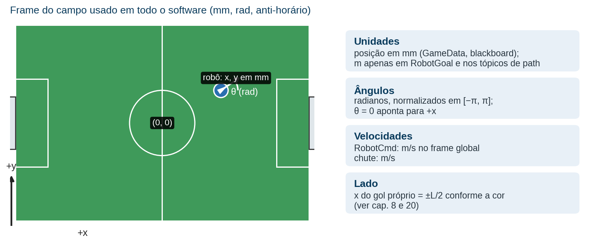
Um ponto exige atenção especial: o lado do campo. O referencial é fixo, mas o gol que cada time defende depende da cor (e do simulador). No código atual, o time amarelo defende o gol de +x e o time azul o de −x; a chave my_goal_x da blackboard guarda esse valor, calculado a partir da geometria do campo. O Capítulo 8 explica a inversão de lado, e o Capítulo 13 discute as armadilhas que o lado fixo cria para o jogo completo.
A teoria necessária para ler, escrever e depurar as árvores do projeto, e a forma como a biblioteca BehaviorTree.CPP a coloca em prática.
Este capítulo ensina Behavior Trees (BTs) a partir do princípio, sem supor nenhum conhecimento prévio. Todos os conceitos são ilustrados com exemplos desenhados e, sempre que possível, ligados ao futebol de robôs. No capítulo seguinte veremos como a biblioteca que usamos, a BehaviorTree.CPP, implementa essas ideias.
Um robô de futebol precisa tomar decisões que dependem do contexto e que podem ser interrompidas a qualquer momento. Imagine o atacante perseguindo a bola quando o árbitro apita um HALT: ele precisa largar o que estava fazendo imediatamente, sem terminar a jogada, e voltar à ação normal quando o jogo recomeçar.
Uma abordagem clássica para esse tipo de problema é a máquina de estados finitos (FSM): um conjunto de estados ("indo à bola", "chutando", "parado") e de transições entre eles. As FSMs funcionam bem enquanto pequenas, mas a quantidade de transições cresce depressa: se qualquer estado precisa poder ir para "parado" quando chega um HALT, cada novo estado exige mais uma transição. Reutilizar um pedaço (por exemplo, "ir até um ponto") em vários contextos também é difícil, porque as transições ficam entrelaçadas com os estados.
As Behavior Trees resolvem esses dois problemas. Elas organizam o comportamento como uma hierarquia: comportamentos complexos são compostos de comportamentos mais simples, e a prioridade entre eles é dada pela posição na árvore. Os benefícios principais são:
Uma BT é uma árvore no sentido da computação: tem uma raiz, nós internos e folhas. A Figura 4.1 mostra um exemplo pequeno, que lê "se o árbitro mandou parar, pare; senão, jogue (vá à bola e chute)".
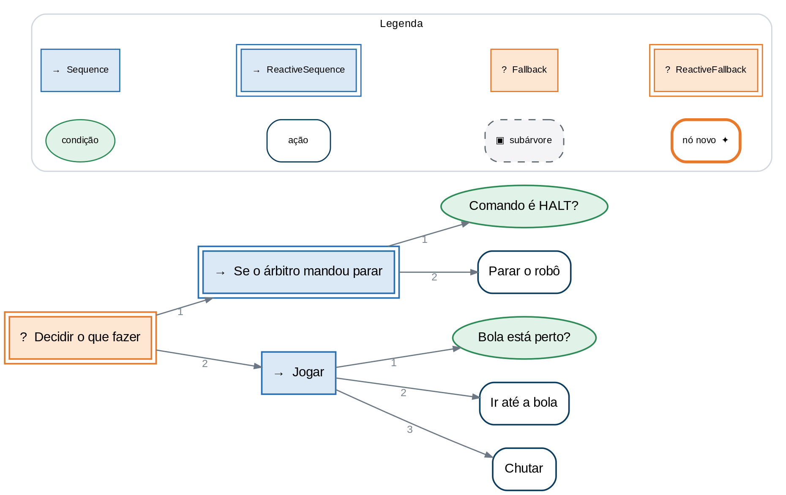
Os nós se dividem em quatro famílias:
Sequence (→) e Fallback (?).Há ainda as subárvores (retângulos tracejados), que apenas referenciam outra árvore pelo nome, permitindo reuso.
Nas figuras deste manual, os números pequenos nas arestas indicam a ordem dos filhos: o filho 1 tem prioridade sobre o 2, e assim por diante. Esta é uma regra de ouro: em uma BT, a ordem dos irmãos é a prioridade.
A árvore não "roda sozinha". Ela é executada por ticks: a cada tick, a raiz recebe um pulso, que ela propaga aos seus filhos segundo suas regras. Cada nó, ao ser "ticado", faz o seu trabalho e devolve um de três resultados:
| Resultado | Significado |
|---|---|
| SUCCESS | A tarefa foi concluída com êxito (ou a condição é verdadeira). |
| FAILURE | A tarefa não pôde ser concluída (ou a condição é falsa). |
| RUNNING | A tarefa ainda está em andamento; precisa de mais ticks. |
O terceiro resultado é o que permite comportamentos que duram no tempo. "Ir até um ponto" não termina em um tick: ela devolve RUNNING a cada tick enquanto o robô se desloca e só devolve SUCCESS quando ele chega. No nosso sistema, a árvore recebe um tick 60 vezes por segundo.
Ticks e tempo
Um tick não é uma unidade de tempo, e sim um pulso de decisão. Entre dois ticks, nada acontece na árvore; apenas os dados do mundo (mensagens ROS 2) são atualizados em outra linha de execução. A latência de reação a um evento é, portanto, de no máximo um período de tick (cerca de 17 ms a 60 Hz) mais o tempo de processamento do próprio tick.
O nó Sequence executa os filhos em ordem, um de cada vez. Se um filho devolve FAILURE, a sequência inteira falha imediatamente. Se devolve RUNNING, a sequência devolve RUNNING e retoma exatamente naquele filho no próximo tick. Só quando todos os filhos devolvem SUCCESS a sequência devolve SUCCESS.
Pense na sequência como um "E" lógico com passos: A e depois B e depois C. É a escolha natural para roteiros que precisam ser completados em ordem — por exemplo, "ir ao ponto de pré-chute → alinhar → chutar".
A Figura 4.2 mostra a execução em dois ticks. No tick 1, A tem sucesso e B fica em andamento; C ainda não é executado. No tick 2, a sequência não repete A: ela retoma em B (que agora conclui) e passa para C.
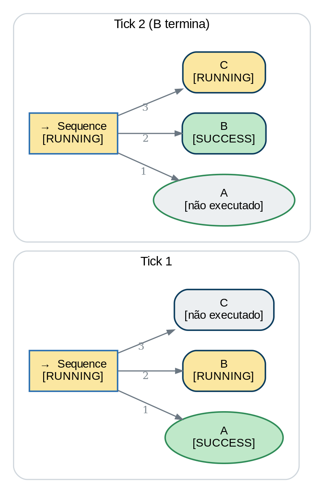
Repare no detalhe da figura: "não executado" para A no tick 2. Essa memória da sequência é útil (não se reinicia o que já foi feito), mas tem um preço, que veremos adiante: uma condição colocada como primeiro filho não é reavaliada enquanto um filho posterior está em andamento.
O Fallback (também chamado Selector) é o oposto da sequência: tenta os filhos em ordem até um ter sucesso. Se um filho devolve SUCCESS, o fallback devolve SUCCESS imediatamente e não olha os demais. Se devolve FAILURE, passa ao próximo. Se todos falham, falha. Se um devolve RUNNING, devolve RUNNING e retoma nele.
É um "OU" lógico com ordem de preferência: A, senão B, senão C. Serve para escolher entre alternativas por prioridade: "se a bola está perto, chute; senão, aproxime-se; senão, fique parado". Na prática, é o nó que implementa os "ramos" de uma árvore mestre: cada filho é um cenário, e o primeiro cuja condição vale é o escolhido.
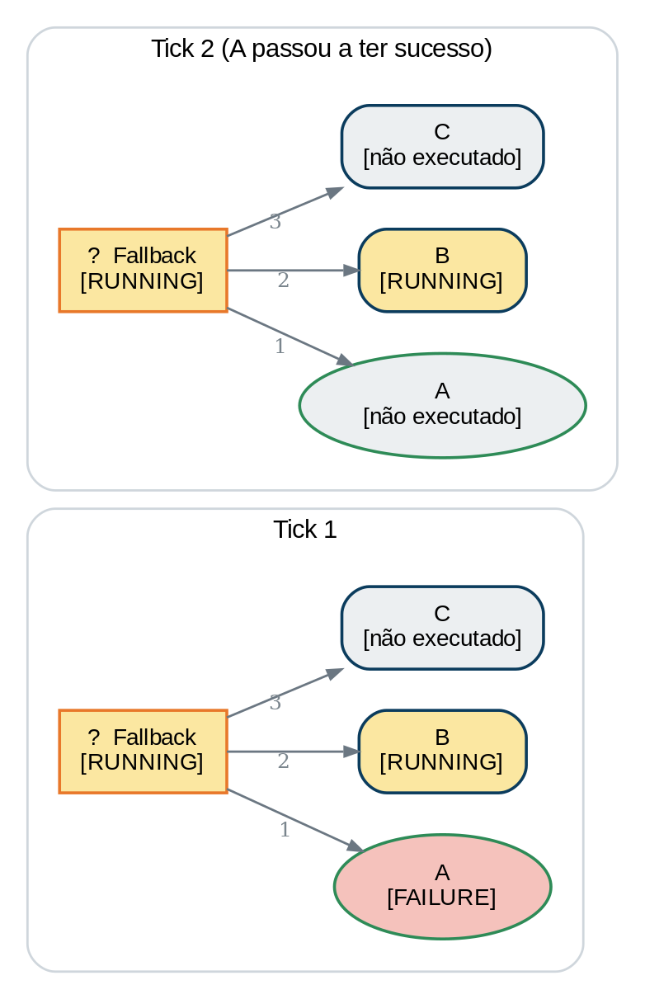
Agora a pergunta decisiva para o futebol de robôs. Considere um Fallback cujo primeiro filho é "o árbitro mandou HALT? → pare" e cujo segundo filho é "jogar". O jogo normal é uma ação longa (RUNNING). O que acontece quando o HALT chega no meio do jogo?
Com o Fallback comum, nada: ele memorizou que o filho 2 está em andamento e, no próximo tick, retoma direto nele, sem nunca olhar de novo para o filho 1. O robô ignora o HALT. Esse é exatamente o tipo de erro que as variantes reativas existem para evitar.
Sequence e Fallback comuns têm memória
Em um Sequence ou Fallback comum, os filhos anteriores ao que está em andamento não são reavaliados. Usar um deles como raiz da árvore de jogo significa que HALT e STOP podem passar despercebidos durante ações longas.
O ReactiveFallback recomeça do primeiro filho a cada tick. Se um filho de maior prioridade passa a ter sucesso (ou a estar em andamento), os filhos de menor prioridade que estavam em execução são interrompidos (recebem halt). Por isso ele é o nó escolhido para a raiz das nossas árvores mestres: a cada tick, a árvore reavalia as prioridades de cima para baixo.
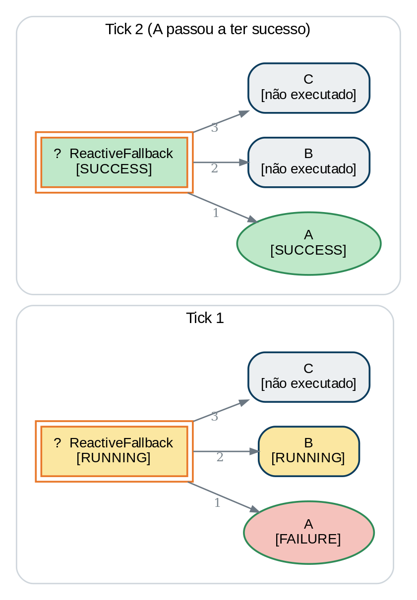
O ReactiveSequence também recomeça do primeiro filho a cada tick. Ele é a versão da sequência para guardas: um primeiro filho que é uma condição ("sou o atacante?") é reavaliado a cada tick; se deixar de valer, a sequência falha e os filhos seguintes são interrompidos. A Figura 4.5 mostra a diferença em relação ao Sequence da figura anterior: no tick 2, A é reavaliado, falha, e B é interrompido.
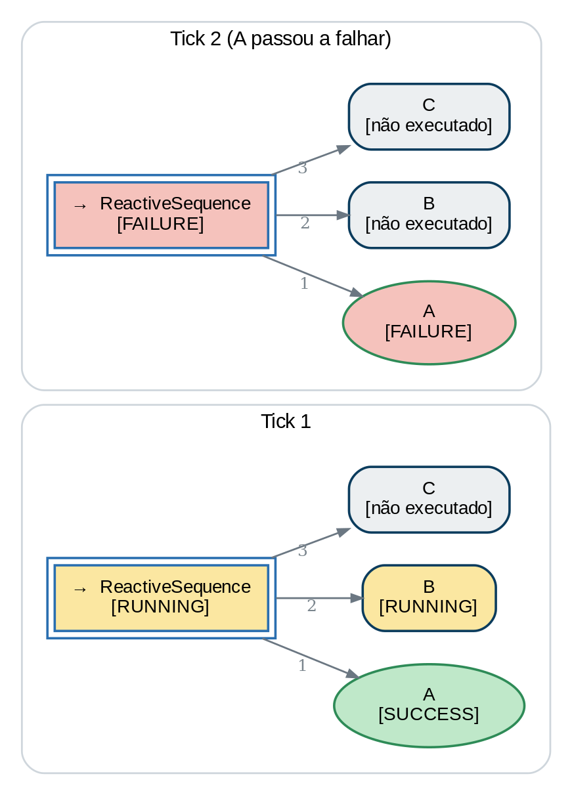
O preço da reatividade é que os filhos anteriores ao que está em andamento devem ser rápidos e sem efeito colateral — eles são executados de novo todo tick. Por isso, nos nós reativos usamos como "guardas" apenas condições e ações síncronas e baratas. A biblioteca também espera que, em um ReactiveSequence, só um filho seja assíncrono (de longa duração).
O Parallel ticka todos os filhos a cada tick, sem esperar um terminar para começar o outro. Dois parâmetros definem quando ele termina: success_count (quantos filhos precisam ter sucesso para o Parallel ter sucesso) e failure_count (quantas falhas bastam para ele falhar). Ao decidir, ele interrompe os filhos que ainda estavam em andamento.
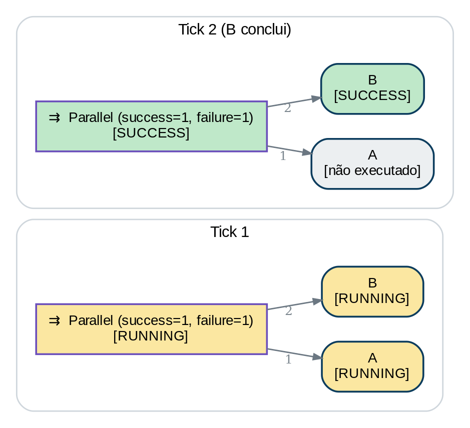
O Parallel serve para ações genuinamente independentes (por exemplo, "mover" e "vigiar a bola"). Cuidado: filhos que já concluíram não são reexecutados enquanto o Parallel está ativo, de modo que uma condição que passou fica "congelada" como verdadeira. Em muitas das árvores do projeto, o padrão Parallel(success=1, failure=1) é usado para "persiga a bola e, assim que estiver perto, chute".
Os decoradores modificam o comportamento de um único filho. Os mais usados (Figura 4.7):
Inverter: troca SUCCESS por FAILURE e vice-versa (RUNNING passa). Serve para negar condições: Inverter(IsBallInOurHalf) significa "a bola não está na nossa metade". Note que não é o mesmo que "reativo" nem que "reverso".RetryUntilSuccessful(n): se o filho falha, tenta de novo, até n vezes (-1 = sem limite). Usado como "espere até que a condição seja verdadeira".Repeat(n): se o filho tem sucesso, repete, n vezes (-1 = sem limite).Timeout(ms): se o filho não terminar no prazo, interrompe-o e devolve FAILURE.Delay(ms): espera um tempo antes de executar o filho (usado como "cooldown").ForceSuccess / ForceFailure: forçam o resultado, escondendo o do filho. Úteis, mas perigosos: escondem falhas.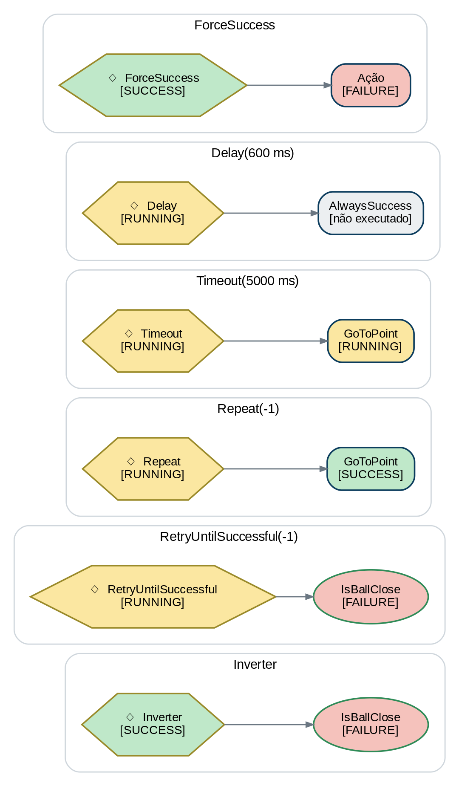
Juntando as peças, podemos agora acompanhar o cenário que motivou o capítulo: o atacante em jogo e o HALT que chega. A árvore tem um ReactiveFallback na raiz, com o ramo de HALT em primeiro lugar e o do atacante depois, como na Figura 4.8.
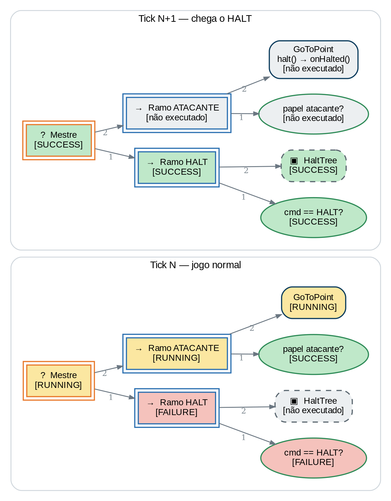
GoToPoint devolve RUNNING).ReactiveFallback recomeça do primeiro filho: a condição agora vale, a subárvore de parada tem sucesso e o fallback devolve SUCCESS. Os filhos de prioridade menor, que estavam em andamento, recebem halt() — a folha GoToPoint é avisada de que foi interrompida e pode fazer sua limpeza.Essa interrupção é a preempção. Ela acontece em no máximo um tick e não depende de a ação interrompida "colaborar": é a estrutura da árvore que a garante.
Regra prática para escolher o nó
ReactiveSequence.ReactiveFallback.Sequence.Parallel.Uma última distinção, essencial para escrever folhas corretas:
halt), para não deixar o robô em um estado indevido.A regra de ouro: nunca bloqueie dentro de um tick. Esperar uma resposta de rede, dormir ou fazer um cálculo demorado dentro de uma folha congela a árvore inteira e, com ela, a capacidade de reagir a um HALT. Quando algo demora, a folha deve devolver RUNNING e voltar no tick seguinte.
Para fixar, leia a árvore da Figura 4.1 como se fosse um programa:
ReactiveFallback raiz tenta o filho 1: um ReactiveSequence que verifica "o comando é HALT?".Sequence chamada "Jogar".Esse é todo o modelo mental necessário. No próximo capítulo vemos como ele é escrito em XML e implementado em C++.
O projeto usa a biblioteca BehaviorTree.CPP (versão 4.x, mantida por Davide Faconti) para executar as árvores. Este capítulo mostra como os conceitos do capítulo anterior aparecem em código: o formato XML das árvores, os tipos de nós em C++, as portas e a blackboard, as subárvores e as ferramentas de depuração. Documentação oficial: https://www.behaviortree.dev.
Na BehaviorTree.CPP, uma árvore tem duas partes bem separadas:
A ligação entre as duas é a fábrica (BT::BehaviorTreeFactory): em C++, cada classe de nó é registrada na fábrica com um nome ("GoToPoint"); no XML, esse nome é usado como se fosse uma tag. Ao carregar o XML, a fábrica instancia a classe correspondente a cada tag.
Um arquivo XML mínimo do projeto tem esta forma:
<root BTCPP_format="4" main_tree_to_execute="MainTreeCarry">
<BehaviorTree ID="MainTreeCarry">
<ReactiveFallback name="MasterStrategy">
<Sequence name="HaltBranch">
<CheckGCCommand expected="0"/>
<SubTree ID="HaltSubTree" _autoremap="true"/>
</Sequence>
<!-- ... demais ramos ... -->
<Halt reason="idle"/>
</ReactiveFallback>
</BehaviorTree>
</root>
Cada <BehaviorTree ID="..."> define uma árvore com um nome. O atributo main_tree_to_execute indica qual delas é a raiz da execução. Os elementos internos são os nós: ReactiveFallback, Sequence, SubTree e Halt aparecem aqui; os dois últimos mais CheckGCCommand são folhas ou referências cujos nomes foram registrados em C++.
Para criar uma nova folha, herda-se de uma de três classes da biblioteca, conforme a natureza do nó:
BT::ConditionNode: condição síncrona. Implementa tick(), que devolve SUCCESS ou FAILURE (nunca RUNNING). Exemplo no projeto: IsBallCloseCondition.BT::SyncActionNode: ação síncrona. Também implementa tick() e termina no mesmo tick. Exemplos: KeepDistance, AimAt, ShadowBall.BT::StatefulActionNode: ação assíncrona. Implementa três métodos — onStart(), onRunning() e onHalted() — e pode devolver RUNNING. É o tipo mais usado para movimento e chute: GoToPointNode, KickBallNode, GoalkeeperNode.O ciclo de vida de uma StatefulActionNode está na Figura 5.1:
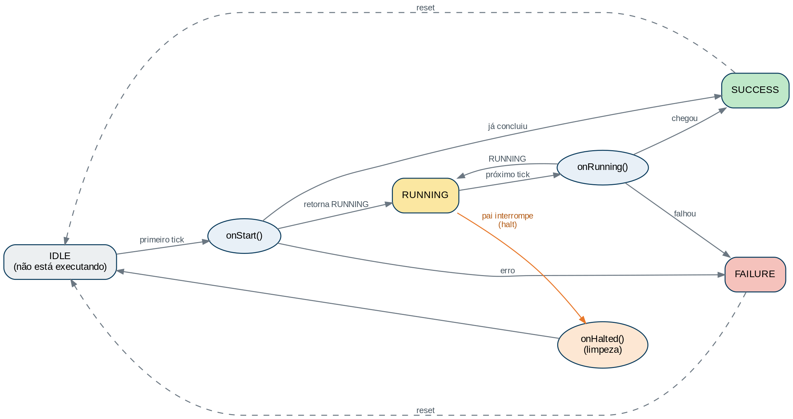
onStart(). Ali a folha lê suas portas, prepara o estado e começa a tarefa. Se já puder concluir, devolve SUCCESS/FAILURE; caso contrário, RUNNING.onRunning().onHalted(). É a oportunidade de limpar: liberar um override, parar de publicar, zerar um temporizador.onStart().onHalted() precisa ser rápido e idempotente
onHalted() pode ser chamado várias vezes e a qualquer momento. Ele não deve bloquear nem depender de que a tarefa tenha de fato começado. Várias folhas do projeto o usam para devolver o controle ao controlador de movimento (KickBallNode::onHalted libera o override de chute).
Cada folha declara suas portas, que são os parâmetros que o XML pode passar e as saídas que ela pode produzir. A declaração é feita em um método estático providedPorts():
BT::PortsList GoToPointNode::providedPorts() {
return { BT::InputPort<unsigned int>("robot_id"),
BT::InputPort<double>("x"),
BT::InputPort<double>("y"),
BT::InputPort<double>("tolerance", -1.0, "Tolerância para sucesso"),
BT::InputPort<std::string>("planner", "dstar", "dstar | straight_line") };
}
Há portas de entrada (InputPort), de saída (OutputPort) e de entrada-e-saída. Uma entrada pode ter valor padrão (o segundo argumento acima). No XML, os valores são passados como atributos:
<GoToPoint robot_id="{robot_id}" x="1000" y="0" tolerance="80" planner="straight_line"/>
Um valor pode ser um literal (x="1000") ou uma referência à blackboard entre chaves (robot_id="{robot_id}"). No segundo caso, o valor é lido da blackboard no momento em que a folha o pede com getInput. As portas de saída funcionam ao contrário: ball_x="{ball_x}" em uma saída significa "escreva o valor na chave ball_x".
Porta sem atributo e sem padrão = erro
Se uma porta de entrada não tem valor padrão e o XML não a menciona, getInput falha. A biblioteca não tenta ler, por conta própria, uma chave da blackboard com o mesmo nome da porta. Esse é um erro fácil de cometer e silencioso: a folha costuma devolver FAILURE e o ramo inteiro falha. Duas folhas do projeto (KeepDistance, AimAt) exigem as portas robot_x/robot_y e, em vários XML, elas não são passadas — voltaremos a isso no Capítulo 13. Quando faz sentido, declare o padrão como uma referência: InputPort<double>("robot_x", "{robot_x}", ...).
A blackboard é um dicionário compartilhado entre os nós de uma árvore: chaves de texto associadas a valores de qualquer tipo. É a memória da árvore. Ela serve para passar informação entre nós (um nó escreve pkx, outro lê) e para injetar dados do mundo (o strategy_node escreve ball_x, gc_command etc. a partir das mensagens ROS 2).
Duas propriedades merecem atenção:
SubTree tem a sua própria blackboard, separada da do pai. Para compartilhar valores, as chaves precisam ser remapeadas. Há duas formas: explícita (<SubTree ID="X" bola_x="{ball_x}"/>) ou automática (_autoremap="true"), que copia, com o mesmo nome, as chaves que já existem na blackboard do pai. Chaves novas criadas dentro da subárvore ficam só nela.config().blackboard->rootBlackboard(), atravessando todas as subárvores. É o que o projeto faz para ler my_goal_x, robot_id e a geometria do campo de dentro de qualquer subárvore.Quem escreve na blackboard?
No projeto, a blackboard é escrita por duas fontes: (1) as callbacks ROS 2 do strategy_node (dados do jogo, árbitro, geometria, papéis), que rodam em outra thread; e (2) as folhas (por exemplo, UpdateBallPosition escreve pkx, pky). Como leitura e escrita acontecem em threads diferentes, valores relacionados (ball_x e ball_y) podem ser lidos em instantes diferentes. O Capítulo 20 propõe uma forma de evitar isso.
Uma subárvore é uma <BehaviorTree> com outro ID, referenciada por <SubTree ID="...">. Para que uma subárvore de outro arquivo seja encontrada, ela precisa estar registrada na fábrica. O strategy_node faz isso de forma abrangente: antes de criar a árvore principal, ele registra todos os arquivos .xml do diretório behavior_trees/ (exceto o da árvore principal). Isso é prático, mas implica que os ID precisam ser únicos entre todos os arquivos — algo que hoje não é verdade para alguns legados (Capítulo 13).
A biblioteca já traz os nós vistos no Capítulo 4: Sequence, ReactiveSequence, Fallback, ReactiveFallback, Parallel, Inverter, RetryUntilSuccessful, Repeat, Timeout, Delay, ForceSuccess, ForceFailure, AlwaysSuccess, AlwaysFailure, Sleep. Existem ainda variantes (SequenceWithMemory, IfThenElse, WhileDoElse, Switch, TryCatch, ParallelAll) e scripts embutidos (Script, pré-condições), pouco usados aqui.
Uma observação sobre RetryUntilSuccessful com num_attempts="-1" — um padrão muito usado no projeto para "espere até a bola estar perto". Na implementação da série 4.x, quando o filho falha e a árvore foi configurada com o mecanismo de wake-up, o decorador devolve RUNNING depois de uma tentativa por tick (em vez de repetir o filho em laço apertado no mesmo tick). O efeito é um polling de uma tentativa por tick, o que é exatamente o desejado. O plano de testes (Capítulo 23) inclui um teste que confirma esse comportamento na versão instalada.
No strategy_node, o registro é feito em init(). Folhas que precisam falar com o ROS 2 recebem o nó ROS do processo como argumento extra:
factory_.registerNodeType<oxebots_strategy::GoToPointNode>("GoToPoint", shared_from_this());
factory_.registerNodeType<oxebots_strategy::KeepDistance>("KeepDistance");
Para condições e ações triviais, a biblioteca aceita lambdas:
factory_.registerSimpleCondition("CheckGCCommand", [&](BT::TreeNode& node) {
int expected, current;
if (!node.getInput("expected", expected)) return BT::NodeStatus::FAILURE;
if (!blackboard_->get("gc_command", current)) return BT::NodeStatus::FAILURE;
return (current == expected) ? BT::NodeStatus::SUCCESS : BT::NodeStatus::FAILURE;
}, { BT::InputPort<int>("expected") });
Não existe plugin
As folhas são compiladas dentro do executável strategy_node; não há carregamento dinâmico de plugins. Ao criar uma folha nova, o arquivo .cpp precisa ser incluído na lista de fontes do add_executable(strategy_node ...) do CMakeLists.txt.
Duas ferramentas ajudam a entender o que a árvore está fazendo:
strategy_node inicia um Groot2Publisher em uma porta por robô (1667 + id para o time azul, 1677 + id para o amarelo). O Groot2 se conecta a essa porta e mostra a árvore ao vivo, com o ramo ativo destacado.RCLCPP_* (e o Halt registra, a cada 2 s, por que o robô está parado). A BehaviorTree.CPP também oferece loggers (StdCoutLogger, FileLogger) que podem ser ligados para registrar cada transição de estado de cada nó.Para depurar um erro de criação de árvore, as mensagens costumam ser autoexplicativas: "Node not registered" indica que a tag do XML não tem um registerNodeType; "getInput() failed ... does not contain the key" indica uma porta de entrada sem atributo e sem padrão.
Como cada peça do sistema funciona hoje, do nó de estratégia ao movimento, da percepção ao ataque, da defesa aos papéis, e uma lista honesta dos pontos que precisam de atenção.
O strategy_node é o processo que hospeda a Behavior Tree de um robô. Ele faz três coisas: mantém a blackboard sempre atualizada com o que o mundo informa, registra todas as folhas e subárvores na fábrica e ticka a árvore a 60 Hz. Este capítulo percorre o seu código na ordem em que ele acontece. O arquivo é oxebots_strategy/src/strategy_node.cpp.
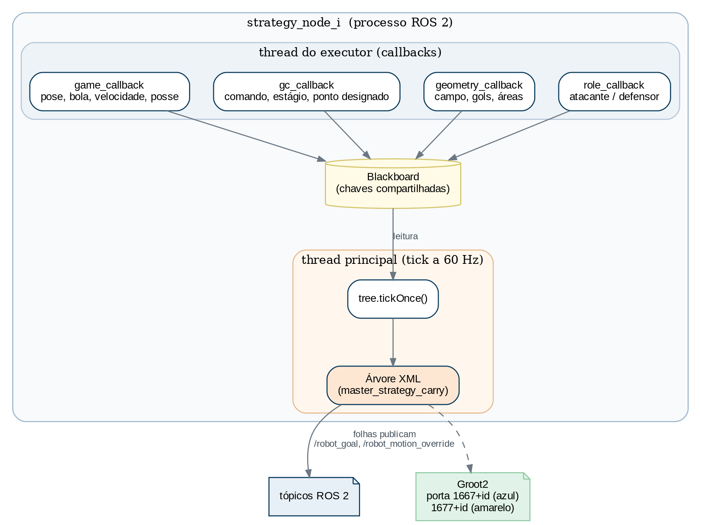
O nó declara os seguintes parâmetros ROS 2 (valores padrão entre parênteses; os YAMLs de oxebots_bringup sobrescrevem alguns):
| Parâmetro | Padrão | Significado |
|---|---|---|
bt_xml_path |
"" |
Arquivo da árvore. Vazio: usa master_strategy.xml. Só o nome (sem /): procura em behavior_trees/ do pacote. |
is_yellow_team |
false |
Cor do time. |
invert_sides |
false |
Espelhamento do campo (simulador Ra). A cor "efetiva" é is_yellow_team XOR invert_sides. |
robot_id |
1 |
Identificador do robô que este processo controla. |
execution_rate |
60.0 |
Frequência do tick (Hz). |
gc_topic |
/gc_multicast_bridge/referee_messages |
Tópico do comando do árbitro. |
possession_distance |
220.0 |
Distância (mm) usada para decidir se o adversário "tem a bola". |
Cada robô é iniciado por strategy.launch.py com o seu próprio robot_id (0, 1, 2) e o mesmo arquivo de configuração.
| Direção | Tópico | Tipo | Para quê |
|---|---|---|---|
| assina | /role_assignment |
RoleAssignment |
quem é atacante e quem é defensor |
| assina | game_data |
GameData |
poses de robôs e posição da bola |
| assina | gc_topic |
ssl_league_msgs/Referee |
comando, estágio e ponto designado do árbitro |
| assina | /field_geometry |
SSLGeometryData (transient_local) |
dimensões do campo |
| publica | /robot_motion_override |
RobotMotionOverride |
pedido de parada (usado pela ação Halt) |
As folhas (GoToPoint, KickBall, Goalkeeper…) criam seus próprios publicadores e assinantes usando este mesmo nó ROS 2 (ele é passado a elas no registro). Por isso o strategy_node é, ao mesmo tempo, o "dono" de várias dezenas de publicadores — um por uso de folha no XML.
Em setup_blackboard(), antes de qualquer dado chegar, o nó cria as chaves com valores iniciais. Em seguida, quatro callbacks a mantêm atualizada:
game_callback)A cada GameData, o nó:
robot_x, robot_y, robot_yaw);ball_vx, ball_vy) — uma estimativa ruidosa, usada pelo defensor;ball_x, ball_y, ball (Pose2D) e ball_vel (Vector2D);opponent_controlling (posse do adversário): verdadeiro quando o robô adversário mais próximo da bola está a menos de possession_distance e pelo menos 30 mm mais perto do que o aliado mais próximo.gc_callback)A cada mensagem do GC, o nó escreve gc_command (inteiro cru), gc_stage e o ponto designado (designated_x, designated_y, em mm). Ele também calcula is_free_kick, verdadeiro quando o comando é DIRECT_FREE (8 ou 9) para a nossa cor. Nenhum outro tipo de comando é pré-processado: as árvores comparam gc_command com números.
geometry_callback)Com a geometria oficial, o nó escreve field_length, field_width, penalty_area_depth/width, goal_width, center_circle_radius e, importante, my_goal_x e opponent_goal_x. O gol próprio é calculado pela cor efetiva: amarelo defende +x, azul defende −x (my_goal_x = ±field_length/2).
role_callback)Escreve attacker_id e defender_id e is_attacker. Antes da primeira mensagem do atribuidor de papéis, os valores iniciais são attacker_id = 2 e defender_id = 1.
O tick só começa com dados
O laço principal só ticka a árvore quando já chegaram pelo menos um GameData e a geometria do campo. Enquanto isso, loga a cada 5 s que está aguardando. O comando do árbitro, porém, não é pré-requisito: se ele nunca chegar, gc_command permanece -1 e a árvore cai no ramo de jogo normal (veja o Capítulo 13).
No método init(), o nó:
bt_xml_path);configureDefenderController);GoToPoint, KickBall, AlignToBall, UpdateBallPosition, CalculateInterception, IsBallClose, Goalkeeper, PrecisionKick, GoalLineDefend, IsBallInArea, IsBallInOurHalf, LateralClear, PositionBisector, SmotherSave, CalculateKickOffPose, KeepDistance, AimAt, HasLineOfSight), 5 de defesa (IsBallInOpponentField, IsOpponentControllingBall, ShadowBall, MarkOpponent, GoToClamped), 5 condições simples em lambda (IsValueTrue, IsThisNodeID, IsMyRole, CheckGCCommand, IsRobotId) e a ação Halt;.xml do diretório como subárvores (falhas viram apenas aviso no log);O catálogo completo de folhas, com portas e comportamento, é o Capítulo 7 e o Apêndice B.
HaltRegistrada como lambda, a ação Halt é a forma padrão de "deixar o robô parado". Ela publica um RobotMotionOverride com MODE_HALT para o controlador, registra (a cada 2 s) o motivo (reason) e devolve sempre SUCCESS. Como o override expira em 200 ms se não for renovado, Halt precisa ser ticada a cada tick para manter o robô parado — o que acontece naturalmente, porque ela é folha síncrona dentro de um ramo reativo.
O main() cria um executor multithread para as callbacks do ROS 2 em uma thread separada, e o laço de tick roda na thread principal:
while (rclcpp::ok()) {
if (has_data_ && has_geometry_) tree_.tickOnce();
rate.sleep(); // 60 Hz
}
O resultado dessa arquitetura de duas linhas de execução (figura acima) é que a árvore sempre lê dados "do último instante", mas sem garantia de consistência entre chaves e sem informação de idade: se a visão parar de publicar, os valores na blackboard simplesmente deixam de mudar — a árvore não percebe. Esse ponto é o tema central do Capítulo 17.
O strategy_node é um adaptador fino: converte mensagens ROS 2 em chaves de blackboard, expõe as folhas à árvore e ticka. Toda a inteligência está nos arquivos XML e nas folhas. Para estender o comportamento — por exemplo, para a Master Tree de jogo completo — as mudanças naturais são: trocar a leitura direta do árbitro por um estado de jogo pré-processado, ler a idade dos dados e passar a registrar as folhas novas.
Mover um robô parece simples — "vá até aquele ponto" —, mas entre essa frase na árvore e o comando de velocidade no rádio existem várias etapas, cada uma com uma responsabilidade e com sua própria forma de falhar. Este capítulo percorre o caminho completo, esquematizado na Figura 7.1.
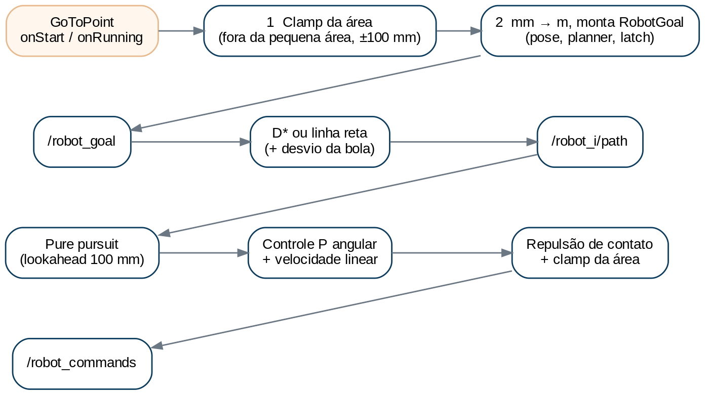
GoToPoint é a folha mais usada do projeto (93 usos em 25 arquivos XML) e a principal "porta de entrada" do movimento. É uma ação assíncrona (stateful) que pede ao resto do sistema que leve o robô a um ponto, e depois observa se ele chegou.
| Porta | Tipo | Padrão | O que faz |
|---|---|---|---|
robot_id |
unsigned int |
— | Robô a comandar. Se diferente do robô desta instância, a folha devolve SUCCESS sem fazer nada. |
x, y |
double (mm) |
— | Alvo, no referencial do campo. |
face_x, face_y |
double (mm) |
ausentes | Ponto para onde o robô deve olhar ao chegar (a bola, um companheiro, o gol). Devem ser passados juntos. Sem eles, o robô olha para o gol adversário. |
tolerance |
double (mm) |
−1,0 | Raio de chegada. Se ≤ 0, a folha nunca devolve SUCCESS (e o controlador não "trava" o robô perto do alvo). |
planner |
string |
"dstar" |
"dstar" (desvia de obstáculos) ou "straight_line" (reta). Qualquer outro valor usa o D*. |
ball_contact_threshold_mm |
double |
−1,0 | Se > 0, a folha falha se a bola chegar a menos desse valor do robô por mais de 150 ms — força a árvore a recalcular. |
ignore_area |
bool |
false |
Desliga a restrição de áreas de defesa (usado nos desafios técnicos). |
ball_side_check |
bool |
false |
Se verdadeiro, falha se o robô estiver, a menos de 600 mm da bola, do lado do gol (isto é, "na frente" da bola) por mais de 150 ms. |
onStart — ao ser ativada:
1. verifica se o robot_id pedido é o do próprio processo (senão, SUCCESS imediato);
2. lê x e y;
3. aplica a restrição de área (ver adiante);
4. calcula o ângulo de orientação desejado (para face_*, ou para o gol adversário);
5. publica um RobotGoal e devolve RUNNING.
onRunning — a cada tick:
1. relê x e y (eles podem mudar na blackboard) e, se o alvo se moveu mais de 2 mm ou o ângulo de orientação mais de cerca de 1°, republica o objetivo; caso contrário, não publica nada (o último objetivo continua valendo);
2. avalia os gatilhos de falha (ball_contact_threshold_mm, ball_side_check);
3. se tolerance > 0, verifica se chegou: distância menor que tolerance e erro de orientação menor que 0,15 rad (≈ 8,5°). Só então devolve SUCCESS;
4. senão, devolve RUNNING.
onHalted — vazio. A folha não cancela o objetivo ao ser interrompida. Isso é relevante: quando um ramo de maior prioridade assume, o RobotGoal anterior continua publicado e o controlador segue tentando alcançá-lo até que alguém publique outro objetivo ou um override de parada. No Capítulo 13 discutimos a consequência; no Capítulo 21 propomos a correção.
O que significa SUCCESS aqui
GoToPoint devolve SUCCESS quando a posição e a orientação estão dentro da tolerância. Se o robô chega ao ponto mas não consegue alinhar com o face_* (por exemplo, porque o alvo de orientação está longe e instável), a folha continua RUNNING indefinidamente, sem erro. Há um log a cada segundo com a distância e o erro angular para facilitar o diagnóstico.
Antes de publicar, GoToPoint corrige o alvo para que o robô não seja mandado a lugares proibidos (Figura 7.2):
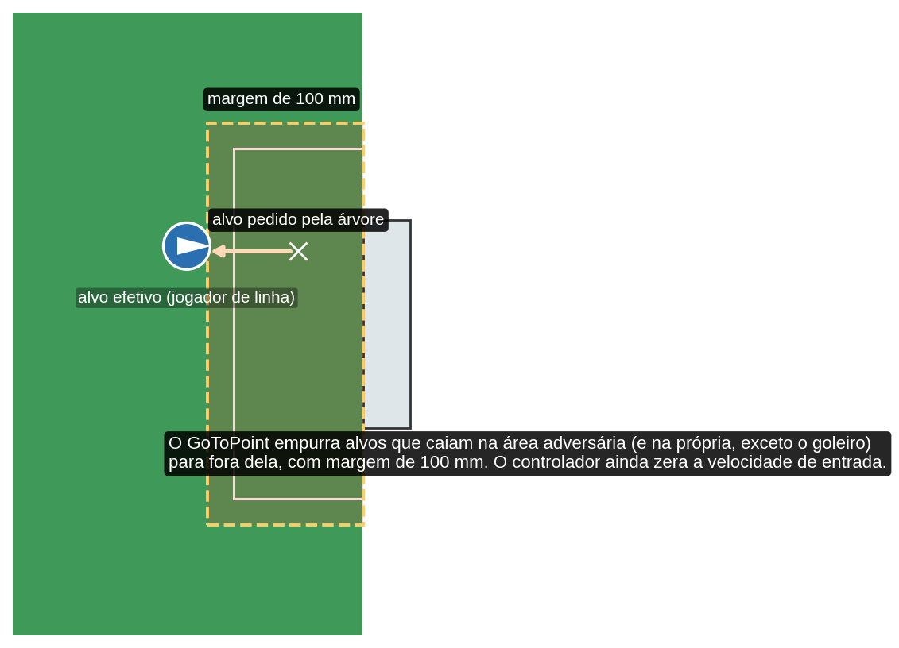
Esse mecanismo existe em três camadas independentes, o que dá segurança, mas também pode surpreender: (1) GoToPoint corrige o alvo; (2) o planejador D* constrói uma "parede" no mapa e também corrige o alvo; (3) o controlador zera a componente de velocidade que levaria o robô para dentro da área. A opção ignore_area=true só desliga a camada 1.
A comunicação entre a árvore e o resto do sistema é a mensagem RobotGoal, publicada em /robot_goal com QoS transient_local (guarda o último valor):
robot_id: de quem é o objetivo;pose: posição em metros e orientação como quaternion (a conversão de mm para m acontece aqui);planner_type: PLANNER_DSTAR (0), PLANNER_ASTAR (1, hoje equivalente ao D*) ou PLANNER_STRAIGHT_LINE (2);disable_arrival_latch: verdadeiro quando tolerance ≤ 0; instrui o controlador a nunca "travar" o robô por estar perto do alvo.O d_star_planner_node_<i> calcula, a partir do objetivo, uma rota livre de colisões. Ele trabalha sobre uma grade de ocupação publicada pelo game_observer_node no tópico /map: uma grade de células de 5 cm que cobre o campo com 60 cm de margem, onde cada robô (aliado ou adversário, inflado em 150 mm) é marcado como obstáculo.
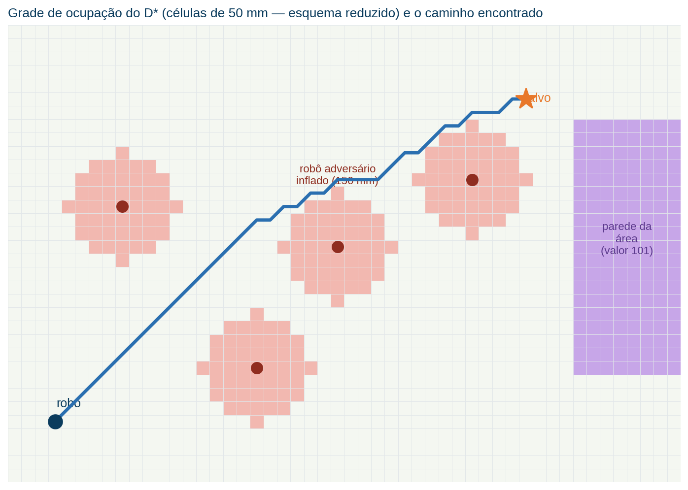
Além do mapa, o planejador considera como obstáculos dinâmicos os aliados (raio de segurança de 0,20 m) e a bola (raio de 0,15 m — menor, para não bloquear o ponto de captura do atacante, que fica logo atrás da bola). A parede das áreas de defesa é desenhada no mapa com um valor especial (101), para que o planejador nunca a atravesse.
Pontos de funcionamento relevantes:
Quando planner="straight_line", o planejador ignora a grade e interpola pontos a cada 10 cm entre o robô e o alvo. Há um único cuidado: se a bola estiver a menos de 0,20 m dessa reta (e não perto do próprio alvo), é inserido um ponto de desvio lateral. Esse modo é usado nos trechos finais do ataque, quando o robô quer chegar perto da bola; mas atenção: ele não desvia de adversários nem de aliados.
O movement_calculation_node (por robô, no processo path_follower_node_<i>) é o único escritor autorizado do tópico /robot_commands. A cada 50 ms ele decide o que o robô faz, em ordem de prioridade (veja a Figura 7.4):
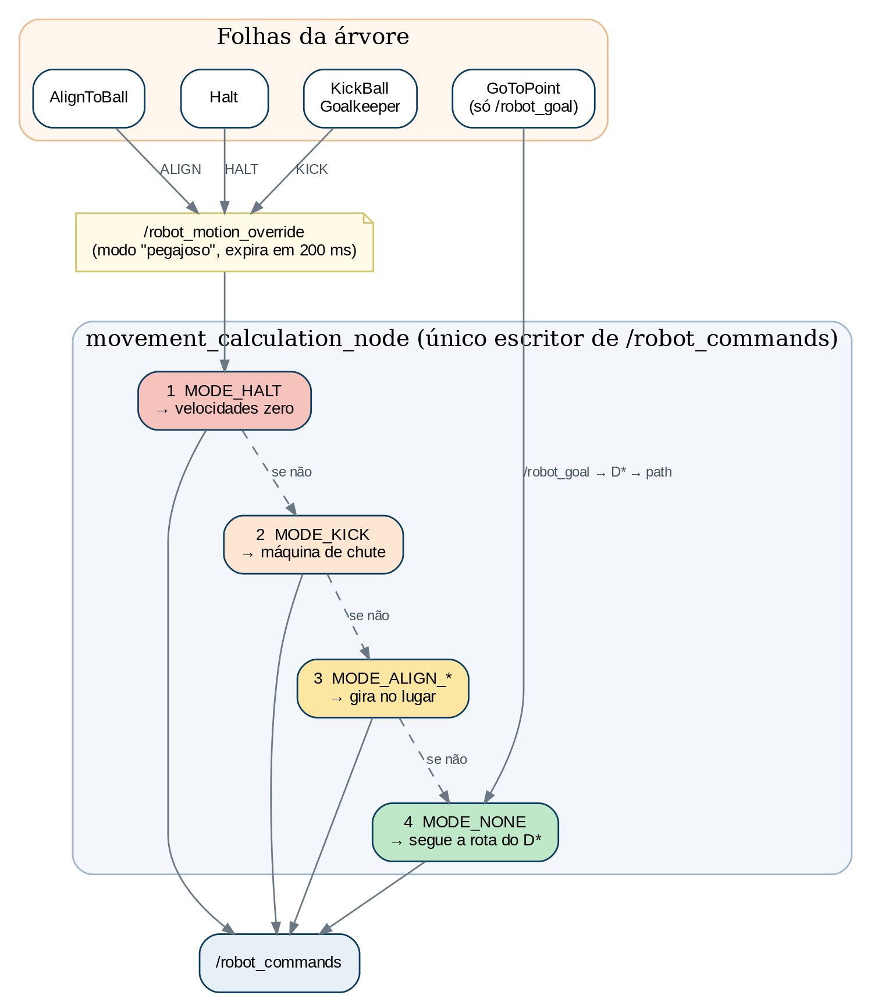
O seguimento de rota usa o método pure pursuit omnidirecional (Figura 7.5): o controlador procura, ao longo da rota, o primeiro ponto a mais de 100 mm do robô (lookahead) e aponta a velocidade linear para ele. O módulo da velocidade é proporcional à distância até esse ponto (ganho 2,0), limitado por max_linear_speed (1,0 m/s por padrão no código). A orientação segue um controle proporcional (ganho 3,0, saturação em 4,0 rad/s, tolerância de 0,1 rad) em direção ao ângulo pedido pelo RobotGoal ou, na falta dele, ao ângulo da própria rota.
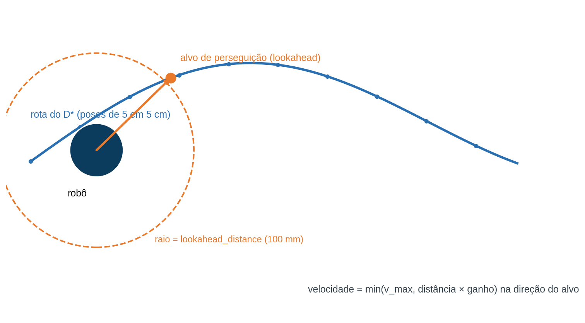
Alguns refinamentos importantes:
cos(erro angular): o robô gira antes de avançar, evitando empurrar a bola desalinhado.disable_arrival_latch esteja ativo (tolerance ≤ 0).Não há limite de velocidade por fase de jogo
O único teto de velocidade é max_linear_speed, fixo. Em STOP o regulamento exige menos de 0,75 m/s, e o controlador atual não aplica esse limite. A proposta do Capítulo 17 (SafetyGate) resolve isso.
Algumas ações não são "seguir uma rota" — são ações físicas especiais. Em vez de escreverem direto em /robot_commands (o que criaria uma disputa entre várias fontes), as folhas enviam um pedido de modo ao controlador por /robot_motion_override:
| Modo | Quem pede | Efeito |
|---|---|---|
MODE_HALT |
Halt |
velocidades zero |
MODE_KICK |
KickBall, Goalkeeper |
máquina de chute |
MODE_ALIGN_TO_BALL / MODE_ALIGN_TO_ANGLE |
AlignToBall |
gira no lugar |
MODE_NONE |
qualquer folha, ao terminar | volta ao seguimento de rota |
O override é "pegajoso": continua valendo até a folha liberá-lo (MODE_NONE). Como proteção contra uma folha que pare de enviar, o controlador o considera expirado após 200 ms sem renovação. Isso tem duas consequências: ações que precisam do override devem reenviá-lo a cada tick (é o que KickBall e Halt fazem), e, se a árvore deixar de ticar, o robô volta a seguir a última rota em até 200 ms — e não para.
O controlador responde com RobotMotionStatus (aligned, kick_fire_count, modo ativo), que as folhas leem para decidir SUCCESS.
O chute é uma pequena máquina de estados dentro do controlador (Figura 7.6). Ao receber MODE_KICK com o controlador ocioso e fora do tempo de espera, ele entra em FIRING por 200 ms: publica o kick_speed pedido e avança a 0,5 m/s na direção em que o robô está olhando, garantindo o contato. Ao fim da janela, incrementa kick_fire_count e entra em cooldown de 600 ms com o robô parado. A folha KickBall guarda o contador no início e devolve SUCCESS quando ele sobe; como cada tick reenvia o pedido, o cooldown evita que o chute vire uma "metralhadora".
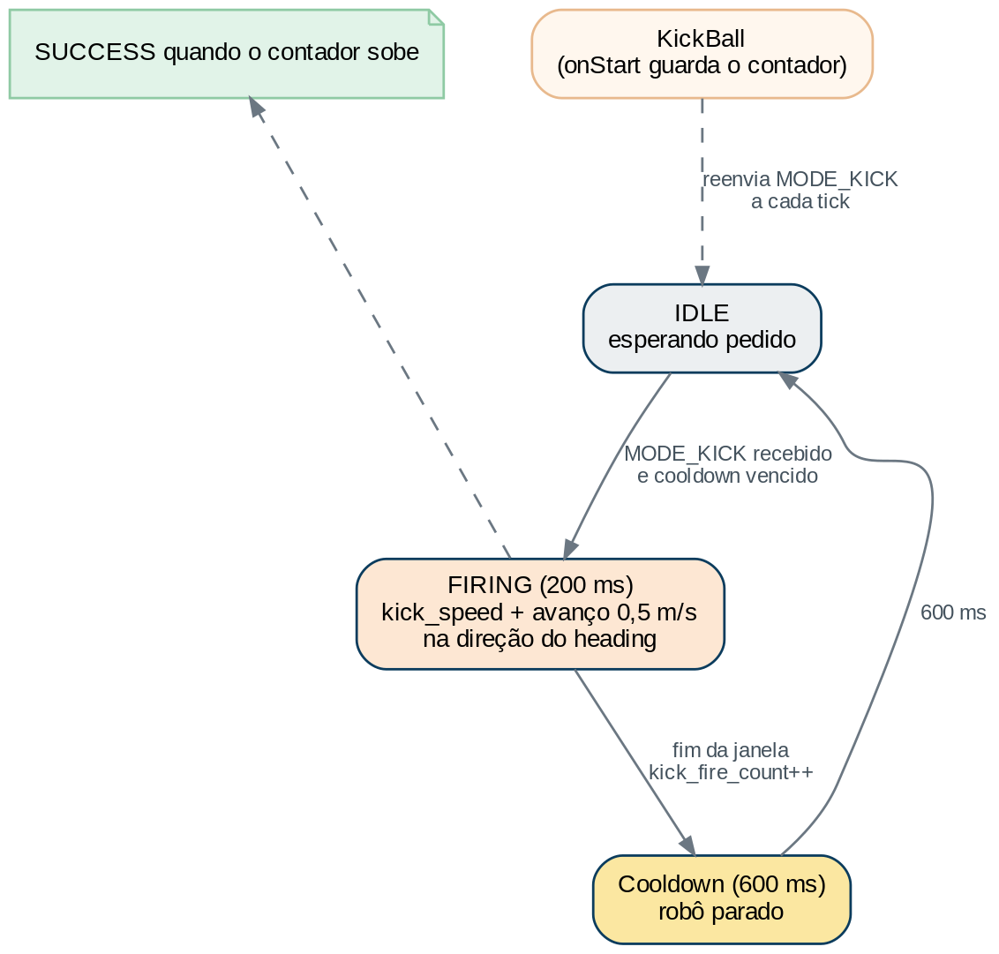
O chute é limitado em 3 m/s
KickBall limita kick_speed a 3,0 m/s antes de pedir o chute, o que atende ao limite de velocidade de bola da SSL-EL. Mesmo que o XML peça 6,5 (como em master_strategy_carry.xml), o valor efetivo é 3,0.
Para os robôs reais, o rádio NRF24 pode operar em dois formatos (command_mode): velocidade (o rádio envia as velocidades locais) ou ponto (o rádio envia um alvo cinemático e o robô fecha o laço localmente). No modo ponto, o trajectory_setpoint_node_<i> observa os comandos de velocidade e a predição do Kalman e publica RobotTrajectorySetpoint: um ponto futuro à frente do robô (velocidade × período de publicação × um fator de segurança, limitado por um teto), a velocidade desejada nesse ponto, o ângulo-alvo e a pose atual de referência. O firmware usa a pose de referência para corrigir o erro.
O último passo é o driver, escolhido por mode: o grSim_controller_node traduz RobotCmd para o protocolo do grSim (UDP); o ra_controller_node converte as velocidades globais em locais para o ER-Force Ra; e o nrf24_bridge_node serializa os comandos no protocolo binário do rádio (definido em ssl_robot_protocol.bitproto) e publica a telemetria dos robôs (bateria, erros) em /robot_telemetry.
Toda decisão da árvore parte de uma imagem do mundo. Este capítulo descreve como o software constrói essa imagem — o que o observador faz com os dados da visão, como o filtro de Kalman estima velocidades, como o campo é descrito e como o "lado" do campo é tratado — e quais são as limitações que a estratégia precisa levar em conta.
O game_observer_node (pacote oxebots_observers) é o tradutor central: recebe as mensagens da ponte de visão e produz o que o resto do sistema consome.
| Entrada | Saída |
|---|---|
ssl_vision_bridge/vision_messages (VisionWrapper) |
/game_data (GameData): robôs aliados e adversários e bola, em mm |
gc_multicast_bridge/referee_messages (Referee) |
/field_geometry (SSLGeometryData, transient_local): dimensões do campo |
/map (OccupancyGrid, transient_local): grade de obstáculos para o D* |
|
ball_data (BallPosition) e robot_data (RobotPosition): entrada do Kalman |
(O observer também assina o comando do árbitro, mas hoje apenas o registra em log.)
is_yellow_team, as detecções de robôs amarelos e azuis são separadas em "aliados" e "adversários". Os robôs são guardados em um mapa por identificador: cada nova detecção atualiza o identificador, sem apagar os outros.min_ball_confidence; o próprio código comenta que esse valor é um ponto de partida e deve ser calibrado com dados reais). Detecções piores são descartadas e a última posição boa é mantida.invert_sides está ativo (veja adiante).GameData é publicado sempre que há uma bola aceita. Em outras palavras: se a bola desaparece (oclusão, falha de visão), o observer deixa de publicar — inclusive a posição dos robôs.O observer converte a geometria recebida (geometry[0]) para milímetros e a publica. Como alguns simuladores (grSim) não preenchem a profundidade e a largura da área de defesa nem o raio do círculo central, o observer os deduz das linhas do campo e, em último caso, usa os valores regulamentares: para campos de até 5500 mm, área de 500 × 1350 mm (SSL-EL) e círculo de 500 mm de raio. Assim, as árvores não precisam de números mágicos: tudo vem de /field_geometry e é copiado para a blackboard pelo strategy_node.
A cada atualização, o observer constrói uma OccupancyGrid de resolução 0,05 m (map_resolution), com margem de 0,6 m ao redor do campo, marcando cada robô — aliado ou adversário — como um quadrado de raio robot_inflation_radius (150 mm). A grade é a única fonte de obstáculos "estáticos" do D* (a bola e os aliados são tratados também como obstáculos dinâmicos pelo próprio planejador).
Alguns simuladores (como o ER-Force Ra) colocam o time em lados do campo opostos aos esperados pelo software. Para não duplicar lógica, o observer pode espelhar tudo quando invert_sides está ativo: cada posição passa de (x, y) para (−x, −y) e cada ângulo de θ para θ + π (Figura 8.1).
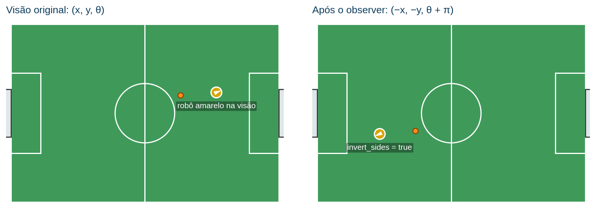
Por padrão, invert_sides é verdadeiro apenas em mode:=ra. É preciso distinguir dois conceitos que o código mistura em um só:
is_yellow_team): decide quem é aliado e quem é adversário na visão e quais portas do simulador usar.invert_sides): decide se o referencial é espelhado.A blackboard guarda is_yellow como a cor efetiva (is_yellow_team XOR invert_sides) e calcula my_goal_x a partir dela. O efeito prático: independentemente de o simulador espelhar ou não, o gol que a estratégia chama de "meu" é +L/2 para a cor efetiva amarela e −L/2 para a azul.
Os dados da visão chegam com ruído e sem velocidade. O kalman_filter_node (oxebots_prediction) resolve isso com filtros dedicados:
A saída é publicada em ball_predicted (BallPrediction: posição, velocidade e aceleração) e robot_predicted (RobotPrediction). O principal consumidor é a folha CalculateInterception (Capítulo 9), que usa velocidade e aceleração para prever onde a bola estará. O trajectory_setpoint_node também usa a predição dos robôs.
Predição do Kalman × diferença finita
O defensor não usa o Kalman: o strategy_node calcula a velocidade da bola por diferença finita entre duas leituras consecutivas de /game_data (ball_vel). É uma estimativa bem mais ruidosa que a do filtro. Unificar as duas fontes é uma melhoria natural (Capítulo 19).
Reunindo o que vimos, a imagem do mundo que chega à árvore tem quatro limitações que não podem ser esquecidas:
GameData não carrega timestamp: não há como saber quão velha é uma leitura. Se a visão cair, a árvore continua a "ver" os últimos valores.Cada uma delas tem uma correção proposta na Parte IV, e a mais importante — o carimbo de tempo — é pré-requisito para a supervisão de segurança da Master Tree.
O atacante é o robô que disputa e conduz a bola. Sua lógica é a mais elaborada do sistema e reúne, em um só ramo, quase todas as técnicas vistas até aqui: preparação de dados, predição, movimento com planejamento, movimento em linha reta, verificação de condições e chute. Este capítulo explica como o atacante decide, começando pelas folhas que preparam os dados e terminando pela árvore completa.
UpdateBallPosition é uma ação cujo trabalho é preparar dados para o resto do ramo; ela sempre devolve SUCCESS quando tem dados. A cada tick ela:
ball_x, ball_y e ball_in_enemy_half (ball_x > 0);pre_kick_x, pre_kick_y): um ponto sobre a reta que liga o gol alvo à bola, 400 mm atrás da bola (do lado oposto ao gol);is_ready_to_kick), usando uma histerese: para entrar no estado "pronto", o robô precisa estar a menos de 150 mm do ponto de pré-chute; para permanecer pronto, basta estar a menos de 600 mm. Em ambos os casos, é preciso estar do lado certo da bola (produto escalar positivo), isto é, atrás dela em relação ao gol.A histerese evita que a decisão oscile quando o robô está na fronteira: sem ela, o estado "pronto" ligaria e desligaria a cada tick, e o robô hesitaria.
Perseguir a posição atual da bola faz o robô sempre chegar atrasado quando ela se move. CalculateInterception calcula, em vez disso, onde interceptá-la, com um algoritmo de busca simples e robusto.
O nó assina as predições do Kalman (ball_predicted, robot_predicted) e, para instantes t de 0,05 s a 3 s (passos de 0,05 s), faz duas perguntas:
t? Usa o movimento com aceleração (a bola desacelera pelo atrito do carpete) e, se ela já parou antes de t, considera o ponto final.t? Calcula o tempo de deslocamento do robô até aquele ponto com um perfil trapezoidal de velocidade (aceleração máxima de 2000 mm/s², velocidade máxima de 1500 mm/s), levando em conta a velocidade atual do robô na direção do alvo (se ele está indo para o lado contrário, primeiro precisa frear).O primeiro t em que o robô consegue chegar a tempo define o ponto de interceptação. Se nenhum serve, o alvo é o ponto onde a bola para.
Um cuidado importante: com a bola parada, o ruído do filtro (alguns cm/s) seria amplificado por essa busca de até 3 s, fazendo o ponto "pular" a cada tick. Por isso há uma banda-morta: se a velocidade da bola é menor que 150 mm/s, a velocidade e a aceleração são zeradas e o ponto de interceptação passa a ser a própria posição da bola.
A partir do ponto de interceptação, o nó calcula uma família de pontos, todos sobre a reta bola–gol, ilustrados na Figura 9.1:
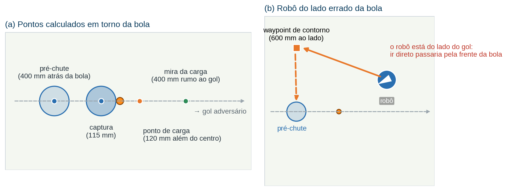
| Saída | Onde fica | Para que serve |
|---|---|---|
intercept_x/y |
onde interceptar a bola | alvo da aproximação "pura" |
intercept_pk_x/y |
400 mm atrás do ponto de interceptação | pré-chute: de onde o robô arranca já alinhado |
intercept_pk_safe_x/y |
igual ao pré-chute, ou um ponto de contorno lateral | alvo da fase 1 |
intercept_capture_x/y |
115 mm atrás da bola | captura: ponto onde o robô encosta alinhado |
intercept_carry_x/y |
120 mm além do centro da bola, do lado do gol | carga: alvo de condução (ver abaixo) |
intercept_carry_face_x/y |
400 mm à frente da bola, rumo ao gol | para onde o robô olha ao conduzir |
is_ready_to_kick |
— | mesma histerese de prontidão |
O ponto de contorno (pk_safe) merece atenção. O planejador D* evita colidir com a bola, mas não tem noção de por qual lado contorná-la para chegar atrás dela. Se o robô já está do lado do gol, ir direto ao pré-chute o faria passar pela frente da bola. Então, enquanto o robô está do lado errado, o alvo é um ponto deslocado 600 mm lateralmente (perpendicular à reta bola–gol, do lado em que o robô já está), forçando o D* a rodear a bola. Uma histerese de 80 mm evita que o contorno ligue e desligue na fronteira.
O ponto de carga ficar além da bola é deliberado: como a velocidade do controlador é proporcional à distância ao alvo, mirar além do ponto de contato mantém uma velocidade de empurrão mais alta com o mesmo controlador proporcional. Já o ponto de mira da carga é recalculado a cada tick sobre a posição bruta da bola (e não sobre a predição), para evitar que o alvo de orientação deslize para a frente da bola durante o empurrão.
IsBallClose é uma condição: verdadeira se a distância do robô à bola (da posição real, não da predita) é menor que distance_threshold e, se angle_threshold_deg > 0, se o desvio entre a frente do robô e a bola é menor que esse ângulo. A checagem de ângulo existe porque estar "perto" não basta: a bola pode estar ao alcance em distância e fora do cone de contato do chutador — o que produzia chutes inconsistentes.KickBall pede o chute ao controlador (MODE_KICK, no máximo 3 m/s) e devolve SUCCESS quando o controlador conta um chute concluído (Capítulo 7).O ramo AttackerRole do mestre atual, master_strategy_carry.xml, é uma ReactiveSequence com a condição de papel e um laço (Figura 9.2):
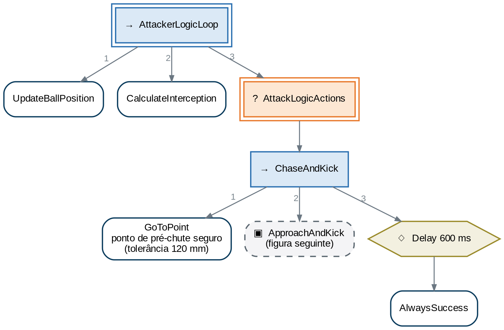
IsMyRole = attacker é reavaliada a cada tick: se o atribuidor de papéis troca o atacante, o ramo é interrompido.AttackerLogicLoop (uma ReactiveSequence dentro de um RetryUntilSuccessful(-1)) executa UpdateBallPosition, CalculateInterception e a árvore de ações a cada tick, de modo que os pontos de saída estão sempre atualizados.ChaseAndKick é uma Sequence com três passos:
- Fase 1 — aproximação. GoToPoint até o ponto de pré-chute seguro (tolerância de 120 mm), com o planejador D* e ball_contact_threshold_mm=150: se a bola chegar perto demais no caminho, a folha falha de propósito, o que obriga a árvore a recalcular tudo a partir da posição real da bola.
- Fase 2 — ApproachAndKick, descrita a seguir.
- Cooldown. Um Delay de 600 ms (com AlwaysSuccess) impede que o atacante reinicie o ciclo imediatamente após um chute.ApproachAndKick é um ReactiveFallback (Figura 9.3): a cada tick, tenta primeiro o comportamento de maior prioridade.
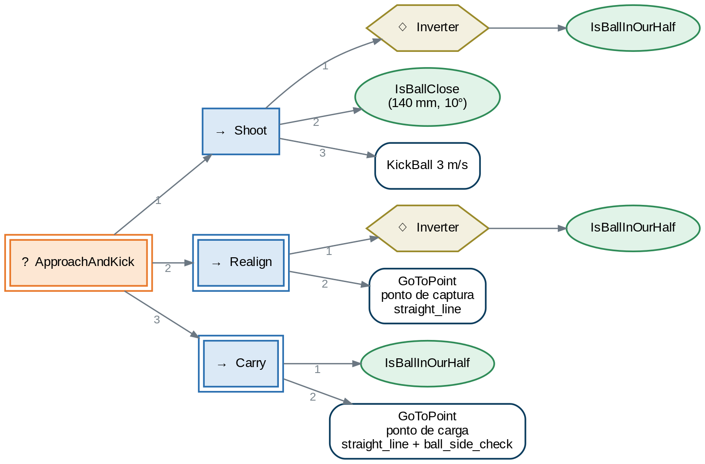
KickBall.ReactiveSequence: se a condição Inverter(IsBallInOurHalf) deixar de valer, o comportamento é interrompido.ball_side_check=true (se o robô acabar do lado errado da bola, a folha falha e tudo recomeça pela fase 1).A figura abaixo resume as quatro fases em termos de geometria:
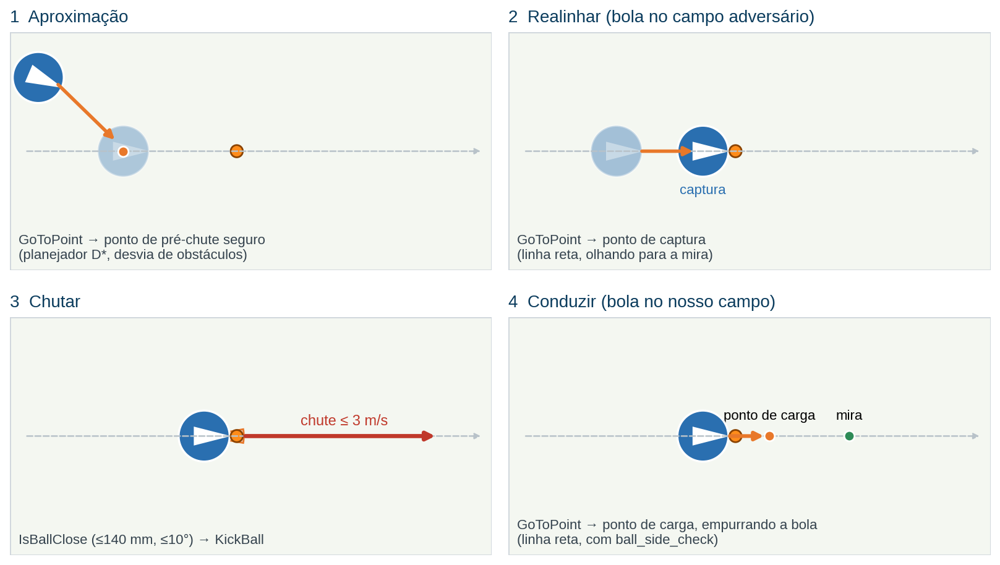
Como a árvore 'recomeça do zero'
Muitas folhas de movimento do atacante usam falhas intencionais (ball_contact_threshold_mm, ball_side_check) como mecanismo de recuperação: quando a situação física muda de modo que o plano em curso deixa de fazer sentido, o GoToPoint falha, a falha sobe pela Sequence e pelo ReactiveFallback, o RetryUntilSuccessful reinicia o laço, e CalculateInterception recomputa os pontos com a posição real da bola. É uma forma de "replanejar" usando apenas a semântica da árvore.
IsBallInOurHalfA condição usa o my_goal_x da blackboard para saber de que lado fica "a nossa metade" e adota uma histerese de 100 mm em torno do meio-campo, com memória do último estado, para a decisão não oscilar com a bola sobre a linha central. (Atenção: como tem memória interna, o estado da condição não é limpo entre ativações.)
Existe uma folha anterior, PrecisionKick, que gira, avança e chuta sozinha, publicando comandos de velocidade diretamente. Ela aparece apenas em árvores antigas e não em master_strategy_carry.xml. Duas razões a tornam inadequada para o jogo completo: ela escreve direto em /robot_commands (disputando o canal com o controlador) e não limita a velocidade do chute. O Capítulo 21 recomenda aposentá-la em favor de KickOnce.
Enquanto o atacante ataca a bola, os outros robôs protegem o gol. Este capítulo descreve os dois comportamentos defensivos do sistema atual: o defensor (um robô de linha) e o goleiro.
A árvore do defensor, defender_tree.xml, é pequena e declarativa (Figura 10.1). Ela só é executada pelo robô que o atribuidor de papéis nomeou defensor (IsMyRole = defender) e decide, por prioridade, entre dois cenários:
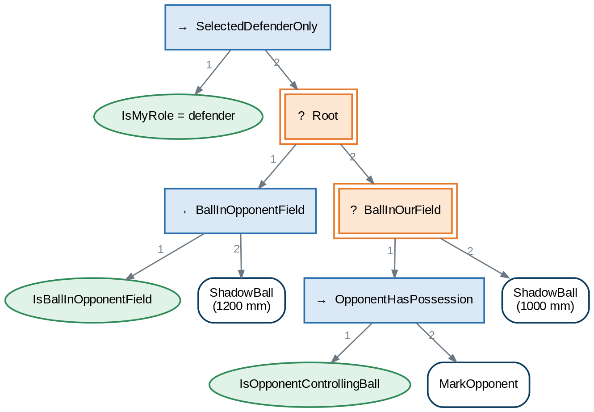
IsBallInOpponentField): o defensor faz ShadowBall — acompanha a bola prevista a uma distância fixa, atrás dela, no rumo do próprio gol, sem nunca cruzar o meio-campo (distância padrão de 1200 mm).IsOpponentControllingBall): MarkOpponent — posiciona-se na linha entre a bola e o gol, a 400 mm da bola, bloqueando o chute;
- caso contrário: volta a fazer ShadowBall, agora com distância de 1000 mm, para cobrir o goleiro em vez de brigar pela bola.Note a escolha de projeto: o defensor não disputa a bola. Quem faz isso é o atacante. O defensor é uma "sombra" que ocupa a posição defensiva correta.
ShadowBall é uma ação síncrona que, a cada tick, calcula um alvo e o publica como RobotGoal. O cálculo (Figura 10.2, painel a):
predict_time (0,3 s).follow_distance na direção do próprio gol. Esse valor é então limitado entre a linha do meio-campo (−180 mm, do nosso lado) e a borda da área de defesa mais 200 mm, de modo que o defensor nunca entre na área.y_limit (900 mm).MarkOpponent (Figura 10.2, painel b) traça a linha da bola ao centro do próprio gol e coloca o alvo sobre ela, a block_distance (400 mm) da bola, com o mesmo limite de área e |y| ≤ 1200 mm. O defensor fica entre o chutador e o gol.
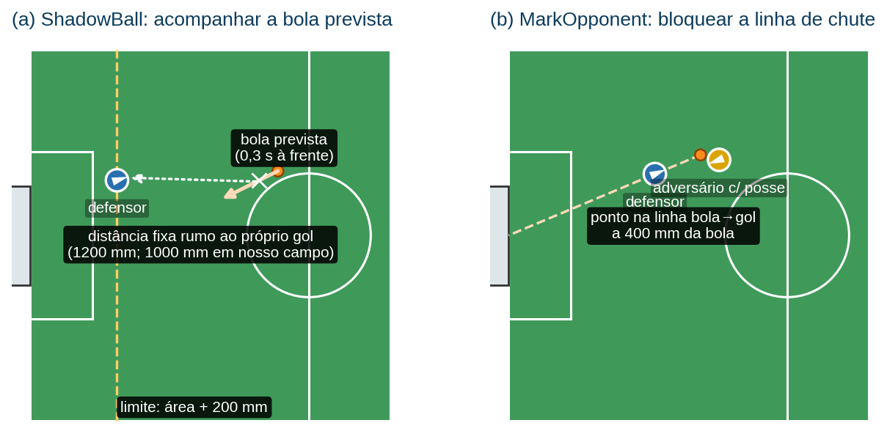
onHalted: ao serem interrompidas por um ramo de maior prioridade, o último alvo continua valendo no controlador.strategy_node, mais ruidosa que a predição do Kalman.GoToClamped, que vai a um ponto limitado fora da área, registrado mas ainda não usado em nenhum XML.O goleiro é o único robô que pode (e deve) entrar na própria área, e o único que, por regra, pode reter a bola ali — por até 10 segundos. A árvore goalkeeper_tree.xml é mínima (Figura 10.3): se robot_id == 0, executa a folha Goalkeeper; caso contrário, o robô fica parado.
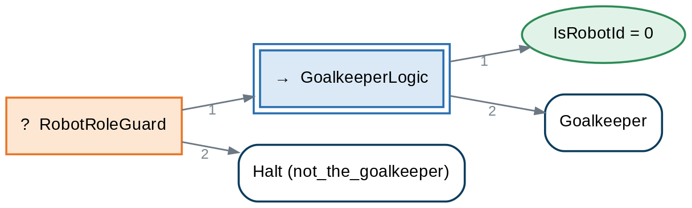
Toda a lógica está na folha Goalkeeper (goalkeeper_node.cpp), uma ação assíncrona que nunca termina (devolve sempre RUNNING) e a cada tick escolhe entre dois estados (Figura 10.4):
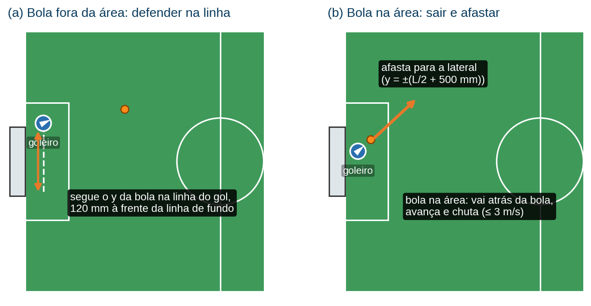
Enquanto a bola está fora da área de defesa, o goleiro fica na linha do gol, 120 mm à frente da linha de fundo, e acompanha o y da bola, limitado a ±(largura do gol/2 − 50 mm). O robô olha para a bola. Usa o planejador de linha reta, sem desvio de obstáculos.
Quando a bola entra na área (com margem zero), o goleiro vai buscá-la e a afasta para a lateral:
y da bola e calcula a direção do chute: da bola até o ponto (0, ±(largura/2 + 500 mm)).MODE_KICK (no máximo 3 m/s).Em todos os casos, o alvo é limitado a ficar dentro da área de defesa.
O que o goleiro atual ainda não faz
A folha não conhece o estado de jogo: ela se comporta do mesmo jeito em qualquer fase. Em particular, não há tratamento do pênalti (o goleiro defensor precisa tocar a linha de gol até a bola entrar em jogo) nem limite de 10 segundos para a bola retida na área. Além disso, a identidade do goleiro é fixa (robot_id == 0) e a folha devolve RUNNING mesmo sem dados, em vez de falhar. O Capítulo 19 propõe essas correções.
O repositório traz outras folhas defensivas já implementadas e registradas, mas ainda sem uso em nenhuma árvore: GoalLineDefend (acompanha o y da bola na linha de gol), PositionBisector (posiciona-se na bissetriz entre a bola e as traves, ponderando 80% bissetriz e 20% bola), SmotherSave (vai direto à bola para "abafar") e LateralClear (afasta a bola para a lateral). São bons pontos de partida para um goleiro mais elaborado.
Com três robôs, o time precisa decidir quem faz o quê: um é goleiro, e dos outros dois um ataca e o outro defende. Essa divisão não é fixa: quem está mais perto da bola, e bem posicionado para ela, deveria atacar, e isso muda o tempo todo. O sistema resolve isso com um componente separado das árvores, o role_assigner_node. Este capítulo explica como ele decide, como evita trocas desnecessárias e como a árvore consome o resultado.
Poderia-se pensar em decidir o papel dentro de cada árvore, olhando a distância à bola. Mas haveria um problema: cada robô tem a sua árvore e a sua visão do mundo; sem coordenação, dois robôs poderiam concluir ao mesmo tempo que "eu sou o atacante" — ou nenhum. A decisão de papel é coletiva: precisa de uma comparação entre todos os robôs. Por isso ela é tomada em um único processo, que olha o time inteiro e publica o resultado.
O role_assigner_node assina /game_data e, a cada mensagem, calcula um custo para cada robô de linha (o goleiro, identificado por goalkeeper_id, não participa). Quanto menor o custo, mais apto o robô é a atacar:
custo = w1 · r + w2 · (1 − cos θ)
r é a distância do robô à bola, em metros.θ é o ângulo entre a direção em que o robô está indo (ou, se está quase parado, para onde está virado) e a direção da bola. Um robô que já se move em direção à bola tem cos θ ≈ 1 e custo de alinhamento nulo.w1 = 2,0 e w2 = 1,0 são os pesos padrão: a distância pesa o dobro do alinhamento.A velocidade do robô é estimada por diferença finita entre duas mensagens consecutivas; se o módulo for menor que 50 mm/s, usa-se a orientação do chassi.
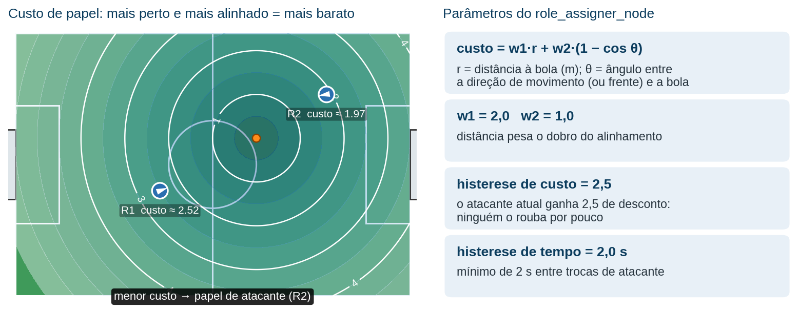
A figura mostra o mapa de custo para uma bola em (500, 300): os círculos concêntricos são curvas de igual custo de distância, e os dois robôs recebem custos diferentes pela combinação de distância e alinhamento. O de menor custo é nomeado atacante; o outro, defensor. Com um único robô de linha, ele é o atacante e o papel de defensor é atribuído ao próprio identificador do goleiro (um "fallback" sem efeito real).
Se a escolha fosse simplesmente "o menor custo agora", o papel oscilaria sempre que dois robôs tivessem custos parecidos: cada oscilação interrompe e recomeça a árvore do robô, e o time perderia tempo e ficaria imprevisível. O atribuidor usa duas proteções:
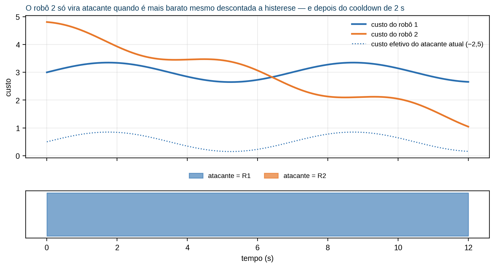
A Figura 11.2 ilustra o efeito com uma simulação da mesma regra: o robô 2 começa com custo maior e vai melhorando; a linha pontilhada mostra o custo efetivo do atacante atual (descontados 2,5). O robô 2 só assume quando sua curva cruza a pontilhada e o cooldown de 2 s permite. Os parâmetros (w1, w2, hysteresis, time_hysteresis) podem ser ajustados no YAML.
O atribuidor publica RoleAssignment { attacker_id, defender_id } em /role_assignment. No strategy_node, a callback role_callback copia os dois valores para as chaves attacker_id e defender_id da blackboard. As árvores então os usam por meio da condição IsMyRole, que compara o robot_id do processo com o identificador do papel pedido (attacker ou defender). Como IsMyRole está como guarda em ReactiveSequence, quando o papel muda, o ramo antigo é interrompido no tick seguinte e o novo é iniciado — e a ação interrompida recebe halt.
O goleiro, por sua vez, não vem do atribuidor: as árvores o identificam por IsRobotId robot_id="0" (o identificador 0 é fixo no código), em paralelo ao parâmetro goalkeeper_id do atribuidor, que só serve para excluí-lo do sorteio.
O mecanismo atual cumpre bem o papel de escolher o atacante em jogo corrido, mas não foi pensado para uma partida completa. As lacunas, que a Parte IV preenche, são:
strategy_node assume attacker_id = 2 e defender_id = 1.Neste capítulo juntamos as peças. A árvore que o time executa hoje é master_strategy_carry.xml (ID MainTreeCarry), configurada como padrão nos arquivos YAML. Ela organiza todo o comportamento em um único ReactiveFallback de ramos por prioridade (Figura 12.1).
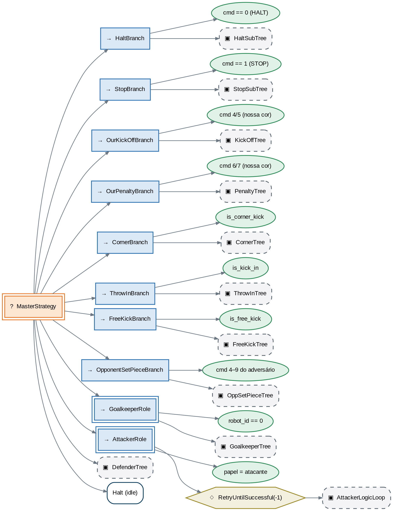
A raiz, MasterStrategy, é um ReactiveFallback: a cada tick, os ramos são tentados de cima para baixo, e o primeiro que tiver sucesso (ou estiver em andamento) é o escolhido; os de baixo são interrompidos. A ordem dos ramos é, portanto, a prioridade:
| # | Ramo | Condição | Ação |
|---|---|---|---|
| 1 | HaltBranch |
comando = 0 (HALT) | HaltSubTree |
| 2 | StopBranch |
comando = 1 (STOP) | StopSubTree |
| 3 | OurKickOffBranch |
comando 4 (se amarelos) ou 5 (se azuis) | KickOffTree |
| 4 | OurPenaltyBranch |
comando 6 (se amarelos) ou 7 (se azuis) | PenaltyTree |
| 5 | CornerBranch |
flag is_corner_kick |
CornerTree |
| 6 | ThrowInBranch |
flag is_kick_in |
ThrowInTree |
| 7 | FreeKickBranch |
flag is_free_kick |
FreeKickTree |
| 8 | OpponentSetPieceBranch |
comando do adversário (kick-off 4/5, pênalti 6/7, falta 8/9) ou flag is_opponent_foul |
OppSetPieceTree |
| 9 | GoalkeeperRole |
robot_id == 0 |
GoalkeeperTree |
| 10 | AttackerRole |
papel = atacante | laço do atacante (Capítulo 9) |
| 11 | (defensor) | papel = defensor | DefenderTree |
| 12 | Halt (idle) |
— | parar o robô |
Os ramos 1 a 8 tratam bolas paradas e comandos do árbitro; os ramos 9 a 11 tratam o jogo corrido, distribuindo o trabalho pelos papéis; o ramo 12 é a rede de segurança: se nenhum outro serve, o robô fica parado.
Uma observação sobre a seleção de cor: os ramos de kick-off e pênalti usam is_yellow (a cor efetiva) para escolher entre os comandos "amarelo" e "azul". Por exemplo, OurKickOffBranch aceita cmd == 4 se somos amarelos e cmd == 5 se somos azuis. O ramo do adversário usa os comandos complementares.
HaltSubTree é uma única ação Halt. StopSubTree é uma ReactiveSequence que atualiza a posição da bola e chama a folha KeepDistance com 550 mm (0,5 m do regulamento mais 5 cm de margem), como mostra a figura a seguir. Esse ramo é crítico e merece a leitura do Capítulo 13.
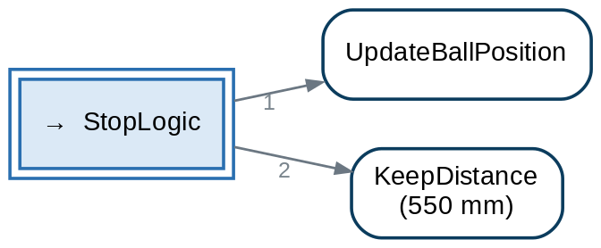
O kick-off do nosso time distribui três papéis com um Fallback (Figura 12.3):
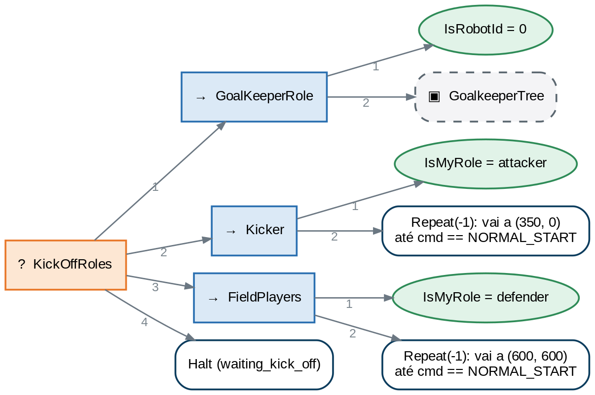
robot_id == 0) executa GoalkeeperTree;(350, 0) — dentro do círculo central, como é permitido ao cobrador — e espera até o comando virar NORMAL_START (o Repeat com um Inverter(CheckGCCommand 2) é o mecanismo de espera);(600, 600) pela mesma lógica;Halt waiting_kick_off).As coordenadas são literais no XML, um ponto a que voltaremos: elas só são válidas para um dos lados do campo.
A árvore de pênalti do nosso time tem um Fallback com três ramos: o atacante (cobrador), o goleiro (que executa Goalkeeper) e os demais (Halt). O cobrador tem uma ReactiveFallback interna com duas ações: "executar o pênalti" (quando o comando é NORMAL_START: vai à bola e chuta) e "preparar" (vai ao ponto de pré-chute e aguarda). Há uma sutileza importante sobre a primeira: ela só roda se o comando for 2 enquanto o ramo do pênalti está ativo — e o ramo do mestre só é ativado com o comando de preparação (6 ou 7). Veja a discussão no Capítulo 13.
Na falta a nosso favor, o goleiro continua na meta, o cobrador (atacante) vai ao ponto de pré-chute e, em seguida, em paralelo, avança à bola e chuta (um Parallel(success=1, failure=1) combina GoToPoint à bola e "espere IsBallClose e então KickBall"). O suporte (defensor) mantém-se a 650 mm da bola se ela chegar a menos de 600 mm, ou vai a uma posição fixa.
Quando a bola parada é do adversário, o objetivo é recuar sem cometer falta: o goleiro defende normalmente; o defensor e o atacante vão a posições táticas fixas, mas — se a bola chegar a menos de 600 mm — recuam para 650 mm dela com KeepDistance.
Árvores específicas para escanteio e lateral. Dependem de flags (is_corner_kick, is_kick_in) que ninguém escreve hoje — e, como vimos no Capítulo 2, escanteios e laterais chegam como DIRECT_FREE. Na prática, são código sem uso.
Se nenhum ramo de bola parada se aplica, o mestre cai nos três ramos de papel:
ReactiveSequence(IsRobotId 0, GoalkeeperTree).DefenderTree (Capítulo 10).Halt idle): robôs sem papel, ou se tudo falhar.Observe que, neste desenho, "jogo corrido" não é uma condição verificada: é o que sobra quando nenhum outro ramo casa. Esse "default" é elegante, mas tem uma consequência importante, que o próximo capítulo explora: qualquer comando que o mestre não conhece cai, silenciosamente, no jogo corrido.
O diretório behavior_trees/ contém muito mais do que a árvore mestre:
master_strategy.xml (só para o time amarelo) e game_manager.xml (um seletor com Fallback, sem preempção).simple_attack.xml, attack_logic.xml, test_attack.xml, normal_play.xml.start_game_left.xml, start_game_right.xml.test_prediction.xml, test_roles.xml, test_tree.xml.kick_technical_challenge1-4.xml, placement_technical_challenge_*.xml): roteiros específicos, um por robô, escritos para as provas técnicas do campeonato. Usam IsThisNodeID, AimAt, Sleep e ignore_area.Como o strategy_node registra todos os .xml do diretório, esses arquivos coexistem na mesma fábrica — o que exige IDs únicos, e vários legados têm o mesmo MainTree.
O sistema atual já faz muita coisa bem: percebe o jogo, planeja rotas, ataca, defende e executa várias bolas paradas em simulação. Mas ele foi construído de forma incremental, desafio a desafio, e algumas decisões que funcionam em um cenário controlado deixam de funcionar quando se pensa em uma partida inteira, com todos os comandos do árbitro, os dois lados do campo e falhas de comunicação. Este capítulo reúne esses pontos. O objetivo não é criticar, e sim mapear com precisão o que precisa ser resolvido — cada ponto aponta o capítulo da Parte IV que o resolve.
Como vimos no Capítulo 12, o jogo corrido é o destino padrão do mestre: se nenhum ramo de bola parada casa, o robô joga. Isso é cômodo, mas significa que um comando sem ramo é tratado como se o jogo estivesse rolando.
Hoje, dois comandos regulamentares não têm ramo nenhum:
TIMEOUT_YELLOW/BLUE (12/13). Durante um timeout, os robôs deveriam ficar parados. Em vez disso, o mestre os põe para jogar: o atacante persegue a bola.BALL_PLACEMENT_YELLOW/BLUE (16/17). Durante o posicionamento da bola, o jogo continua parado e tocar na bola é falta. Mas o mestre também trata esse comando como jogo corrido: o atacante vai à bola e tenta chutá-la, e o robô pode ficar dentro do corredor proibido.Há ainda os comandos legados (INDIRECT_FREE 10/11 e GOAL 14/15), que não aparecem nas versões modernas do Game Controller, mas cairiam no mesmo destino.
Solução: cada comando passa a ter uma fase de jogo explícita e um ramo próprio (Capítulos 15, 16 e 18).
NORMAL_START é o comando que autoriza tanto o kick-off quanto o pênalti. O mestre atual só ativa o ramo do kick-off com cmd == 4/5 e o do pênalti com cmd == 6/7 — isto é, com o comando de preparação. Quando chega o NORMAL_START, o comando muda para 2, nenhum desses ramos casa mais, e o robô cai no jogo corrido (Figura 13.1).
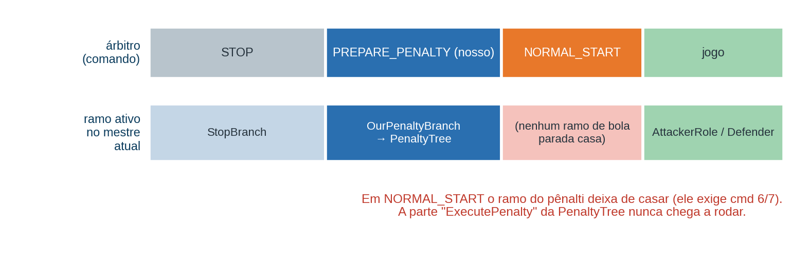
Consequências práticas:
ExecutePenalty da PenaltyTree, que só roda com cmd == 2, nunca é alcançada pelo mestre: o ramo pai não está ativo nesse comando.Repeat com Inverter(CheckGCCommand 2)) terminam quando o comando vira 2 e o jogo corrido assume, com o atacante indo à bola.Solução: guardar o contexto do reinício (kick-off ou pênalti, e a quem favorece) quando chega o comando de preparação, e derivar fases KICKOFF e PENALTY para o NORMAL_START (Capítulo 15).
O StopSubTree (Figura 12.2, do capítulo anterior) contém uma ReactiveSequence com UpdateBallPosition e KeepDistance (550 mm). A intenção é nítida: manter o robô a 0,5 m da bola. Mas a implementação tem dois problemas que, juntos, impedem o efeito:
KeepDistance declara as entradas robot_x e robot_y sem valor padrão, e o XML não as passa. Como vimos no Capítulo 5, a biblioteca não busca por conta própria uma chave com o mesmo nome na blackboard; getInput falha e a folha devolve FAILURE (conferido nas fontes da série 4.6 da biblioteca).KeepDistance funcionasse, ela só calcula um ponto de recuo (target_x, target_y) e não move o robô; nenhum XML conecta essas saídas a um GoToPoint.O efeito em cascata é sério: a ReactiveSequence do STOP falha, o StopBranch falha, e o mestre segue para os ramos de baixo — o jogo corrido — durante o STOP. O mesmo padrão aparece em free_kick.xml e opp_set_piece.xml (quatro usos de KeepDistance ao todo), e a folha AimAt dos desafios técnicos sofre do mesmo problema de portas.
Vale confirmar com um teste
A análise acima decorre do código e da semântica da biblioteca. Como o time registrou os desafios técnicos como concluídos, convém executar Desafio1 com o Groot2 e confirmar o comportamento na versão instalada (4.10). O plano de testes (Capítulo 23) inclui um validador estático de XML que detecta automaticamente portas obrigatórias não informadas.
Solução: uma StopTree que de fato move o robô (ComputeLegalSlot + GoToPoint, ou HoldPosition) e uma KeepDistance corrigida (Capítulos 17 e 21).
Como vimos nos Capítulos 6, 7 e 8, a imagem do mundo que chega à árvore não carrega idade: GameData não tem carimbo de tempo, os robôs não expiram no observer, e o observer só publica quando vê a bola. Se a visão cair:
Em outras palavras, o sistema não tem um modo seguro de falha: se a árvore parar de ticar (travada, em crash, ou esperando um recurso) o robô continua se movendo. É o ponto mais sério do ponto de vista de segurança.
Solução: carimbar os dados, validar a idade com uma condição (IsDataFresh) no ramo de maior prioridade da árvore e acrescentar um watchdog no controlador, que zera os comandos se nada chegar por 500 ms (Capítulo 17).
Dois limites do regulamento são só parcialmente cobertos:
max_linear_speed (1,0 m/s no código), em qualquer fase. Em STOP, o limite regulamentar não é aplicado.KickBall limita o pedido a 3 m/s, mas a folha PrecisionKick — presente em várias árvores legadas — não limita (os XML a usam com 4,5 m/s) e ainda escreve diretamente em /robot_commands, rompendo a regra de que o controlador é o único escritor.Solução: um SafetyGate no controlador, que aplica o teto de velocidade da fase atual e limita o chute a 3 m/s independentemente da árvore (Capítulo 17).
A blackboard define my_goal_x como +L/2 para a cor efetiva amarela e −L/2 para a azul. As condições espaciais (IsBallInOurHalf, IsBallInOpponentField) usam esse valor e, portanto, funcionam para os dois times. Porém, vários XML contêm coordenadas literais, e elas pressupõem lados diferentes entre si:
| Árvore | Literal | Pressupõe que a nossa metade é... |
|---|---|---|
kick_off.xml |
(350, 0), (600, 600) |
x positivo (time amarelo) |
opp_set_piece.xml |
x = −1500, x = −500 |
x negativo (time azul) |
free_kick.xml |
(−500, 0) |
x negativo (time azul) |
UpdateBallPosition |
ball_in_enemy_half = ball_x > 0 |
x negativo (time azul) |
O resultado é que, para qualquer um dos dois times, algum desses literais cai do lado errado (Figura 13.2): o time azul (que defende x = −2250) tem o cobrador e o defensor do kick-off posicionados na metade adversária — o defensor ali é falta —, enquanto o time amarelo (que defende x = +2250) vai recuar para posições de bola parada do adversário que ficam perto do gol adversário.
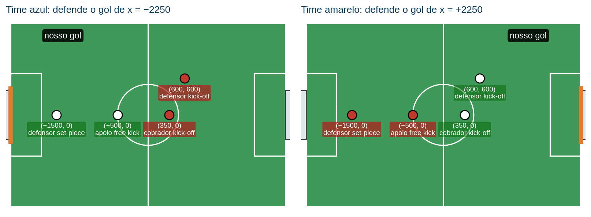
Há ainda um segundo aspecto: o lado é fixo por cor. O Game Controller informa, na mensagem, blue_team_on_positive_half, que indica de que lado cada time realmente joga (e que muda entre os tempos). O software atual ignora esse campo.
Solução: uma chave side_sign e um own_goal_x derivados do campo do árbitro, e posições calculadas (ComputeLegalSlot) em vez de literais (Capítulos 15 e 20).
Como vimos no Capítulo 11: o goleiro é robot_id == 0 por todo o código (árvores, GoToPoint, o controlador e o D* tratam o robô 0 de modo especial), os papéis iniciais são constantes, e o atribuidor não conhece a fase de jogo nem os robôs ativos. Além disso, attacker_ball_dist é calculada no strategy_node com um identificador de atacante fixo (2), independente do papel real.
Solução: goleiro vindo do Game Controller, papéis conscientes da fase e uma época para detectar papéis antigos (Capítulos 19 e 20).
Quando um ramo de maior prioridade assume, a ação anterior recebe halt(). Mas a folha GoToPoint tem onHalted() vazio, e as folhas defensivas (ShadowBall, MarkOpponent) são síncronas e nem têm esse método. O último RobotGoal continua publicado e o controlador o segue. Funciona quando o novo ramo publica seu próprio alvo logo em seguida; mas se o novo ramo não publica nada (por exemplo, uma ação de espera), o robô continua indo para o alvo antigo.
Uma segunda consequência do mesmo desenho: quando o robot_id do GoToPoint não é o do processo, a folha devolve SUCCESS sem fazer nada. É o que permite árvores "multi-robô", como as dos desafios, mas esconde erros de configuração.
Solução: onHalted publicando o alvo "ficar onde está" e uma folha HoldPosition para esperas (Capítulos 17 e 21).
is_corner_kick, is_kick_in e is_opponent_foul são lidas pelo mestre mas nunca escritas por nenhum código — um comentário no XML diz que são "resolvidas no C++", o que não é verdade. IsValueTrue devolve FAILURE quando a chave não existe, e os ramos ficam permanentemente inativos.is_free_kick só considera DIRECT_FREE (8/9) e compara com a cor real (is_yellow_), sem considerar invert_sides.MainTree aparece em oito arquivos e Desafio1/2/3 em dois. Como o registro percorre o diretório numa ordem não especificada, qual definição vale depende do sistema de arquivos; falhas de registro viram apenas aviso no log.HasLineOfSight é um stub que sempre devolve SUCCESS; a_star_planner existe mas não é compilado (a opção astar cai silenciosamente no D*); follow_ball_node.cpp está inteiramente comentado.Solução: limpar e separar as árvores de produção das legadas (Capítulo 24) e consolidar free kicks, laterais e escanteios em uma só subárvore (Capítulo 18).
| Ponto | Consequência | Resolvido em |
|---|---|---|
| TIMEOUT e BALL_PLACEMENT sem ramo | robôs jogam com o jogo parado | Cap. 15, 16, 18 |
| NORMAL_START sem contexto | pênalti/kick-off executados pelo jogo corrido | Cap. 15 |
| STOP com KeepDistance inoperante | atacante age em STOP | Cap. 17, 21 |
| Dados sem idade e sem watchdog | robô se move com a visão caída ou a BT travada | Cap. 17 |
| Sem teto de 0,75 m/s; chute sem clamp em PrecisionKick | faltas de velocidade | Cap. 17 |
| Coordenadas literais e lado fixo | amarelo e azul se comportam diferente; 2º tempo errado | Cap. 15, 20 |
| Goleiro e papéis fixos | sem goleiro alternativo, sem degradação | Cap. 19, 20 |
onHalted vazio |
preempção não pára o movimento | Cap. 17, 21 |
| Flags nunca escritas, IDs duplicados | árvores mortas, registro ambíguo | Cap. 18, 24 |
A arquitetura proposta para que o time jogue uma partida inteira: um estado de jogo único e confiável, uma árvore mestre com prioridades claras, uma subárvore para cada situação regulamentar e papéis dinâmicos.
A Parte III descreveu o que existe. A Parte IV descreve o que construir para que o time jogue uma partida inteira, do primeiro apito ao último. Este capítulo apresenta a visão geral e as decisões arquiteturais; os capítulos seguintes detalham cada peça. Tudo o que aparece a partir daqui é proposta de projeto: os nós e componentes novos ainda precisam ser implementados, e as figuras os marcam com ✦.
Do Capítulo 2 e dos pontos de atenção do Capítulo 13, saem cinco propriedades que a arquitetura precisa garantir:
A primeira decisão é de onde mora a inteligência. Há três modelos possíveis.
Centralizado. Uma única Behavior Tree comanda os três robôs, como se fosse um técnico. Tem a vantagem de a coordenação ser natural (uma árvore sabe o que todos fazem). Mas exige reescrever as folhas, que hoje assumem "o meu robô"; um tick lento atrasa todos os robôs ao mesmo tempo; e a falha de um processo derruba o time inteiro.
Distribuído por robô (o modelo atual). Cada robô tem a sua árvore. É simples, rápido, e a falha de um processo afeta um robô só. Em compensação, a coordenação depende de mensagens externas (como o atribuidor de papéis) e cada árvore precisa reconstruir sozinha o estado do jogo.
Híbrido (a proposta). Mantém uma árvore por robô, para aproveitar o que existe, mas move para serviços de equipe, fora da árvore, tudo o que é coletivo ou crítico: o estado legal do jogo (referee_state_node) e a atribuição de papéis (role_assigner_node). A execução continua distribuída; a decisão sobre "o que está acontecendo" e "quem faz o quê" é única.
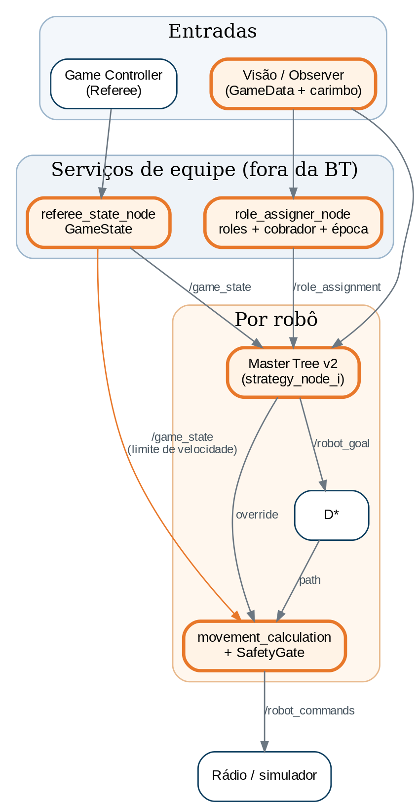
A Figura 14.1 mostra a arquitetura. Os componentes marcados com ✦ são os novos ou ampliados:
referee_state_node: converte o comando bruto do árbitro em um GameState tipado, com a fase de jogo, o favorecido, o limite de velocidade e a idade do dado.role_assigner_node ampliado: além de atacante e defensor, publica goleiro, cobrador de reinício e a lista de robôs ativos.GameData passa a carregar o instante da leitura.Dentro do modelo híbrido, as decisões se organizam em camadas de prioridade decrescente (Figura 14.2):
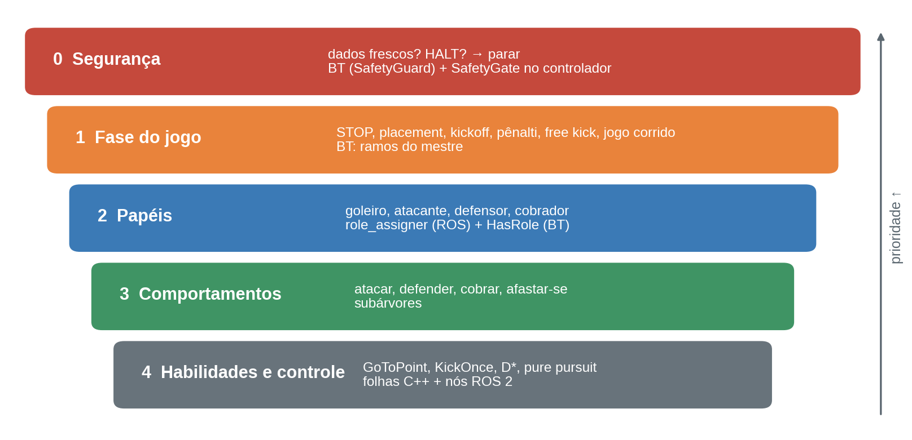
| Camada | Pergunta | Onde vive |
|---|---|---|
| 0 — Segurança | Posso confiar nos dados? O árbitro mandou parar? | BT (SafetyGuard) e SafetyGate no controlador |
| 1 — Fase do jogo | O que está acontecendo: STOP, kick-off, pênalti, jogo corrido…? | BT (ramos do mestre), alimentada pelo GameState |
| 2 — Papéis | Qual é a minha função agora? | role_assigner (ROS) + HasRole (BT) |
| 3 — Comportamentos | Como cumpro essa função nesta fase? | Subárvores (atacar, defender, cobrar…) |
| 4 — Habilidades | Como me movo e chuto? | Folhas C++, D*, controlador |
Um critério ajuda a decidir o que é BT e o que não é: Behavior Trees são excelentes para escolher entre comportamentos por prioridade e reagir a mudanças, mas ruins para manter estado entre ticks (memória de contexto, histerese temporal) e para cálculos coletivos. Por isso a interpretação do árbitro (que precisa lembrar o contexto do reinício), a atribuição de papéis (com histerese) e a vigilância de dados (que precisa de um relógio) ficam fora da árvore, em componentes ROS 2, e a árvore apenas consulta o resultado.
Para evitar conflitos, cada tipo de decisão tem um único dono:
| Decisão | Dono | Os outros... |
|---|---|---|
| Em que fase do jogo estamos | referee_state_node |
só lêem /game_state |
| Quem é goleiro, atacante, defensor, cobrador | role_assigner_node |
só lêem /role_assignment |
| Qual ação este robô executa | a BT do robô | — |
| O que vai para o robô (velocidade, chute) | o controlador (com SafetyGate) | folhas pedem; não escrevem |
| Se um dado ainda é confiável | a condição IsDataFresh e o SafetyGate |
— |
Duas consequências diretas: o strategy_node deixa de interpretar o Referee (a gc_callback atual é removida) e nenhuma folha escreve em /robot_commands.
Algumas regras orientam todos os capítulos seguintes:
Princípios
ReactiveSequence. Uma condição precisa ser reavaliada a cada tick; um Sequence comum não a reavalia enquanto um filho está em andamento.ComputeLegalSlot) a partir da geometria e do lado.onHalted idempotente e rápido, e deixa o robô em estado seguro.Uma preocupação legítima é quanto do que existe será jogado fora. A resposta: muito pouco. As folhas de movimento (GoToPoint, KickBall, IsBallClose, CalculateInterception), o D*, o controlador, o Kalman, o atribuidor de papéis, a árvore do defensor e a lógica do atacante são reaproveitados — com ajustes pontuais (Capítulo 21). O que muda é a estrutura em torno deles: o mestre, o estado de jogo, o tratamento de lado e a segurança. A tabela do Apêndice C mostra, para cada regra do regulamento, que componente a trata.
A peça que destrava todo o resto é um estado de jogo único, tipado e confiável. Este capítulo descreve o problema que ele resolve, o conteúdo da mensagem GameState e o funcionamento do nó que a produz, o referee_state_node.
Hoje cada strategy_node lê o campo command do Referee e as árvores comparam esse inteiro com literais. Isso falha de três maneiras:
NORMAL_START (2) tanto pode ser um kick-off quanto um pênalti. Quem lê "o comando atual" não sabe qual.−1 ("nunca recebi") cai no jogo corrido.A solução é um componente que interpreta uma vez, corretamente, e entrega o resultado já pronto para todos os robôs.
GameState é publicado em /game_state (QoS confiável e transient_local, para que um nó que entre depois receba o último estado). Seus campos:
| Campo | Tipo | Significado |
|---|---|---|
header.stamp |
tempo | instante de recepção, no relógio local |
command_counter |
uint32 |
contador do Referee; usado para descartar repetições |
command |
uint8 |
comando cru, só para diagnóstico |
phase |
uint8 (enum) |
a fase de jogo: HALT, TIMEOUT, STOP, BALL_PLACEMENT, PREPARE_KICKOFF, KICKOFF, PREPARE_PENALTY, PENALTY, FREE_KICK, RUN |
restart_ctx |
uint8 (enum) |
contexto do reinício: NONE, KICKOFF, PENALTY, FREE_KICK, FORCE |
we_favored |
bool |
o reinício em curso é a nosso favor |
stage |
uint8 |
estágio da partida (tempo, intervalo…) |
our_goal_positive_x |
bool |
o nosso gol está no lado de x positivo |
designated_position, has_designated |
ponto (mm), bool |
posição designada (ball placement, free kick) |
speed_limit_mps |
float |
teto de velocidade na fase atual |
ball_min_distance_mm |
float |
distância mínima à bola exigida dos adversários (500) |
can_place_ball |
bool |
nosso time pode posicionar a bola |
max_allowed_bots |
uint8 |
número de robôs permitidos (cartões) |
our_goalkeeper_id |
uint32 |
identificador do nosso goleiro, segundo o árbitro |
stale |
bool |
o Game Controller deixou de enviar mensagens |
As fases reproduzem os estados da máquina de estados do regulamento (Capítulo 2). Observe a diferença que isso faz: onde antes havia o inteiro 2, agora há KICKOFF ou PENALTY, e we_favored diz a quem favorece.
O referee_state_node assina o Referee, aplica seis passos e publica o GameState (Figura 15.1).
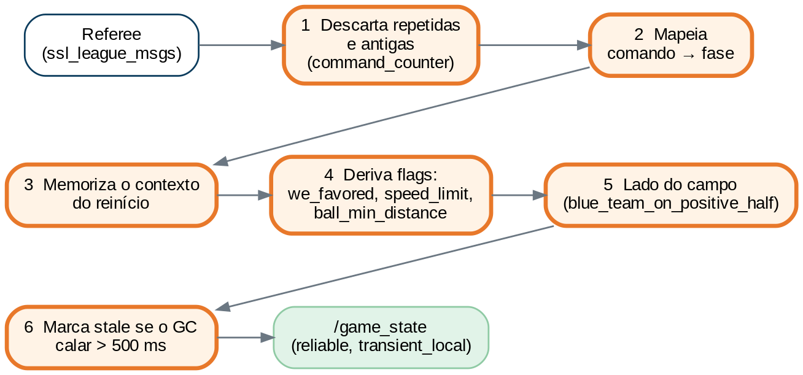
O GC publica o mesmo comando várias vezes por segundo. O nó só processa uma mensagem quando o command_counter avança; mensagens com contador igual ou menor são ignoradas. Isso impede que uma mensagem atrasada ou duplicada sobrescreva um estado mais novo.
O mapeamento está na Figura 15.2:
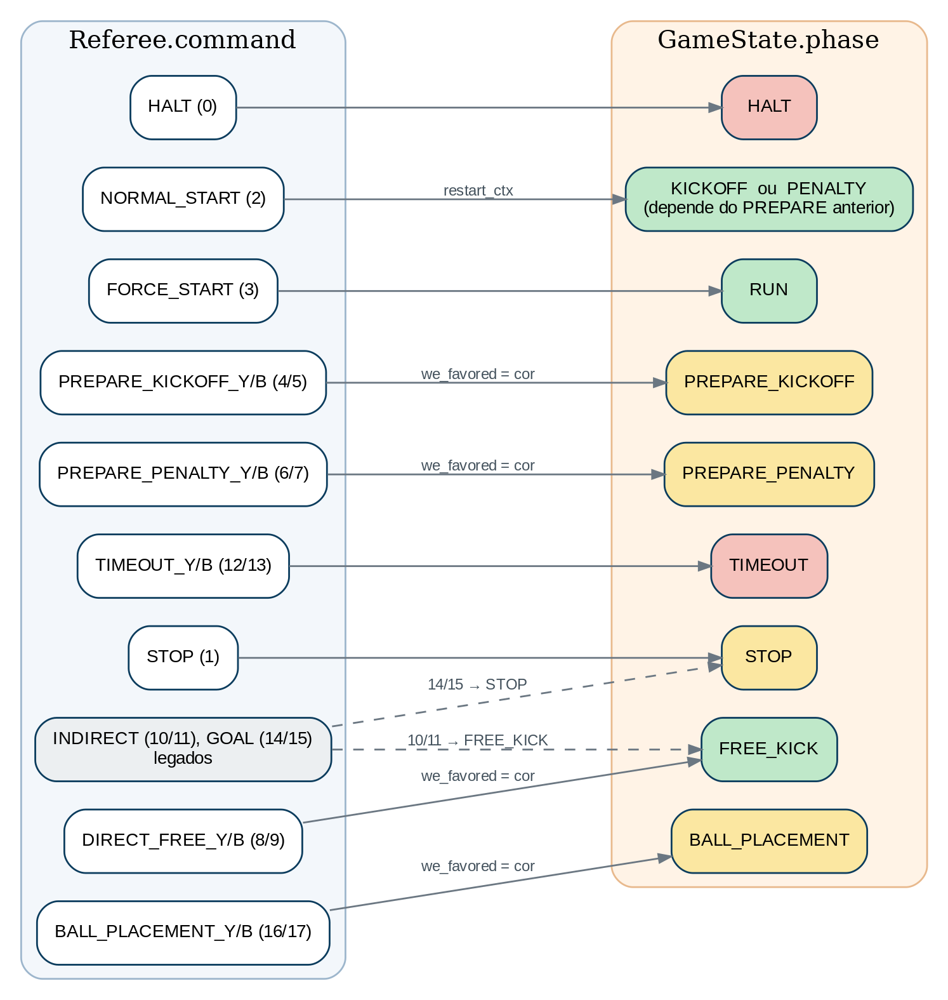
Os comandos legados (INDIRECT_FREE 10/11 e GOAL 14/15) são normalizados: os primeiros viram FREE_KICK; os segundos, STOP.
Este é o passo que resolve o NORMAL_START. O nó mantém uma pequena memória:
PREPARE_KICKOFF_*, guarda restart_ctx = KICKOFF e we_favored conforme a cor;PREPARE_PENALTY_*, guarda restart_ctx = PENALTY;NORMAL_START, a fase vira KICKOFF ou PENALTY conforme o contexto guardado, e we_favored é herdado;HALT ou STOP, o contexto não é apagado (o HALT é sempre seguido de STOP, e depois pode vir o NORMAL_START que o árbitro tinha preparado). O contexto só é substituído por um novo PREPARE_*, DIRECT_FREE ou FORCE_START.A mensagem do GC também traz o campo next_command, que informa o comando que virá depois da parada atual. Ele pode ser usado, no futuro, para pré-posicionar os robôs durante o STOP.
Com a fase e a cor, o nó calcula os campos derivados:
we_favored: o sufixo do comando (_YELLOW/_BLUE) comparado com a cor do nosso time.speed_limit_mps: 0 em HALT e TIMEOUT; 0,75 nos estados de parada (STOP, BALL_PLACEMENT, PREPARE_*); 1,5 nos estados de jogo (o limite do regulamento). A escolha de aplicar 0,75 também às preparações é conservadora e configurável.ball_min_distance_mm: 500 em STOP, BALL_PLACEMENT, PREPARE_* e, para quem não é o favorecido, em KICKOFF e FREE_KICK.can_place_ball, max_allowed_bots, our_goalkeeper_id: copiados de TeamInfo do nosso time.O nó lê blue_team_on_positive_half do Referee e, com a nossa cor, calcula our_goal_positive_x. É isso que permite ao time trocar de lado entre os tempos sem nenhuma outra mudança. (O que a estratégia faz com esse valor está no Capítulo 20.)
Um temporizador de 100 ms verifica há quanto tempo chegou a última mensagem. Se passou de 500 ms, o GameState é republicado com stale = true. Quem consome (a condição IsDataFresh, o SafetyGate) trata esse caso como falha de comunicação.
Os estados KICKOFF e FREE_KICK terminam quando a bola entra em jogo: ela se move pelo menos 0,05 m ou passam 10 s (regra 5.4). O nó precisa decidir quando emitir a fase RUN. Há duas fontes possíveis: (a) o próprio Game Controller, se ele mudar o comando ao detectar a bola em jogo; (b) o cálculo local, comparando a posição da bola (entrada ball_data) com a posição de partida do reinício.
Uma pergunta que o regulamento não responde
O regulamento descreve o estado Run, mas não diz qual valor do campo command o Game Controller publica durante ele (se o DIRECT_FREE permanece, se vira NORMAL_START, ou outro). Por isso o nó implementa a opção (b), parametrizável, e o plano de implementação (Capítulo 24) começa com a captura de um log real do GC (a ferramenta log2bag do ssl_ros_bridge converte logs da liga em rosbags) para confirmar o comportamento.
A tabela mostra o que o nó publica a cada comando recebido, num pênalti a favor do time amarelo, visto pelo nosso time (amarelo):
| Comando recebido | phase |
restart_ctx |
we_favored |
speed_limit |
|---|---|---|---|---|
HALT |
HALT |
— | — | 0 |
STOP |
STOP |
— | — | 0,75 |
PREPARE_PENALTY_YELLOW |
PREPARE_PENALTY |
PENALTY |
sim | 0,75 |
NORMAL_START |
PENALTY |
PENALTY |
sim | 1,5 |
| (bola move ≥ 0,05 m, ou 10 s) | STOP (o GC pára o jogo) ou RUN |
— | — | — |
Compare com o sistema atual: ali, o NORMAL_START apagava a informação de que era um pênalti nosso.
Parâmetros do nó: is_yellow_team (a cor), stale_timeout_ms (500), ball_moved_mm (50), kick_timeout_s (10), stop_speed_mps (0,75) e play_speed_mps (1,5). Por ser um nó pequeno e sem dependência de hardware, ele é a primeira peça a receber testes automatizados: uma tabela de comandos de entrada e fases de saída, mais replays de logs reais do GC (Capítulo 23).
Com o GameState em mãos, a árvore mestre pode ser reescrita de forma limpa: um ramo por fase do jogo, em ordem de prioridade, sem números mágicos e sem comandos "esquecidos". Este capítulo apresenta a estrutura, justifica as escolhas de nós e acompanha a árvore em ação ao longo de uma sequência de fases.
A raiz da MainTreeEL é um ReactiveFallback com doze filhos, mostrados na Figura 16.1. Cada ramo (exceto o último) é uma ReactiveSequence composta de uma guarda (a condição phase == ...) e de uma subárvore com o comportamento daquela fase.
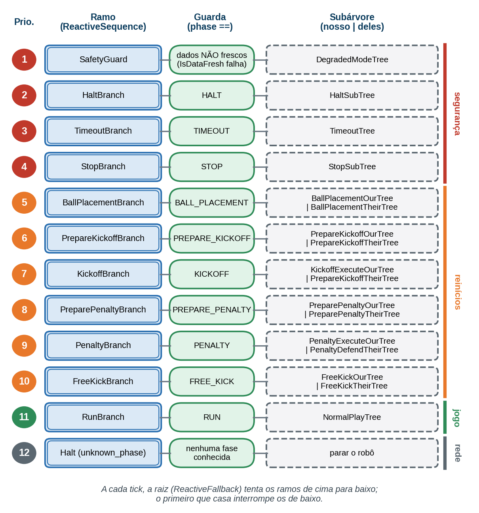
| # | Ramo | Guarda | Comportamento |
|---|---|---|---|
| 1 | SafetyGuard |
os dados não estão frescos (Inverter(IsDataFresh)) |
DegradedModeTree: parar |
| 2 | HaltBranch |
phase == HALT |
HaltSubTree |
| 3 | TimeoutBranch |
phase == TIMEOUT |
TimeoutTree |
| 4 | StopBranch |
phase == STOP |
StopSubTree |
| 5 | BallPlacementBranch |
phase == BALL_PLACEMENT |
nosso: BallPlacementOurTree; deles: BallPlacementTheirTree |
| 6 | PrepareKickoffBranch |
phase == PREPARE_KICKOFF |
nosso/deles |
| 7 | KickoffBranch |
phase == KICKOFF |
nosso: executa; deles: espera |
| 8 | PreparePenaltyBranch |
phase == PREPARE_PENALTY |
nosso/deles |
| 9 | PenaltyBranch |
phase == PENALTY |
nosso: executa; deles: defende |
| 10 | FreeKickBranch |
phase == FREE_KICK |
nosso/deles (inclui lateral, escanteio e tiro de meta) |
| 11 | RunBranch |
phase == RUN |
NormalPlayTree |
| 12 | Halt (unknown_phase) |
— | parar |
A ordem não é arbitrária. Os ramos 1 a 4 formam o bloco de segurança: se qualquer um se aplica, nada abaixo executa. Os ramos 5 a 10 tratam os reinícios, e o ramo 11 é o jogo propriamente dito. O ramo 12 é a rede de segurança: se nenhuma fase conhecida casa, o robô pára — o oposto do comportamento atual, em que o "default" é jogar.
Quase todo reinício tem dois lados: o time que bate e o time que defende. A árvore trata essa dicotomia com um padrão repetido em cada ramo de reinício:
<ReactiveSequence name="FreeKickBranch">
<CheckGameState phase="FREE_KICK"/>
<ReactiveFallback>
<ReactiveSequence>
<WeAreFavored/>
<SubTree ID="FreeKickOurTree" _autoremap="true"/>
</ReactiveSequence>
<SubTree ID="FreeKickTheirTree" _autoremap="true"/>
</ReactiveFallback>
</ReactiveSequence>
Lê-se: "se a fase é FREE_KICK: se somos o favorecido, execute a árvore de quem bate; senão, a de quem defende." A cor do time não aparece em nenhum ramo: ela já foi resolvida pelo referee_state_node em we_favored. Este é o fim da série de condições is_yellow ∧ cmd == 4 ∨ ¬is_yellow ∧ cmd == 5 do mestre atual.
Um detalhe elegante: se a subárvore "nossa" falhar (por exemplo, um posicionamento de bola que estoura o prazo), a ReactiveFallback cai para a subárvore "deles", que é um comportamento seguro de retirada.
ReactiveSequenceEste é o ponto de projeto mais sutil, e vale um exemplo. Suponha que a guarda do ramo KickoffBranch fosse uma Sequence comum. Durante um kick-off, o filho KickoffExecuteOurTree está em andamento (RUNNING). Quando o jogo passa para RUN, o ReactiveFallback raiz tenta primeiro os ramos de cima; chega ao KickoffBranch e o ticka. Mas a Sequence lembra que estava no segundo filho e retoma diretamente nele — sem reavaliar a guarda phase == KICKOFF, que agora seria falsa. O robô continuaria executando o kick-off por um tick a mais do que deveria.
Com uma ReactiveSequence, a guarda é reavaliada a cada tick; no instante em que a fase muda, ela falha, a subárvore é interrompida (halt) e o fallback passa ao ramo seguinte. É por isso que toda guarda de ramo é reativa, sem exceção.
O mestre atual já escapa disso, por outro motivo
No mestre atual, os ramos usam Sequence comum, mas funcionam porque o ReactiveFallback raiz reavalia os ramos de maior prioridade a cada tick (o HALT é sempre reavaliado). O que não é reavaliado é a guarda do próprio ramo em andamento. Para a arquitetura de jogo completo, com guardas por fase, a regra "guarda reativa" elimina essa classe de problemas.
A Figura 16.2 acompanha o ramo ativo da Master em uma sequência típica: o jogo corre, o árbitro manda parar, prepara um kick-off nosso, autoriza a jogada e o jogo volta a correr.
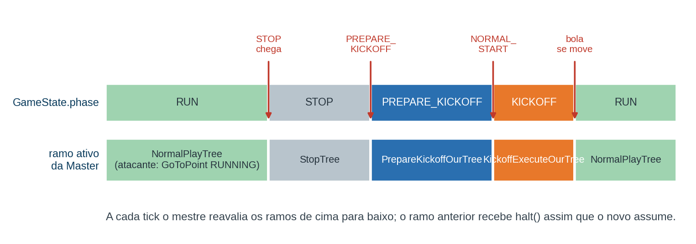
O que acontece, em cada transição:
RUN → STOP. O atacante está com um GoToPoint em andamento. No tick seguinte à mudança de fase, o ramo StopBranch (prioridade 4) casa antes do RunBranch (11): NormalPlayTree é interrompida, o GoToPoint recebe onHalted (que publica "fique onde está") e a StopTree assume, limitando a velocidade e afastando o robô da bola.STOP → PREPARE_KICKOFF. O ramo 6 casa. Como we_favored é verdadeiro, vale PrepareKickoffOurTree: o cobrador vai para o círculo central; os outros, para a própria metade.PREPARE_KICKOFF → KICKOFF (chegou o NORMAL_START). O referee_state_node lembrou que era kick-off nosso, então a fase é KICKOFF com we_favored. O cobrador executa KickOnce.KICKOFF → RUN (a bola se moveu). A fase vira RUN, o ramo 11 assume, e os papéis normais voltam.Em nenhum momento a árvore precisou "saber" o histórico: o GameState carrega todo o contexto necessário.
Dois cuidados acompanham o uso de ReactiveFallback na raiz:
Halt, por exemplo, reenvia o override de parada a cada tick — o que é necessário (o override expira em 200 ms) e inofensivo. Folhas com efeito colateral custoso não devem ficar em ramos reativos de alta prioridade.HaltBranch (só casa em HALT), mas seria um erro em um ramo cuja guarda fosse sempre verdadeira.Para checar o projeto, é útil "executar" mentalmente a árvore em trajetórias completas:
Trajetória 1 — partida começa e termina em parada. Sem GC ainda: IsDataFresh falha (o GameState é stale ou inexistente) → DegradedModeTree → robôs parados. Chega o primeiro STOP: ramo 4. PREPARE_KICKOFF nosso → cobrador no círculo. NORMAL_START → KICKOFF → o cobrador toca a bola. A bola se move → RUN → ataque. Chega um STOP com o atacante em movimento → StopTree. Chega um HALT → HaltTree: velocidade zero.
Trajetória 2 — perda de posse e troca de papéis. Em RUN, o adversário rouba a bola. O atribuidor publica novos papéis (epoch + 1): o atacante vira defensor. No tick seguinte, HasRole(attacker) falha no ramo do atacante, que é interrompido; HasRole(defender) casa e a DefenderTree assume com ShadowBall/MarkOpponent. O novo GoToPoint ou ShadowBall publica um alvo no mesmo tick.
Trajetória 3 — dado velho com uma ação em andamento. O atacante está com GoToPoint em andamento; a visão cai. IsDataFresh passa a falhar (a idade da pose supera 150 ms): o ramo 1 assume e o robô pára. Se a própria árvore estiver travada, o SafetyGate do controlador zera os comandos por watchdog em até 500 ms. Quando os dados voltam, o ramo 1 deixa de casar, e os ramos de baixo recomeçam (o onStart de cada folha recalcula o alvo).
As três trajetórias são sustentadas pela arquitetura; a primeira e a segunda dependem apenas de o GameState estar correto, e a terceira, do carimbo de tempo nos dados (Capítulo 20).
Os quatro primeiros ramos da Master Tree formam o bloco de segurança: dados confiáveis, HALT, TIMEOUT e STOP. Este capítulo descreve cada um, e também o SafetyGate, o mecanismo que garante a segurança mesmo quando a árvore falha.
Uma árvore reativa é uma boa defesa — mas depende de que o processo da árvore esteja vivo, ticando e correto. Se o strategy_node travar, entrar em crash ou ficar preso esperando algo, a árvore não consegue mandar o robô parar, e o controlador (como visto no Capítulo 13) continuaria seguindo a última rota. Por isso a segurança é construída em duas camadas independentes:
SafetyGuard e os ramos de HALT/STOP preemptam qualquer comportamento.GameState e um relógio local.O primeiro ramo da Master verifica se os dados ainda são confiáveis. A guarda é Inverter(IsDataFresh): o ramo casa quando os dados não estão frescos. A condição IsDataFresh compara três idades, mantidas na blackboard:
| Dado | Limite padrão | Fonte da idade |
|---|---|---|
Mensagem do Game Controller (gc_age_ms) |
500 ms | carimbo do GameState / flag stale |
Pose do próprio robô (pose_age_ms) |
150 ms | carimbo de GameData |
Bola (ball_age_ms) |
300 ms | carimbo de GameData |
(Os limites são propostas iniciais, a calibrar em simulação: a visão chega a cerca de 60 Hz, ou seja, um período de ~17 ms.) Se qualquer idade ultrapassar o limite, IsDataFresh devolve FAILURE, o Inverter o transforma em SUCCESS, e o ramo executa a DegradedModeTree, que contém apenas a ação Halt com o motivo stale_data.
<BehaviorTree ID="DegradedModeTree">
<Halt reason="stale_data"/>
</BehaviorTree>
Quando os dados voltam, o ramo deixa de casar e os de baixo recomeçam do onStart: cada folha recalcula o alvo com os dados novos. Nenhum estado velho é "retomado".
Os ramos de HALT e TIMEOUT são os mais simples possíveis: uma guarda de fase e a ação Halt.
HaltSubTree (já existente): Halt com o motivo gc_halt. A cada tick, a ação publica MODE_HALT ao controlador, que zera as velocidades. O regulamento dá 2 s de tolerância para frear; a meta do projeto é parar em menos de 300 ms.TimeoutTree (nova): Halt com o motivo timeout. Durante o timeout, as equipes podem mexer no hardware; o software só precisa manter o robô quieto.O fato de serem triviais é proposital: o caminho do HALT precisa ser o mais curto e o menos propenso a falhas de todo o sistema.
O STOP é o estado mais frequente em uma partida e o que exige mais cuidado. Pelo regulamento, em STOP o robô deve: andar a menos de 0,75 m/s, ficar a pelo menos 0,5 m da bola, não tocar a bola e, ainda, ficar a 0,2 m da área de defesa adversária (para evitar uma falta de proximidade). A StopSubTree proposta (Figura 17.1) implementa isso:
<BehaviorTree ID="StopSubTree">
<ReactiveSequence name="StopLogic">
<SetMotionLimit limit_mps="0.75"/>
<ReactiveFallback name="StopAction">
<ReactiveSequence name="RetreatIfClose">
<IsBallClose robot_id="{robot_id}" distance_threshold="650.0"/>
<ComputeLegalSlot slot="retreat" index="0"
slot_x="{slot_x}" slot_y="{slot_y}" slot_w="{slot_w}"/>
<GoToPoint robot_id="{robot_id}" x="{slot_x}" y="{slot_y}"
face_x="{ball_x}" face_y="{ball_y}" tolerance="80.0"/>
</ReactiveSequence>
<HoldPosition robot_id="{robot_id}"/>
</ReactiveFallback>
</ReactiveSequence>
</BehaviorTree>
Lendo a árvore:
SetMotionLimit 0.75 informa ao SafetyGate o teto de velocidade desta fase (redundante com o GameState, mas explícito).RetreatIfClose: se a bola está a menos de 650 mm (os 500 mm do regulamento mais uma margem de 150 mm), calcula um ponto legal de recuo (ComputeLegalSlot com o slot retreat: um ponto sobre a reta bola→robô, a 650 mm da bola, dentro do campo e fora das áreas) e vai até ele olhando para a bola.HoldPosition: se já está longe da bola, fica onde está — publica um objetivo na própria pose.O resultado é um robô que se afasta da bola só quando necessário e, o resto do tempo, está parado; e que nunca devolve FAILURE por falta de uma porta.
E o goleiro?
O goleiro usa a mesma StopSubTree. O ponto de recuo, para ele, é limitado à própria área (como em qualquer GoToPoint do goleiro): se a bola está perto da meta, o goleiro recua para dentro da área mantendo, quando possível, 0,5 m da bola.
O SafetyGate é um estágio no final do movement_calculation_node, depois de todo o cálculo de velocidade (seguimento de rota, repulsão, clamp de área) e antes de publicar em /robot_commands (Figura 17.2).
Ele aplica quatro regras, todas independentes da árvore:
GameState indica HALT (ou TIMEOUT), o comando é zero, mesmo que um override ou uma rota digam o contrário.speed_limit_mps do GameState: 0,75 m/s nos estados de parada, 1,5 m/s no jogo. É este mecanismo que supre a lacuna do limite de STOP.MODE_HALT no status. Ao contrário do comportamento atual (continuar na última rota), uma árvore silenciosa pára o robô.kick_speed é limitado a 3,0 m/s para qualquer origem, inclusive folhas legadas que esqueçam de limitar.As regras 1 e 3 usam apenas informações locais ao controlador (o último GameState recebido e um relógio), de modo que funcionam mesmo se o strategy_node não existir mais.
Coerência com o override de 200 ms
O override de parada (MODE_HALT) já expira em 200 ms. Com o watchdog de 500 ms, a ordem é: se a árvore continua renovando o override, o robô fica parado; se pára de renová-lo, o override expira, o controlador volta a seguir a rota por até 300 ms e então o watchdog zera tudo. Para eliminar essa janela, o plano de implementação propõe fazer o MODE_HALT não expirar por TTL, mas apenas ser liberado explicitamente (ou pelo watchdog).
| Folha | Tipo | Resumo |
|---|---|---|
IsDataFresh |
condição | falha se alguma idade (GC, pose, bola) ultrapassa o limite |
CheckGameState |
condição | verdadeira se a fase da blackboard é a pedida |
SetMotionLimit |
ação síncrona | informa o teto de velocidade ao SafetyGate |
HoldPosition |
ação assíncrona | publica a pose atual como objetivo; fica em RUNNING |
ComputeLegalSlot |
ação síncrona | calcula um ponto legal para um "slot" nomeado |
Seus contratos completos estão no Capítulo 21.
Os reinícios são onde as regras mais pesam e onde uma pequena imprecisão vira falta. Este capítulo detalha as subárvores dos ramos 5 a 10 da Master: para cada situação, os dois papéis (quem bate e quem defende), as posições exigidas e como a árvore as obtém.
O problema central dos reinícios atuais é o das coordenadas fixas (Capítulo 13). A solução proposta é uma folha que calcula a posição de cada robô a partir da geometria do campo, do lado e da bola: ComputeLegalSlot.
A folha recebe o nome de um slot (uma "vaga" tática) e devolve a posição (slot_x, slot_y) e a orientação (slot_w) para ele. Todos os cálculos usam own_goal_x e side_sign da blackboard, de modo que o mesmo slot vale para os dois lados do campo (Figura 18.1).
| Slot | Onde fica | Regra que cumpre |
|---|---|---|
kickoff_kicker |
dentro do círculo central, atrás da bola, voltado ao gol adversário | só o cobrador pode estar no círculo |
kickoff_def |
na própria metade, fora do círculo (≥ 500 mm do centro, além da margem), alinhado conforme o index do robô |
todos na própria metade, fora do círculo |
penalty_kicker |
atrás da bola, na linha bola–gol adversário | atacante se aproxima sem tocar |
penalty_behind |
≥ 1 m atrás da bola (com margem), fora da área de defesa | demais robôs afastados |
freekick_support |
posição de apoio longe da bola e ≥ 0,2 m da área adversária | proximidade da área |
wall |
linha de defesa entre a bola e o gol, ≥ 0,5 m da bola | distância no free kick adversário |
retreat |
ponto a 650 mm da bola, na reta bola→robô | distância no STOP |
Todos os slots passam por um filtro final: se o ponto calculado cai dentro de uma área proibida (a área de defesa para quem não é goleiro, a adversária para todos), é deslocado para o ponto válido mais próximo, com uma margem configurável (slot_margin_mm, padrão 150).
PREPARE_KICKOFF)As duas versões da preparação são parecidas: o goleiro fica na meta; os outros se posicionam na própria metade, fora do círculo central. A diferença é que, no nosso kick-off, um robô — o cobrador, indicado pelo atribuidor de papéis (kicker_id) — fica dentro do círculo, atrás da bola.
A árvore é um ReactiveFallback de três ramos por papel (Figura 18.2): goleiro (GoalkeeperTree), cobrador (ComputeLegalSlot com kickoff_kicker e GoToPoint olhando para a bola) e o resto (kickoff_def). A versão PrepareKickoffTheirTree omite o cobrador. Ela também é usada durante o kick-off do adversário (fase KICKOFF sem we_favored): todos continuam na própria metade, fora do círculo, sem tocar a bola.
KICKOFF)Quando o NORMAL_START chega, a fase vira KICKOFF e, se somos o favorecido, vale KickoffExecuteOurTree: o goleiro continua; o cobrador executa a subárvore RestartKickerTree; os outros permanecem onde estão (HoldPosition) até a bola entrar em jogo, para não violar a regra de que só o cobrador toca na bola.
Os três reinícios em que o nosso time bate — kick-off, pênalti e free kick — compartilham a mesma sequência de cobrança, extraída como uma subárvore reutilizável, RestartKickerTree (Figura 18.3):
UpdateBallPosition calcula o ponto de pré-chute (400 mm atrás da bola, na reta bola→alvo), para o alvo configurado nas portas target_x/target_y.GoToPoint leva o robô até lá, olhando para o alvo, com ball_contact_threshold_mm=150 (se a bola for tocada no caminho, falha e recomeça).KickOnce (nova) executa o chute: pede MODE_KICK com a velocidade limitada a 3 m/s, devolve SUCCESS quando a bola se movimentou pelo menos 50 mm e FAILURE se passar o prazo de 10 s do regulamento.A diferença em relação a KickBall é que KickOnce confirma o resultado (a bola se moveu), não só a execução do chute, e carrega o prazo do regulamento.
O pênalti é o reinício com mais restrições e, por isso, tem quatro subárvores.
PreparePenaltyOurTree: o goleiro na meta; o cobrador no slot penalty_kicker (atrás da bola, sem tocá-la, olhando para o gol); os demais no slot penalty_behind (≥ 1 m atrás da bola).PenaltyExecuteOurTree (phase == PENALTY, we_favored): o cobrador executa RestartKickerTree apontando para o gol adversário; os demais permanecem parados. A bola só pode se mover em direção ao gol adversário, o que a cobrança direta ao gol respeita.PreparePenaltyTheirTree: o goleiro executa PenaltyKeeperLine (vai à linha de gol e a toca, 90 mm — o raio do robô — para dentro do campo); os demais vão ao slot penalty_behind.PenaltyDefendTheirTree (Figura 18.4): enquanto a bola não entrou em jogo, o goleiro mantém a linha; assim que WaitBallInPlay indica que a bola se moveu (ou passaram 10 s), o goleiro volta ao comportamento normal (GoalkeeperTree) — o regulamento libera o goleiro nesse momento. Os outros robôs seguem parados, ≥ 1 m atrás da bola.Uma ligação importante com o goleiro
No pênalti defensivo, o goleiro não deve sair da linha para buscar a bola mesmo que ela entre "na área" — algo que o goleiro atual (Capítulo 10) faria. Por isso, as folhas PenaltyKeeperLine e WaitBallInPlay controlam o goleiro de modo explícito durante essa fase.
Falta, lateral, escanteio e tiro de meta chegam todos como DIRECT_FREE, e a bola já está na posição designada. A árvore as trata uniformemente (Figura 18.5); ela substitui free_kick.xml, corner_kick.xml, throw_in.xml e kick_in.xml, que dependiam de flags nunca escritas.
RestartKickerTree, com o alvo escolhido conforme a situação (por padrão, o gol adversário).freekick_support, a ≥ 0,2 m da área adversária.No free kick do adversário (FreeKickTheirTree), todos os robôs de linha vão ao slot wall (≥ 0,5 m da bola), formando uma barreira entre a bola e o gol, e o goleiro defende normalmente. A distância de 0,5 m deve ser mantida até a bola entrar em jogo; a folha WaitBallInPlay sinaliza esse momento.
O posicionamento da bola é uma tarefa de duas faces.
Quando o outro time posiciona a bola, nossos robôs só precisam não atrapalhar: ficar a ≥ 0,5 m do segmento entre a bola e o alvo (o "estádio" da Figura 2.3), com velocidade abaixo de 0,75 m/s. A BallPlacementTheirTree (Figura 18.6) usa AvoidPlacementCorridor: se o robô está dentro do corredor, move-se para fora; senão, fica parado.
Quando é a nossa vez de posicionar, BallPlacementOurTree (Figura 18.7) designa um robô (o kicker) para a tarefa: ComputeLegalSlot/ComputePlacementApproach calcula o ponto de captura atrás da bola (do lado oposto ao alvo), GoToPoint leva o robô até lá, e PlaceBall empurra a bola até a posição designada em até 30 s, devolvendo SUCCESS quando a bola está a ≤ 0,15 m do alvo e parada, e FAILURE no estouro do prazo (e, então, o GC passa o posicionamento ao adversário). Os outros robôs obedecem à StopSubTree.
Opção de escopo
Na SSL-EL, um time pode optar por não posicionar a bola pelo resto do jogo, avisando o árbitro. Implementar o posicionamento próprio é a parte mais trabalhosa e de menor retorno imediato. A recomendação é tratá-lo como pós-MVP e, no MVP, combinar com o árbitro o opt-out, mantendo apenas o comportamento de não interferir (BallPlacementTheirTree) para as duas situações.
Tanto KickoffExecute, PenaltyDefend quanto FreeKick precisam saber quando a bola entrou em jogo. A folha WaitBallInPlay encapsula a regra do regulamento (§5.4): verdadeira quando a bola se moveu pelo menos 50 mm desde o início do reinício ou passaram 10 s. Ela usa a posição de referência registrada quando a fase mudou. Como a fase RUN é emitida pelo referee_state_node com a mesma regra, WaitBallInPlay é útil para as folhas que precisam reagir dentro da fase (como o goleiro do pênalti).
Em RUN (que começa com um FORCE_START ou quando a bola entra em jogo depois de um reinício), a partida é jogada pelos três papéis. Este capítulo descreve a subárvore NormalPlayTree, as adaptações necessárias em cada papel e como o time se degrada quando perde robôs.
A árvore (Figura 19.1) é um ReactiveFallback com um ramo por papel:
<BehaviorTree ID="NormalPlayTree">
<ReactiveFallback name="Roles">
<ReactiveSequence name="GoalkeeperRole">
<HasRole role="goalkeeper"/>
<SubTree ID="GoalkeeperTree" _autoremap="true"/>
</ReactiveSequence>
<ReactiveSequence name="AttackerRole">
<HasRole role="attacker"/>
<SubTree ID="AttackerTree" _autoremap="true"/>
</ReactiveSequence>
<ReactiveSequence name="DefenderRole">
<HasRole role="defender"/>
<SubTree ID="DefenderTree" _autoremap="true"/>
</ReactiveSequence>
<Halt reason="idle"/>
</ReactiveFallback>
</BehaviorTree>
Duas mudanças em relação ao mestre atual merecem atenção. Primeiro, a identificação do papel passa a ser feita por uma única condição, HasRole, que substitui as três verificações diferentes de hoje (IsRobotId 0, IsMyRole attacker, IsMyRole defender) e deixa de depender de um identificador fixo. Segundo, o último filho — Halt idle — significa que um robô sem papel (por exemplo, um robô extra, ou quando o atribuidor ainda não se manifestou) fica parado, em vez de ir fazer algo.
A lógica do atacante (Capítulo 9) é reaproveitada integralmente, extraída para a subárvore AttackerTree. As mudanças são pequenas:
PrecisionKick. Todo chute passa por KickBall (ou KickOnce), ambos limitados a 3 m/s.ball_in_enemy_half consciente do lado. UpdateBallPosition deixa de usar ball_x > 0 e passa a usar o side_sign.UpdateBallPosition e CalculateInterception devolvem FAILURE com log (hoje devolvem RUNNING), para que o problema apareça.A DefenderTree (Capítulo 10) também é mantida, com três ajustes:
HasRole defender;ShadowBall e MarkOpponent ganham um onHalted que publica "fique onde está" (ou são encapsuladas em uma ação assíncrona), para que a preempção realmente pare o robô;A folha Goalkeeper recebe as mudanças mais substanciais, porque o regulamento coloca regras específicas sobre ele:
TeamInfo.goalkeeper, também em GameState.our_goalkeeper_id), e não mais o robô 0. Se esse identificador não corresponde a nenhum robô ativo, não há goleiro, e o defensor não pode ocupar a área (regra: só o goleiro pode estar na própria área).mode (normal, penalty_def, hold). penalty_def mantém a linha de gol (Capítulo 18).BallHeldTimer detecta a bola parada dentro da área por mais de 8 s (margem de 2 s sobre os 10 s do regulamento); ao disparar, o goleiro passa a priorizar o afastamento (o estado 1 do Capítulo 10, com maior urgência).O número de robôs em campo muda durante a partida: cartões amarelos e vermelhos reduzem o número permitido (a equipe tem 10 s para retirar o excedente), robôs podem ser retirados por defeito, e a visão pode "perder" um robô. O sistema precisa continuar coerente com 3, 2 ou 1 robôs (Figura 19.2).
| Robôs ativos | Papéis | Observação |
|---|---|---|
| 3 | goleiro, atacante, defensor | operação normal |
| 2 | goleiro + atacante | o atacante recua (assume uma postura defensiva) quando a bola está no nosso campo |
| 1 | goleiro | permanece na linha de gol |
| 2 (sem goleiro) | atacante + defensor | o defensor não entra na área; o time joga "sem goleiro" |
A lista de robôs ativos (active_ids) é calculada pelo atribuidor de papéis a partir de três fontes: o que a visão vê (com a idade dos dados), o max_allowed_bots do árbitro e, no futuro, as flags de erro da telemetria dos robôs. Quando o max_allowed_bots fica abaixo do número de robôs ativos, o atribuidor indica qual robô deve ser retirado e o mantém parado; a retirada física é feita por um humano da equipe (um dos poucos momentos em que o regulamento permite).
Quando um robô é substituído
A substituição de robôs, em si (o robot handler entra no campo, retira ou coloca robôs) está fora do software. O que o software faz é reagir: o atribuidor atualiza active_ids e a árvore vê o papel mudar no tick seguinte.
Este capítulo fecha o desenho da Parte IV tratando da "cola" entre os componentes: a mensagem de papéis ampliada, o novo esquema da blackboard, a validação da idade dos dados, o tratamento do lado do campo e um exemplo completo de ponta a ponta.
A mensagem RoleAssignment, hoje com attacker_id e defender_id, passa a trazer o necessário para uma partida inteira:
| Campo | Significado |
|---|---|
goalkeeper_id |
identificador do goleiro (do TeamInfo.goalkeeper do GC, ou parâmetro; ausente se o robô não está ativo) |
attacker_id |
atacante em jogo corrido |
defender_id |
defensor em jogo corrido |
kicker_id |
quem bate o reinício em curso (kick-off, pênalti, free kick, ball placement) |
epoch |
inteiro crescente: aumenta a cada mudança de papéis |
active_ids[] |
robôs considerados ativos |
Para reinícios, o role_assigner_node escolhe o kicker_id pelo menor custo até o ponto do reinício (a bola, ou o ponto designado) e o trava enquanto a fase for de reinício (PREPARE_*, KICKOFF, PENALTY, FREE_KICK, BALL_PLACEMENT). A troca só é permitida quando a fase volta a RUN ou quando o robô travado deixa de estar ativo. Isso corrige a instabilidade atual, em que o atribuidor poderia trocar o atacante no meio da preparação do kick-off.
O campo epoch permite que as árvores detectem papéis velhos: se a época que a árvore conhece é menor que a da mensagem, houve troca. Na prática, a troca de papéis já é refletida pela guarda HasRole (que é reavaliada a cada tick); a epoch serve para diagnóstico, registro e para folhas que precisem reiniciar estado interno quando o papel muda.
As histereses atuais (custo 2,5; tempo 2 s) são mantidas, com uma exceção: são desligadas durante os reinícios (o cobrador é travado, como visto). A exclusividade — cada identificador tem exatamente um papel por época — é garantida pelo próprio atribuidor, que publica um conjunto coerente por mensagem.
A blackboard atual é escrita por callbacks em outra thread, o que dá valores relacionados lidos em instantes diferentes (Capítulo 5). A proposta é fazer a atualização em um único ponto, na thread de tick, no início de cada tick: uma função refresh() copia de buffers (um por fonte de dados, preenchidos pelas callbacks sob mutex) para a blackboard, de uma só vez. Assim, durante um tick, todas as chaves são consistentes entre si.
| Chave | Tipo | Quem escreve | Quem lê | Validade |
|---|---|---|---|---|
phase, restart_ctx, we_favored |
enum, enum, bool | refresh() (de /game_state) |
CheckGameState, WeAreFavored |
gc_age_ms |
designated, has_designated |
Pose2D, bool |
idem | árvores de reinício | idem |
speed_limit, can_place_ball |
double, bool | idem | SetMotionLimit, ball placement |
idem |
own_goal_x, opp_goal_x, opp_goal_y, side_sign |
double, double, double, int | idem + geometria | quase todas | por geometria |
field_*, penalty_area_*, goal_width, center_circle_radius |
double (mm) | geometria | folhas de posição | por geometria |
role, kicker_id, role_epoch, active_ids |
enum, uint, uint, vetor | refresh() (de /role_assignment) |
HasRole |
por época |
robot_pose |
Pose2D |
refresh() (de /game_data) |
movimento | pose_age_ms |
ball, ball_vel |
Pose2D, Vector2D |
refresh() (de /game_data e do Kalman) |
defesa, ataque | ball_age_ms |
gc_age_ms, pose_age_ms, ball_age_ms |
double | refresh() |
IsDataFresh |
— |
As chaves temporárias de subárvore (pkx, pky, int_*, slot_x…) continuam com o escopo da subárvore e não são remapeadas com _autoremap, para não poluir a raiz.
snake_case, com sufixo de unidade quando houver ambiguidade (_ms, _mm).RobotGoal.ball como Pose2D, robot_pose) a pares de chaves soltas (ball_x, ball_y), para evitar leituras parciais.A idade é a base da supervisão de segurança. Ela depende de carimbos de tempo que hoje não existem:
GameData ganha um std_msgs/Header e, para cada robô, o instante da última detecção;game_observer_node passa a expirar robôs não vistos por alguns quadros (hoje, ficam para sempre) e a publicar mesmo sem bola (hoje, não publica);refresh() calcula as idades: pose_age_ms = agora − stamp da pose, ball_age_ms, e gc_age_ms (a partir de GameState.stale e do seu carimbo).A condição IsDataFresh apenas compara essas idades com os limites; a vigilância "pesada" (watchdog) fica no SafetyGate.
O referee_state_node calcula our_goal_positive_x a partir de blue_team_on_positive_half e da nossa cor. O refresh() traduz isso em duas chaves:
own_goal_x = +L/2 se o nosso gol está em x positivo, −L/2 caso contrário;side_sign = +1 se defendemos o gol de x negativo (nossa metade é x < 0), −1 caso contrário.Com isso, qualquer posição "para o nosso lado do campo" é escrita como side_sign × (valor positivo), e ComputeLegalSlot faz esse espelhamento internamente. Nenhum XML precisa conhecer o lado. Na troca de tempo, blue_team_on_positive_half inverte, side_sign muda de sinal, e todas as posições calculadas a partir daí são automaticamente as do lado novo.
invert_sides fica só para o simulador
O parâmetro invert_sides do observer espelha as coordenadas para o simulador Ra. Ele não deve influenciar a cor do time nem o lado lógico de defesa. Na proposta, is_yellow volta a significar apenas a cor real, e o lado lógico vem do árbitro.
Resumindo as regras de acesso aos dados:
refresh() lê todos os buffers e atualiza a blackboard.O exemplo abaixo percorre uma informação desde a rede até a ação, e a sua interrupção. Os nós CheckGameState e ComputeLegalSlot ainda não existem (são os nós novos); GoToPoint é código existente.
Referee { command = STOP, command_counter = 57 }.referee_state_node aceita a mensagem (o contador avançou), mapeia STOP → phase = STOP, calcula speed_limit = 0,75 e publica o GameState.refresh() copia phase = "STOP" e speed_limit = 0.75 para a blackboard.CheckGameState phase="STOP" lê a chave e devolve SUCCESS; o ramo StopBranch torna-se ativo.StopSubTree calcula slot_x, slot_y com ComputeLegalSlot e passa ao GoToPoint: x="{slot_x}" y="{slot_y}".<SubTree ID="StopSubTree" _autoremap="true"/> torna ball_x, ball_y, robot_id visíveis dentro dela.FORCE_START: a fase vira RUN. No tick seguinte, o ReactiveFallback raiz tenta primeiro os ramos de cima; CheckGameState STOP falha, o ramo de STOP é interrompido, e GoToPoint::onHalted() publica "fique onde está".phase STOP → RUN (cmd_counter=58).Este capítulo é a especificação dos componentes novos e das alterações em componentes existentes, em nível suficiente para serem implementados sem ambiguidade. Convenções: posições em mm e ângulos em rad; toda porta de entrada com valor sensato tem padrão (para evitar o erro do Capítulo 5); toda ação assíncrona tem onHalted idempotente; toda folha que depende de dados devolve FAILURE com log quando eles faltam.
CheckGameState — verdadeira se a fase da blackboard é a pedida.
- Porta phase (string, obrigatória): HALT, TIMEOUT, STOP, BALL_PLACEMENT, PREPARE_KICKOFF, KICKOFF, PREPARE_PENALTY, PENALTY, FREE_KICK ou RUN.
- Lê phase da blackboard raiz; se a chave não existe, devolve FAILURE com erro.
WeAreFavored — verdadeira se we_favored é verdadeiro. Sem portas.
IsDataFresh — verdadeira se todas as idades estão dentro dos limites.
- Portas: max_gc_ms (500), max_pose_ms (150), max_ball_ms (300), todas double.
- Lê gc_age_ms, pose_age_ms, ball_age_ms; registra qual dado venceu.
HasRole — verdadeira se o papel do robô na blackboard é o pedido.
- Porta role (string): goalkeeper, attacker, defender ou kicker.
- Substitui IsMyRole e IsRobotId.
BallHeldTimer — falha quando a bola está parada dentro da área por mais de max_s.
- Portas: max_s (double, 8), area (string, "own_defense").
- Usa ball, ball_vel e a geometria; serve de gatilho para o goleiro afastar a bola.
WaitBallInPlay — verdadeira quando a bola se moveu moved_mm (50) desde o início do reinício ou passaram timeout_s (10).
ComputeLegalSlot — calcula a posição legal de um slot (Capítulo 18).
- Entradas: slot (string), index (uint32, 0).
- Saídas: slot_x, slot_y, slot_w (double).
- Parâmetro ROS: slot_margin_mm (150).
- Usa own_goal_x, side_sign, ball, center_circle_radius, penalty_area_*, designated, robot_pose.
ComputePlacementApproach — para o ball placement: calcula o ponto de captura (pickup_x/y), o de entrega (drop_x/y) e a orientação (approach_w) a partir da posição designada. Parâmetro: pickup_offset_mm (120).
SetMotionLimit — informa o teto de velocidade ao SafetyGate: porta limit_mps (double, 1,5), parâmetro absolute_max_mps (1,5). Publica em /robot_motion_limit.
HoldPosition — mantém o robô onde está: publica RobotGoal na pose atual (straight_line, disable_arrival_latch = true) e fica em RUNNING. onHalted não publica nada.
PlaceBall — empurra a bola até a posição designada.
- Portas: drop_x, drop_y (double), timeout_s (30), tolerance_mm (150).
- RUNNING; SUCCESS quando a bola está a ≤ tolerance_mm do alvo, parada, e o robô a mais de 50 mm; FAILURE no estouro do prazo. onHalted solta o override e recua 100 mm.
PenaltyKeeperLine — leva o goleiro à linha de gol (a 90 mm dela, para dentro) e o mantém. Porta side (string, "defend"); parâmetro line_offset_mm (90). RUNNING até a bola entrar em jogo.
KickOnce — chuta uma vez e confirma o resultado.
- Portas: robot_id (uint32), target_x, target_y (double), kick_speed (2,5; limitado a 3,0), timeout_s (10), ball_moved_mm (50).
- Envia MODE_KICK; SUCCESS quando a bola se moveu ball_moved_mm; FAILURE no estouro do prazo. onHalted envia MODE_NONE.
AvoidPlacementCorridor — sai do corredor do posicionamento adversário: porta margin_mm (550). RUNNING enquanto precisa mover-se, SUCCESS quando já está fora.
| Alvo | O que muda | Por quê |
|---|---|---|
GoToPoint |
onHalted publica a pose atual; robot_id diferente da instância devolve FAILURE com erro (ou a porta é removida); robô ausente por mais de 500 ms → FAILURE; nova porta opcional max_speed |
a preempção precisa parar o robô; erros de configuração não podem ser silenciosos |
KeepDistance |
robot_x/robot_y com padrão {robot_x}/{robot_y}; ou torná-la uma ação que publica o alvo de afastamento |
corrige a falha de portas do STOP |
PrecisionKick |
aposentar (usar KickOnce) ou limitar a 3,0 m/s e passar pelo override |
limite de chute; escritor único |
Goalkeeper |
portas mode e max_hold_s; identidade via HasRole; FAILURE sem dados |
regras de pênalti e de 10 s |
UpdateBallPosition |
ball_in_enemy_half usa side_sign; FAILURE sem dados; marcadores opcionais |
independência de lado |
movement_calculation_node |
SafetyGate: assina /game_state e /robot_motion_limit; watchdog de 500 ms; clamp de chute; MODE_HALT sem TTL |
segurança independente da árvore |
strategy_node |
assina /game_state (remove gc_callback); refresh() por tick; remove papéis iniciais fixos; registra os novos nós; só carrega XMLs de produção |
centralizar estado e consistência |
role_assigner_node |
mensagem ampliada; cobrador travado; goleiro do GC; robôs ativos | papéis conscientes da fase |
game_observer_node / GameData |
carimbo de tempo; expiração de robôs; publica sem bola; fusão com confiança | idade dos dados |
| Item | Especificação |
|---|---|
| Assina | …/referee_messages (ssl_league_msgs/Referee) e, para detectar a bola em jogo, ball_data |
| Publica | /game_state (oxebots_interfaces/GameState, confiável, transient_local) |
| Parâmetros | is_yellow_team, stale_timeout_ms (500), ball_moved_mm (50), kick_timeout_s (10), stop_speed_mps (0,75), play_speed_mps (1,5) |
| Lógica | descarte por command_counter; mapeamento comando→fase; contexto de reinício; flags; lado; marcação de stale (Capítulo 15) |
std_msgs/Header header
uint32 command_counter
uint8 command
uint8 phase # HALT TIMEOUT STOP BALL_PLACEMENT PREPARE_KICKOFF
# KICKOFF PREPARE_PENALTY PENALTY FREE_KICK RUN
uint8 restart_ctx # NONE KICKOFF PENALTY FREE_KICK FORCE
bool we_favored
uint8 stage
bool our_goal_positive_x
geometry_msgs/Point32 designated_position # mm
bool has_designated
float32 speed_limit_mps
float32 ball_min_distance_mm
bool can_place_ball
uint8 max_allowed_bots
uint32 our_goalkeeper_id
bool stale
Como criar uma nova folha, como validar o comportamento do time sem robôs e como dividir o trabalho nas quatro semanas até uma versão jogável.
Este capítulo guia a criação de uma folha completa, do zero ao XML e ao teste, usando como exemplo a ação HoldPosition do Capítulo 17 — simples, mas representativa: lê dados do mundo, publica um objetivo e precisa de um onHalted correto. O padrão segue o das folhas existentes, como GoalLineDefendNode.
Antes de começar
Compilar é com você: ./build.sh no devcontainer. Os trechos abaixo são exemplos esquemáticos escritos com a API real da BehaviorTree.CPP 4.x e o padrão do projeto, mas ainda não estão no repositório.
A confusão mais comum de quem chega é entre dois conceitos que têm "nó" no nome:
rclcpp::Node): um processo que publica e assina tópicos — strategy_node, role_assigner_node…BT::TreeNode): um objeto C++ dentro da árvore — GoToPoint, Sequence…Um nó de BT não é um processo. No projeto, as folhas que precisam falar com o ROS 2 recebem o rclcpp::Node do strategy_node e criam seus publicadores e assinantes nele (Figura 22.1).
Para HoldPosition: "Ler a pose atual do robô em /game_data, publicar um RobotGoal nessa pose e ficar em RUNNING; ao ser interrompida, não fazer nada."
Perguntas a responder antes de escrever código:
| Pergunta | Resposta para HoldPosition |
|---|---|
| Que dado preciso? | a pose do meu robô (/game_data) |
| Que comando produzo? | um RobotGoal (/robot_goal) |
| É síncrona ou assíncrona? | assíncrona (fica em RUNNING) |
| O que faço se faltarem dados? | FAILURE, com log |
| O que faço ao ser interrompida? | nada (idempotente) |
include/oxebots_strategy/hold_position_node.hpp:
#pragma once
#include <mutex>
#include "behaviortree_cpp/action_node.h"
#include "rclcpp/rclcpp.hpp"
#include "oxebots_interfaces/msg/game_data.hpp"
#include "oxebots_interfaces/msg/robot_goal.hpp"
namespace oxebots_strategy
{
class HoldPositionNode : public BT::StatefulActionNode
{
public:
HoldPositionNode(const std::string& name, const BT::NodeConfig& config,
rclcpp::Node::SharedPtr node);
static BT::PortsList providedPorts();
BT::NodeStatus onStart() override;
BT::NodeStatus onRunning() override;
void onHalted() override;
private:
void gameDataCallback(const oxebots_interfaces::msg::GameData::SharedPtr msg);
bool publishHere();
rclcpp::Node::SharedPtr node_;
rclcpp::Publisher<oxebots_interfaces::msg::RobotGoal>::SharedPtr goal_pub_;
rclcpp::Subscription<oxebots_interfaces::msg::GameData>::SharedPtr game_data_sub_;
std::mutex mutex_; // callback e tick rodam em threads diferentes
oxebots_interfaces::msg::GameData::SharedPtr last_data_;
unsigned int robot_id_{0};
};
} // namespace oxebots_strategy
src/hold_position_node.cpp:
#include "oxebots_strategy/hold_position_node.hpp"
#include <cmath>
namespace oxebots_strategy
{
HoldPositionNode::HoldPositionNode(const std::string& name, const BT::NodeConfig& config,
rclcpp::Node::SharedPtr node)
: BT::StatefulActionNode(name, config), node_(node)
{
// Mesmo QoS das demais folhas de movimento: guarda o último objetivo.
auto goal_qos = rclcpp::QoS(rclcpp::KeepLast(1)).transient_local().reliable();
goal_pub_ = node_->create_publisher<oxebots_interfaces::msg::RobotGoal>("/robot_goal", goal_qos);
game_data_sub_ = node_->create_subscription<oxebots_interfaces::msg::GameData>(
"/game_data", 10,
std::bind(&HoldPositionNode::gameDataCallback, this, std::placeholders::_1));
}
BT::PortsList HoldPositionNode::providedPorts()
{
// O padrão "{robot_id}" lê a chave da blackboard quando o XML não passa a porta.
return { BT::InputPort<unsigned int>("robot_id", "{robot_id}", "Id do robô") };
}
void HoldPositionNode::gameDataCallback(const oxebots_interfaces::msg::GameData::SharedPtr msg)
{
std::lock_guard<std::mutex> lock(mutex_);
last_data_ = msg;
}
bool HoldPositionNode::publishHere()
{
oxebots_interfaces::msg::GameData::SharedPtr data;
{
std::lock_guard<std::mutex> lock(mutex_);
data = last_data_;
}
if (!data) return false;
for (const auto& ally : data->robots.allies) {
if (ally.id != robot_id_) continue;
auto goal = std::make_unique<oxebots_interfaces::msg::RobotGoal>();
goal->robot_id = robot_id_;
goal->pose.header.stamp = node_->now();
goal->pose.header.frame_id = "map";
goal->planner_type = oxebots_interfaces::msg::RobotGoal::PLANNER_STRAIGHT_LINE;
goal->disable_arrival_latch = true; // nunca "trava" por chegada
goal->pose.pose.position.x = ally.x / 1000.0; // mm -> m
goal->pose.pose.position.y = ally.y / 1000.0;
goal->pose.pose.orientation.z = std::sin(ally.orientation * 0.5);
goal->pose.pose.orientation.w = std::cos(ally.orientation * 0.5);
goal_pub_->publish(std::move(goal));
return true;
}
return false;
}
BT::NodeStatus HoldPositionNode::onStart()
{
if (!getInput<unsigned int>("robot_id", robot_id_)) {
RCLCPP_ERROR(node_->get_logger(), "HoldPosition: porta robot_id ausente");
return BT::NodeStatus::FAILURE; // falhar alto, nunca em silêncio
}
if (!publishHere()) {
RCLCPP_WARN_THROTTLE(node_->get_logger(), *node_->get_clock(), 2000,
"HoldPosition: sem pose do robô %u", robot_id_);
return BT::NodeStatus::FAILURE;
}
return BT::NodeStatus::RUNNING;
}
BT::NodeStatus HoldPositionNode::onRunning()
{
return BT::NodeStatus::RUNNING; // o objetivo publicado continua valendo
}
void HoldPositionNode::onHalted()
{
// Nada a limpar: não publicamos nenhum override. Idempotente por construção.
}
} // namespace oxebots_strategy
Três decisões de projeto que valem comentário:
robot_id ou sem pose, a folha devolve FAILURE com log; não fica em RUNNING "esperando".onStart na do tick; o mutex evita corrida na troca do ponteiro.onHalted vazio e seguro. Como não há override a soltar, interromper é seguro. Se a folha pedisse um override (como KickOnce), o onHalted precisaria liberá-lo.Em strategy_node.cpp, junto aos demais registros:
#include "oxebots_strategy/hold_position_node.hpp"
// ...
factory_.registerNodeType<oxebots_strategy::HoldPositionNode>("HoldPosition", shared_from_this());
O nome entre aspas ("HoldPosition") é a tag que o XML usará.
No CMakeLists.txt de oxebots_strategy, acrescentar o .cpp à lista do executável (a lista começa na linha add_executable(strategy_node ...)):
add_executable(
strategy_node
src/strategy_node.cpp
...
src/hold_position_node.cpp # <- novo
)
As dependências (behaviortree_cpp, oxebots_interfaces, rclcpp) já estão presentes. Como as folhas são compiladas dentro do executável, um .cpp esquecido nessa lista só aparece como erro de link na compilação.
<ReactiveFallback name="StopAction">
<!-- ... recuar se estiver perto da bola ... -->
<HoldPosition robot_id="{robot_id}"/>
</ReactiveFallback>
Como a porta tem padrão {robot_id}, o atributo poderia ser omitido: <HoldPosition/>.
Um teste unitário não precisa de robôs: basta uma fábrica e uma mensagem simulada.
TEST(HoldPosition, PublishesCurrentPoseAndStaysRunning) {
rclcpp::init(0, nullptr);
auto ros = std::make_shared<rclcpp::Node>("test_node");
BT::BehaviorTreeFactory factory;
factory.registerNodeType<oxebots_strategy::HoldPositionNode>("HoldPosition", ros);
auto bb = BT::Blackboard::create();
bb->set("robot_id", 1u);
auto tree = factory.createTreeFromText(
R"(<root BTCPP_format="4"><BehaviorTree ID="T"><HoldPosition/></BehaviorTree></root>)", bb);
// publica um GameData com o robô 1 em (500, -200) e processa as callbacks...
EXPECT_EQ(tree.tickOnce(), BT::NodeStatus::RUNNING);
// verifica que /robot_goal recebeu x = 0.5, y = -0.2
tree.haltTree(); // deve ser seguro chamar mais de uma vez
tree.haltTree();
}
O padrão (criar fábrica, registrar, criar árvore a partir de texto, ticar, haltTree) vale para qualquer folha. Também é útil: ros2 topic echo /robot_goal em simulação e o Groot2 na porta do robô.
Com o sistema rodando em simulação (ros2 launch oxebots_bringup ssl-new.launch.py bt_xml:=<arquivo>.xml), verifique no Groot2 o ramo ativo, e confirme no RViz que o robô permanece parado. Por fim, registre a folha no catálogo (Apêndice B): ID, classe, portas com tipo e padrão, condições de SUCCESS/FAILURE/RUNNING e comportamento no halt.
Uma dúvida frequente é qual mecanismo ROS 2 usar para falar com outro nó:
| Necessidade | Mecanismo | Exemplo no projeto |
|---|---|---|
| Um valor que vale até mudar (último vence), sem resposta | publisher | /robot_goal |
| Pedido de modo físico, com TTL e retorno de status | publisher + assinatura de status | RobotMotionOverride / RobotMotionStatus |
| Estado compartilhado que todos precisam ver, mesmo quem entra depois | assinatura transient_local |
/field_geometry, /game_state |
| Operação rara com resposta imediata | serviço | SetDesiredKeeper, SubstituteBot |
| Tarefa longa com feedback e cancelamento por outro processo | action | (não usado hoje) |
Uma action só vale a pena se outro processo executa a tarefa. Hoje, a árvore já cancela por halt + override, e o controlador fecha o laço; por isso as folhas do projeto são publicadores.
Uma árvore "carregar sem erro" não significa que ela funciona. Este capítulo propõe uma estratégia de testes em camadas — das verificações mais baratas (um arquivo XML) às mais caras (uma partida inteira) — e a lista de cenários que cobrem as regras do regulamento.
A Figura 23.1 organiza os tipos de teste: muitos testes pequenos e rápidos na base, poucos testes grandes e lentos no topo.
| Camada | Ferramenta | O que prova |
|---|---|---|
| Validação estática dos XMLs | script que carrega todos os XML numa BehaviorTreeFactory com os nós registrados |
IDs únicos; nós registrados; portas existentes; portas de entrada obrigatórias sem valor (o problema do KeepDistance); subárvores resolvíveis |
| Unitário | gtest + BehaviorTreeFactory (sem robôs) |
retornos de cada folha (SUCCESS/FAILURE/RUNNING), onHalted idempotente, dados ausentes |
| Blackboard | gtest | refresh(), idades, side_sign, chaves ausentes |
| Integração ROS 2 | launch_testing |
HALT zera os comandos em tempo; cancelamento; QoS; SafetyGate |
| Master Tree | gtest com a árvore real e nós falsos | o ramo ativo para cada fase; preempção entre fases |
| Papéis | gtest com GameData sintético |
exclusividade, histerese, época, cobrador travado, degradação |
| Conformidade regulamentar | cenários no grSim com o Game Controller real | cada regra do regulamento (tabela abaixo) |
| Partida completa | ./run_match.sh |
todas as transições, sem faltas por causa do software |
| Regressão | replay de rosbags | mesma entrada → mesmos ramos ativos |
| Robustez | falhas injetadas | comportamento seguro com a visão ou o GC caídos |
O custo-benefício mais alto está na base. Um script de ~100 linhas que carregue os XMLs de behavior_trees/ e valide as regras acima teria detectado, de uma só vez: o KeepDistance sem portas (e o AimAt), os IDs duplicados, e qualquer nó novo esquecido no registro. Ele deve rodar a cada mudança (e, idealmente, antes de cada commit). O resultado esperado, depois das correções do Capítulo 21, é zero avisos.
Boa parte da segurança do projeto depende de semânticas da BehaviorTree.CPP: que ReactiveSequence halta os filhos seguintes, que RetryUntilSuccessful(-1) com filho síncrono faz uma tentativa por tick, que Parallel interrompe os filhos ao decidir, que getInput falha com porta sem valor. Como parte dessas semânticas foi confirmada na série 4.6 e a instalada é a 4.10, um conjunto de pequenos testes ("harness") que reproduza cada caso das figuras do Capítulo 4 na versão do container elimina a dúvida e protege contra mudanças em atualizações.
Cada cenário descreve uma situação de jogo, a entrada, o ramo esperado e o que se mede:
| ID | Situação | Entrada | Esperado |
|---|---|---|---|
| SC-01 | Partida inicia sem nenhum comando do árbitro | só dados de visão | robôs parados (DegradedModeTree) |
| SC-02 | HALT com robôs a 1 m/s | HALT |
velocidade zero em ≤ 300 ms |
| SC-03 | STOP durante um ataque | STOP |
v < 0,75 m/s; ≥ 0,5 m da bola; sem chute em curso |
| SC-04 | STOP seguido de FORCE_START | STOP, FORCE_START |
jogo retomado com os papéis |
| SC-05 | Kick-off nosso | PREPARE_KICKOFF → NORMAL_START |
todos na própria metade; só o cobrador no círculo e toca a bola. Repetir para amarelo e azul |
| SC-06 | Kick-off do adversário | idem | ninguém no círculo; ≥ 0,5 m da bola |
| SC-07 | Free kick nosso, bola perto da área adversária | DIRECT_FREE |
cobra em ≤ 10 s; apoio ≥ 0,2 m da área |
| SC-08 | Free kick do adversário | DIRECT_FREE |
≥ 0,5 m da bola |
| SC-09 | Pênalti nosso | PREPARE_PENALTY → NORMAL_START |
demais ≥ 1 m atrás da bola; bola só rumo ao gol adversário |
| SC-10 | Pênalti do adversário | idem | goleiro na linha de gol; demais ≥ 1 m atrás |
| SC-11 | Ball placement do adversário | BALL_PLACEMENT |
≥ 0,5 m do corredor; v < 0,75 |
| SC-12 | Ball placement nosso | idem | bola a ≤ 0,15 m do alvo em ≤ 30 s |
| SC-13 | TIMEOUT | TIMEOUT_* |
robôs parados |
| SC-14 | STOP chega com um GoToPoint em andamento |
STOP |
o objetivo antigo não persiste |
| SC-15 | Troca de ataque para defesa | perda de posse | defensor assume em ≤ 1 tick |
| SC-16 | Troca de papéis com ação em andamento | RA troca papéis | o ramo antigo recebe halt |
| SC-17 | Goleiro ausente | goalkeeper_id inativo |
o defensor não entra na área |
| SC-18 | Dois robôs disputando a mesma função | custos iguais | histerese e exclusividade |
| SC-19 | Destino inacessível | alvo dentro de obstáculo | rota vazia ⇒ o robô pára |
| SC-20 | Perda de visão por 1 s | corte do bridge | robôs param em ≤ 500 ms |
| SC-21 | GC repetido/fora de ordem | mensagens duplicadas e reordenadas | estado correto; antigo não sobrescreve |
| SC-22 | Troca de lado no 2º tempo | blue_team_on_positive_half inverte |
defendem o gol certo |
| SC-23 | Cartão amarelo | max_allowed_bots 3 → 2 |
degradação para 2 robôs |
| SC-24 | Muitos chutes | 10+ chutes | kick_speed ≤ 3,0 em 100% |
| SC-25 | Bola na área própria | bola parada > 8 s | goleiro limpa antes de 10 s |
| SC-26 | Árvore travada | SIGSTOP no strategy_node |
velocidade zero em ≤ 500 ms (SafetyGate) |
Os limiares abaixo são propostas a calibrar em simulação; não são exigências do regulamento (que dá, por exemplo, 2 s para frear o HALT):
/robot_commands em até 300 ms.kick_speed ≤ 3,0 m/s em 100% dos comandos gravados./strategy/active_branch).Alguns itens dependem de laboratório (latência real do rádio, atrito do carpete, visão real); os 1 a 7 e o 8 podem ser comprovados em simulação.
Dois instrumentos tornam os testes possíveis e a depuração rápida:
/strategy/active_branch. Responde "que ramo estava ativo, por que e por que foi interrompido".…/referee_messages, /game_data, /field_geometry e /role_assignment, é possível reexecutar a árvore com a mesma entrada e comparar a sequência de ramos com uma sequência "dourada" — o teste de regressão mais valioso.Uma subárvore ou folha só está pronta quando: o contrato está documentado; a implementação está integrada e registrada; o XML passa no validador estático; há teste de comportamento; há teste de halt e de falha de dados; a interface foi revisada; existe evidência de execução (log ou bag); e os catálogos deste manual foram atualizados.
Este capítulo transforma a arquitetura em trabalho: as frentes em que a equipe pode se dividir, a ordem das dependências, o que é obrigatório para jogar (o MVP) e um cronograma de quatro semanas. O backlog detalhado (49 tarefas, com contratos e critérios de aceite) acompanha o manual em docs/manual/anexos/backlog.csv.
Como não há uma lista de pessoas definida, o plano fala em frentes (perfis de trabalho). Cada uma pode ser assumida por uma ou mais pessoas:
| Frente | Escopo | Tarefas (prefixo) |
|---|---|---|
| GC — Game Controller | GameState, referee_state_node, lançamento |
G01–G06 |
| MASTER — Arquitetura | MainTreeEL, condições novas, observabilidade, limpeza |
A01–A06 |
| DADOS — Blackboard | GameData com carimbo, refresh(), lado, fim das coordenadas literais |
D01–D04 |
| MOV — Movimento | SafetyGate, GoToPoint, KeepDistance, PrecisionKick, D* |
M01–M06 |
| ESTRAT — Estratégia | Stop, reinícios, placement, ataque, defesa | E01–E10 |
| GK — Goleiro | goleiro, pênalti | K01–K02 |
| PAPEIS — Papéis | atribuidor ampliado, degradação | P01–P04 |
| TESTE — Testes | validador, harness, replay, cenários, partidas | T01–T09 |
| DOC — Documentação | READMEs, catálogos | X01–X02 |
Distinguem-se três níveis de prioridade:
GameState correto, os ramos de HALT/STOP/TIMEOUT, o SafetyGate (velocidade, watchdog, chute), o tratamento de lado e a validação mínima.Dos reinícios, kick-off, free kick e pênalti são obrigatórios; o posicionamento próprio da bola é opcional por regra (a categoria permite o opt-out).
O grafo abaixo mostra a precedência entre as tarefas mais importantes (Figura 24.1):
Alguns pontos orientam a organização do trabalho:
GameState (G01), o esquema de blackboard e lado (D03) e o SafetyGate (M01). São as primeiras tarefas.GoToPoint (M03), KickOnce/RestartKickerTree (E08), ComputeLegalSlot e HasRole. Cada um tem uma frente dona; as demais usam dublês (publicar um GameState falso com ros2 topic pub, injetar uma blackboard em um teste) para não esperar.GameState.msg, RoleAssignment ampliada, portas de ComputeLegalSlot, KickOnce e CheckGameState, o esquema de blackboard (Capítulo 20), o campo max_speed do RobotGoal e o tópico /robot_motion_limit.strategy_node.cpp é tocado por várias tarefas (A01, A05, D03, P02): um dono (MASTER) e pull requests pequenos. As mudanças de mensagens (G01, D01, P02) devem entrar em um único PR de interfaces no início da semana 1, porque obrigam a recompilar o oxebots_interfaces e todos que dependem dele.Semana 1 — Contratos e base segura. Congelar as interfaces e entregar o núcleo de segurança.
- GameState.msg e referee_state_node com dedupe, contexto de reinício, lado e stale (G01–G05).
- GameData com carimbo, esquema da blackboard e side_sign (D01, D03).
- SafetyGate e correções do movimento (M01–M04).
- Master v2 com SafetyGuard, HALT, TIMEOUT e STOP funcionando (A01, A02, E01, E02).
- Validador estático, harness de semântica e captura de um log real do GC (T01–T03).
- Marco: o robô pára com HALT, obedece ao STOP e entra em modo seguro sem dados.
Semana 2 — Núcleo de jogo. Reinícios básicos, papéis e goleiro.
- Kick-off, free kick unificado e BallPlacementTheirTree (E03, E05, E07, E08).
- Atacante e defensor reorganizados (E09, E10), goleiro por HasRole (K01), papéis conscientes da fase (P01, P02).
- Limpeza dos IDs duplicados, observabilidade, atualização de READMEs (A03–A05, D02, X01).
- Marco: kick-off e free kick corretos para os dois lados; ataque e defesa por papéis.
Semana 3 — Integração e regras. Fechar o regulamento e a robustez. - Pênalti completo, goleiro do pênalti (E06, K02), degradação de papéis (P03). - Montagem final da Master (A06) e testes de integração e de ramos (T05, T06). - (Se houver capacidade) ball placement próprio (E04, M05). - Marco: todas as fases implementadas; cenários SC-01 a SC-26 executáveis.
Semana 4 — Ponta a ponta e estabilização. - Checklist de conformidade, testes de robustez, partidas completas e correções (T07–T09). - Ajuste fino de histereses (P04), manutenção dos catálogos (X02). - Marco: os critérios de aceitação globais do Capítulo 23 atendidos.
Sobre o escopo
Este cronograma pressupõe pelo menos cinco pessoas em paralelo, uma por frente principal. Com menos de quatro, o escopo é inviável em quatro semanas. A ordem de corte recomendada, sem sacrificar a segurança nem a legalidade, é: ball placement próprio (E04, M05), team client (G06), ajuste fino de papéis (P04) e, por último, a redução dos testes P1 aos cenários P0.
| Risco | Efeito | Mitigação |
|---|---|---|
Comando em Run desconhecido (Capítulo 15) |
fase RUN detectada errado |
capturar um log real do GC na semana 1 e manter o cálculo local parametrizável |
| Mudança de mensagens | recompilar todo o stack; bags antigos incompatíveis | um único PR de interfaces; manter campos antigos |
| Semântica 4.6 × versão instalada 4.10 | segurança baseada em comportamento não confirmado | harness de semântica (T01) |
| Submódulos em branches de feature | build não reproduzível | fixar tags antes da competição (D02) |
| Árvore ou controlador travado | robô se move sem comando | SafetyGate (M01) |
| Visão real com ruído e confiança não calibrada | decisões instáveis | calibrar min_ball_confidence; usar o Kalman também para a defesa |
| Escopo maior que a equipe | cronograma estoura | ordem de corte acima |
backlog.csv e leia o contrato nos Capítulos 15 a 21.Glossário, catálogo de nós e mensagens, o mapeamento das regras do regulamento para a arquitetura, os XMLs propostos e a referência de parâmetros e comandos.
Ação assíncrona (stateful). Folha de árvore que pode devolver RUNNING e continuar nos ticks seguintes; implementa onStart, onRunning e onHalted.
Ação síncrona. Folha que termina no mesmo tick em que é executada.
Árbitro automático (autoref). Programa que detecta infrações e as reporta ao Game Controller.
Atacante. Papel do robô que disputa e conduz a bola em jogo corrido.
Ball placement. Posicionamento da bola, depois de uma parada, na posição designada, feito pelos robôs de uma das equipes.
Behavior Tree (BT). Árvore de comportamento: estrutura hierárquica que representa decisões por prioridade, executada por ticks.
Blackboard. Dicionário compartilhado entre os nós de uma árvore; a memória da BT.
Carga (ponto de). Ponto 120 mm além do centro da bola, do lado do gol, usado como alvo ao conduzi-la.
Captura (ponto de). Ponto 115 mm atrás da bola, na reta bola–gol, onde o atacante encosta alinhado.
Cobrador (kicker). Robô que bate um reinício.
Comando do árbitro. Ordem emitida pelo Game Controller (HALT, STOP, NORMAL_START…).
Condição. Folha que consulta o mundo e devolve SUCCESS ou FAILURE, sem efeito.
Controlador (movement_calculation_node). Nó que transforma a rota em velocidades e é o único escritor de /robot_commands.
D* Lite. Algoritmo de planejamento de caminhos incremental, usado para rotas livres de colisão.
Decorador. Nó de controle com um único filho que modifica seu comportamento ou resultado.
Defensor. Papel do robô de linha que cobre o gol sem disputar a bola.
Estágio. Etapa da partida (primeiro tempo, intervalo, prorrogação…); distinto do comando.
Evento. Ocorrência registrada pelo árbitro automático, como uma falta.
Fábrica (BehaviorTreeFactory). Objeto que registra os tipos de nó e cria árvores a partir de XML.
Fase (phase). Estado de jogo derivado pelo referee_state_node, correspondente aos estados da máquina de estados do regulamento.
Fallback. Nó de controle que tenta os filhos em ordem até um ter sucesso.
Free kick. Reinício com chute livre; faltas, laterais, escanteios e tiros de meta chegam como DIRECT_FREE.
Game Controller (GC). Software que traduz as decisões do árbitro em mensagens de rede.
Goleiro. Robô que pode entrar na própria área de defesa.
Groot2. Ferramenta visual para observar a árvore em execução.
Guarda. Condição que habilita um ramo; nesta arquitetura, sempre o primeiro filho de uma ReactiveSequence.
Halt (nó). Ação que pede ao controlador a parada do robô. halt() (método): interrupção de um nó em andamento pelo seu pai.
Histerese. Mecanismo que evita oscilação de uma decisão usando limiares diferentes para entrar e para sair de um estado.
Kick-off. Reinício no centro do campo, no início dos tempos e depois de um gol.
Lookahead. Distância (100 mm) do ponto da rota que o controlador persegue.
Mestre (Master Tree). Árvore principal, que seleciona o comportamento conforme a fase do jogo.
NORMAL_START. Comando que autoriza o kick-off ou o pênalti preparados.
Override. Pedido de modo físico (parar, chutar, alinhar) enviado ao controlador por /robot_motion_override.
Papel. Função de um robô: goleiro, atacante, defensor, cobrador.
Parallel. Nó de controle que executa todos os filhos a cada tick.
Porta. Parâmetro de entrada ou saída de uma folha, passado como atributo XML.
Preempção. Interrupção de um ramo em andamento por um de maior prioridade.
Pure pursuit. Método de seguimento de rota que persegue um ponto à frente na rota.
ReactiveFallback / ReactiveSequence. Variantes que reavaliam os filhos desde o primeiro a cada tick.
Reinício. Retomada do jogo depois de uma parada (kick-off, pênalti, free kick, force start).
RUNNING / SUCCESS / FAILURE. Os três resultados possíveis de um nó a cada tick.
SafetyGate. Estágio do controlador que aplica limites de segurança independentes da árvore.
Sequence. Nó de controle que executa os filhos em ordem, parando no primeiro que falha.
STOP. Comando que exige velocidade < 0,75 m/s e distância ≥ 0,5 m da bola.
SubTree. Referência a outra árvore pelo nome, para reuso.
Tick. Pulso de decisão que percorre a árvore; 60 por segundo no projeto.
Transient local. QoS do ROS 2 em que o publicador guarda o último valor para quem entra depois.
Watchdog. Vigilância que zera os comandos se nenhum dado novo chega em um prazo.
As 29 folhas registradas em strategy_node.cpp. "Usos" é o número de ocorrências nos XMLs do repositório. Tipos: Cond = condição; Sync = ação síncrona; SA = ação assíncrona (stateful).
| Folha | Tipo | Portas de entrada (tipo, padrão) | Saídas | Retornos | onHalted |
Usos |
|---|---|---|---|---|---|---|
GoToPoint |
SA | robot_id (uint), x, y (double), face_x, face_y (double, opcionais), tolerance (−1), planner ("dstar"), ball_contact_threshold_mm (−1), ignore_area (false), ball_side_check (false) |
— | RUNNING; SUCCESS na tolerância; FAILURE por contato/lado/portas | vazio | 93 |
KickBall |
SA | robot_id (uint), kick_speed (3,0; limitado a 3,0) |
— | RUNNING; SUCCESS quando o chute conclui | libera o override | 17 |
AlignToBall |
SA | robot_id, angle_threshold_deg (10), max_angular_speed (3), p_gain (4) |
— | RUNNING; SUCCESS alinhado | libera o override | 0 |
PrecisionKick |
SA | robot_id, target_x, target_y, kick_speed (3,5; sem limite) |
— | RUNNING; SUCCESS 150 ms após o chute | comando zero | 4 |
Goalkeeper |
SA | robot_id (uint32, 0), kick_speed (3,0) |
— | sempre RUNNING | libera o chute | 4 |
| Folha | Tipo | Portas de entrada | Saídas | Retornos | Usos |
|---|---|---|---|---|---|
UpdateBallPosition |
SA | robot_id, goal_x, goal_y |
ball_x, ball_y, pre_kick_x/y, is_ready_to_kick, ball_in_enemy_half |
SUCCESS; RUNNING sem dados | 44 |
CalculateInterception |
SA | robot_id, goal_x (0), goal_y (0), carry_distance_mm (−120), carry_face_lookahead_mm (400) |
intercept_x/y, intercept_pk_x/y, intercept_pk_safe_x/y, intercept_capture_x/y, intercept_carry_x/y, intercept_carry_face_x/y, is_ready_to_kick |
SUCCESS; RUNNING sem predição | 4 |
IsBallClose |
Cond | robot_id, distance_threshold (180), angle_threshold_deg (−1) |
— | SUCCESS/FAILURE | 24 |
IsBallInOurHalf |
Cond | ball_x |
— | SUCCESS/FAILURE (histerese 100 mm) | 3 |
IsBallInArea |
Cond | ball_x, ball_y |
— | SUCCESS/FAILURE | 0 |
| Folha | Tipo | Portas de entrada | Retornos | Usos |
|---|---|---|---|---|
IsBallInOpponentField |
Cond | ball_x, is_yellow |
SUCCESS/FAILURE | 1 |
IsOpponentControllingBall |
Cond | opponent_controlling |
SUCCESS/FAILURE | 1 |
ShadowBall |
Sync | ball (Pose2D), ball_vel (Vector2D), my_goal_x, follow_distance (1200), predict_time (0,3), penalty_area_depth, y_limit (900) |
SUCCESS (publica o alvo) | 2 |
MarkOpponent |
Sync | ball, my_goal_x, block_distance (400), penalty_area_depth, y_limit (1200) |
SUCCESS | 1 |
GoToClamped |
SA | x, y, my_goal_x, penalty_area_depth |
sempre RUNNING | 0 |
GoalLineDefend |
SA | robot_id, ball_y |
RUNNING | 0 |
LateralClear |
SA | robot_id, ball_x, ball_y |
RUNNING; SUCCESS ao concluir | 0 |
PositionBisector |
SA | robot_id, ball_x, ball_y, goal_width |
RUNNING | 0 |
SmotherSave |
SA | robot_id, ball_x, ball_y |
RUNNING | 0 |
| Folha | Tipo | Portas | O que faz | Usos |
|---|---|---|---|---|
CheckGCCommand |
Cond | expected (int) |
gc_command == expected |
31 |
IsValueTrue |
Cond | value (bool) |
FAILURE se ausente ou falso | 30 |
IsThisNodeID |
Cond | id (uint) |
o robô do processo é id |
30 |
IsMyRole |
Cond | role (string: attacker / defender) |
compara robot_id com attacker_id/defender_id |
24 |
IsRobotId |
Cond | robot_id (uint32) |
robot_id da blackboard é igual |
7 |
Halt |
Sync | reason (string) |
pede MODE_HALT; sempre SUCCESS |
36 |
KeepDistance |
Sync | robot_id, distance, ball_x, ball_y, robot_x, robot_y (todas obrigatórias) |
calcula ponto de recuo em target_x/y |
4 |
AimAt |
Sync | robot_id, target_x, target_y, robot_x, robot_y |
calcula target_angle |
2 |
HasLineOfSight |
Cond | robot_id, target_x, target_y |
stub: sempre SUCCESS | 2 |
CalculateKickOffPose |
Sync | robot_id |
posição fixa x = −1000 | 0 |
GameData| Campo | Tipo | Observação |
|---|---|---|
robots.allies[], robots.enemies[] |
RobotGameData { x, y, orientation, id } |
mm, rad |
ball |
BallPosition { x, y, z, confidence } |
mm |
(Proposta: acrescentar header e o carimbo de cada robô — Capítulo 20.)
RobotGoal| Campo | Tipo | Observação |
|---|---|---|
robot_id |
int32 | |
pose |
PoseStamped |
metros; orientação por quaternion |
planner_type |
uint8 | 0 = D*, 1 = A* (hoje equivale ao D*), 2 = linha reta |
disable_arrival_latch |
bool | verdadeiro quando tolerance ≤ 0 |
RobotMotionOverride e RobotMotionStatus| Mensagem | Campos principais |
|---|---|
RobotMotionOverride |
robot_id; mode (0 NONE, 1 ALIGN_TO_BALL, 2 ALIGN_TO_ANGLE, 3 KICK, 4 HALT); target_angle; angle_threshold_deg; max_angular_speed; p_gain; kick_speed |
RobotMotionStatus |
robot_id; active_mode; aligned; kick_fire_count |
RobotCmd / RobotCmdDataid, kick_speed (m/s; zero fora do chute), x_velocity, y_velocity (m/s, referencial global), angular_velocity (rad/s).
RoleAssignmentAtual: attacker_id, defender_id. Proposta: acrescenta goalkeeper_id, kicker_id, epoch, active_ids[].
BallPrediction: x, y, vx, vy, ax, ay. RobotPrediction: listas allies[]/enemies[] de RobotPredictionData com id, x, y, vx, vy, ax, ay, orientation, vorientation.
| Tópico | Tipo | Quem publica | Quem assina |
|---|---|---|---|
…/vision_messages |
VisionWrapper |
ssl_vision_bridge |
game_observer_node |
…/referee_messages |
ssl_league_msgs/Referee |
gc_multicast_bridge |
strategy_node, observer (e referee_state_node na proposta) |
/game_data |
GameData |
observer | quase todos |
/field_geometry |
SSLGeometryData (TL) |
observer | strategy_node, folhas, D*, controlador |
/map |
OccupancyGrid (TL) |
observer | D* |
ball_data, robot_data |
BallPosition, RobotPosition |
observer | Kalman |
ball_predicted, robot_predicted |
BallPrediction, RobotPrediction |
Kalman | CalculateInterception, trajectory_setpoint_node |
/role_assignment |
RoleAssignment |
role_assigner_node |
strategy_node |
/robot_goal |
RobotGoal (TL) |
folhas de movimento | D*, controlador, setpoint |
/robot_<i>/path |
nav_msgs/Path |
D* | controlador |
/robot_motion_override |
RobotMotionOverride |
Halt, KickBall, Goalkeeper, AlignToBall |
controlador |
/robot_motion_status |
RobotMotionStatus |
controlador | KickBall, AlignToBall |
/robot_commands |
RobotCmd |
controlador (e PrecisionKick) |
driver, setpoint |
/robot_trajectory_setpoints |
RobotTrajectorySetpoint |
trajectory_setpoint_node |
rádio (modo ponto) |
/robot_telemetry |
RobotTelemetry |
rádio NRF24 | (ninguém na estratégia) |
/game_state (proposto) |
GameState (TL) |
referee_state_node |
strategy_node, controlador |
/robot_motion_limit (proposto) |
a definir | SetMotionLimit |
SafetyGate |
/strategy/active_branch (proposto) |
std_msgs/String |
strategy_node |
rosbag, depuração |
Esta tabela relaciona as 30 regras do regulamento SSL-EL (edição de 2024-08-05) que afetam o software ao componente da arquitetura que as trata e ao cenário de teste que as verifica (Capítulo 23). Cobertura hoje indica o estado do sistema atual (Parte III): Coberto significa que existe um mecanismo no código (ainda sem teste automatizado); Parcial, que existe, mas com lacunas; Não coberto, que nada o trata; Fora do software, que depende de hardware ou de pessoas.
| ID | Regra | Seção (página) | Como é tratada na arquitetura | Teste | Prio. | Cobertura hoje |
|---|---|---|---|---|---|---|
| R-01 | Máx. 3 robôs por time; um pode ser goleiro | §3.1 p.6 | RA assume até 3; funcionar com 2/1 (degradação) (S16/RA) | SC-23 | P1 | Parcial |
| R-02 | Id do goleiro escolhido antes; mutável só com bola fora de jogo ou no campo adversário; via GC | §4.3.5 p.12 | usar TeamInfo.goalkeeper; sem robot_id==0 fixo (S17/GC) |
SC-17 | P1 | Não coberto |
| R-03 | Autonomia total; sem entrada humana na partida | §3.2.6 p.9 | nenhum requisito de software além de não depender de operador (—) | inspeção | P2 | Fora do software |
| R-04 | Forma ≤Ø0,18×0,15 m; dribbler não ativável | §3.2.2-3 p.7 | hardware/firmware (—) | inspeção | P2 | Fora do software |
| R-05 | HALT: nenhum robô move/manipula; 2 s para frear | §5.1.2 p.14 | HaltTree + MODE_HALT + SafetyGate (S02/M01) |
SC-02 | P0 | Parcial |
| R-06 | STOP: <0,75 m/s; ≥0,5 m da bola; sem manipular | §5.1.1 p.14 | StopTree + speed cap (S04/M01) |
SC-03 | P0 | Parcial |
| R-07 | Estágios e tempos; relógio pausa em stop/halt | §4.4.1 p.12-13 | usar stage/stage_time_left (hoje gc_stage não é lido por nenhuma árvore) (GameState) |
unit | P2 | Não coberto |
| R-08 | Ball placement (nosso): ≤30 s, bola parada, ≤0,15 m do alvo; EL pode desabilitar | §5.2 p.14-16 | BallPlacementOurTree ou desabilitar (S05) |
SC-12 | P1 | Não coberto |
| R-09 | Time que não posiciona: ≥0,5 m da linha bola→alvo | §8.3.3 p.26 | BallPlacementTheirTree (S06) |
SC-11 | P0 | Não coberto |
| R-10 | TIMEOUT: equipes livres; robôs parados | §4.4.2 p.13; Referee 12/13 | TimeoutTree (S03) |
SC-13 | P0 | Não coberto |
| R-11 | Kick-off: metade própria, fora do círculo; só o cobrador no círculo | §5.3.2 p.16 | PrepareKickoff{Our,Their} (S07/S08) |
SC-05,06 | P0 | Parcial |
| R-12 | NORMAL_START: só o atacante manipula; não retoma partida diretamente | §5.3.1 p.16 | restart_ctx no GameState (G02) |
SC-05,09 | P0 | Não coberto |
| R-13 | Free kick: adversários ≥0,5 m; 1 cobrador; ponto ≥0,2 m linhas e ≥1 m área | §5.3.3 p.17 | FreeKick{Our,Their} (S14/S15) |
SC-07,08 | P0 | Parcial |
| R-14 | FORCE_START: ambos podem manipular | §5.3.4 p.17 | NormalPlayTree (S16) |
SC-04 | P1 | Coberto |
| R-15 | Pênalti: goleiro defensor na linha de gol; demais ≥1 m atrás; bola só rumo ao gol adv.; 10 s | §5.3.5 p.17-18 | Penalty* + PenaltyKeeperLine (S10-S13/K02) |
SC-09,10 | P0 | Parcial |
| R-16 | Bola em jogo após mover ≥0,05 m ou 10 s | §5.4 p.18 | WaitBallInPlay (S09/S14) |
unit | P1 | Não coberto |
| R-17 | Cartões amarelo/vermelho reduzem robôs; remover em 10 s | §5.5 p.19 | max_allowed_bots no RA; parar o robô a retirar (RA/P03) |
SC-23 | P1 | Não coberto |
| R-18 | Throw-in/goal kick/corner/aimless são free kicks | §6 p.20-21; §5.3.3 | fundir árvores em FreeKick* (S14/S15) |
SC-07 | P1 | Parcial |
| R-19 | Bola não pode ficar >10 s na área de defesa (goleiro) | §8.3.1 p.24 | BallHeldTimer+Goalkeeper (S17) |
SC-25 | P1 | Não coberto |
| R-20 | Sem progresso 10 s ⇒ stop e force start (GC) | §8.1 p.22 | tratado pelo GC; software só reage ao STOP (—) | SC-04 | P1 | Coberto |
| R-21 | Atacantes ≥0,2 m da área adversária em stop/free kick (2 s de graça) | §8.3.1 p.23-24 | clamp de área + ComputeLegalSlot (S04/S14) |
SC-07 | P0 | Parcial |
| R-22 | Não-goleiro fora da própria área; tocar a bola dentro ⇒ pênalti | §8.3.1 p.24 | clamp em GoToPoint/controlador/defensor (S19) |
SC-15 | P0 | Coberto |
| R-23 | Não tocar a bola dentro da área adversária | §8.3.2 p.25 | clamp de alvo (clampFromPenaltyArea) (S18) |
SC-24 | P0 | Coberto |
| R-24 | Velocidade do robô ≤1,5 m/s | §8.3.2 p.25 | max_linear_speed=1,0 (default do código) + SafetyGate (M01) |
log de v | P0 | Coberto |
| R-25 | Bola acelerada ≤3 m/s (3D) | §8.3.2 p.25 | clamp de kick_speed; PrecisionKick viola (M02) |
SC-24 | P0 | Parcial |
| R-26 | Colisão entre robôs de times diferentes | §8.3.2 p.25 | D* com obstáculos inflados; sem teste (M06) | SC-19 | P1 | Parcial |
| R-27 | Robot too fast in stop (0,75; 2 s de graça; 1×/robô/stop) | §8.3.3 p.25-26 | SafetyGate (M01) | SC-03 | P0 | Não coberto |
| R-28 | Defensor ≥0,5 m da bola em kickoff/free kick adversário | §8.3.3 p.25 | FreeKickTheir/PrepareKickoffTheir (S08/S15) |
SC-06,08 | P0 | Parcial |
| R-29 | Shoot-out, emergency stop, challenge flags, substituição pelo GC | §10 p.27-28; §11-12; §9 | fora do MVP (—) | — | P2 | Não coberto |
| R-30 | Padrão de visão, rádio, cores, hardware | §3.2.4-5 p.7-8 | hardware/organização (—) | inspeção | P2 | Fora do software |
Resumo: 5 regras cobertas, 11 parciais, 11 não cobertas e 3 fora do escopo do software.
Os arquivos abaixo são a especificação das árvores da Parte IV. Eles só se tornam executáveis quando os nós novos (marcados com ✦ nas figuras) estiverem implementados e registrados; os nós existentes que usam estão listados no cabeçalho de cada arquivo. As cópias para uso estão em docs/manual/anexos/xml-proposto/.
MainTreeEL)Arquivo master_strategy_el.xml — referente ao Capítulo 16.
<?xml version="1.0"?>
<!--
PROPOSTA — especificação NÃO EXECUTÁVEL até que os nós NOVOS existam e estejam registrados:
CheckGameState, WeAreFavored, IsDataFresh, HasRole, ComputeLegalSlot, HoldPosition, SetMotionLimit,
KickOnce, WaitBallInPlay, PlaceBall, ComputePlacementApproach, AvoidPlacementCorridor,
PenaltyKeeperLine, BallHeldTimer. Nós EXISTENTES usados: ReactiveFallback, ReactiveSequence,
Sequence, Fallback, Inverter, SubTree, Halt, GoToPoint, IsBallClose, UpdateBallPosition, Goalkeeper.
Regra: TODA guarda de ramo é ReactiveSequence (reavaliada a cada tick).
Ver o Capítulo 16 do manual.
-->
<root BTCPP_format="4" main_tree_to_execute="MainTreeEL">
<BehaviorTree ID="MainTreeEL">
<ReactiveFallback name="MasterEL">
<!-- 0. Segurança: dado velho/ausente -> parado -->
<ReactiveSequence name="SafetyGuard">
<Inverter>
<IsDataFresh max_gc_ms="500" max_pose_ms="150" max_ball_ms="300"/>
</Inverter>
<SubTree ID="DegradedModeTree" _autoremap="true"/>
</ReactiveSequence>
<!-- 1. HALT -->
<ReactiveSequence name="HaltBranch">
<CheckGameState phase="HALT"/>
<SubTree ID="HaltSubTree" _autoremap="true"/>
</ReactiveSequence>
<!-- 2. TIMEOUT -->
<ReactiveSequence name="TimeoutBranch">
<CheckGameState phase="TIMEOUT"/>
<SubTree ID="TimeoutTree" _autoremap="true"/>
</ReactiveSequence>
<!-- 3. STOP -->
<ReactiveSequence name="StopBranch">
<CheckGameState phase="STOP"/>
<SubTree ID="StopSubTree" _autoremap="true"/>
</ReactiveSequence>
<!-- 4. BALL PLACEMENT -->
<ReactiveSequence name="BallPlacementBranch">
<CheckGameState phase="BALL_PLACEMENT"/>
<ReactiveFallback name="PlacementOurOrTheir">
<ReactiveSequence name="PlacementOur">
<WeAreFavored/>
<SubTree ID="BallPlacementOurTree" _autoremap="true"/>
</ReactiveSequence>
<SubTree ID="BallPlacementTheirTree" _autoremap="true"/>
</ReactiveFallback>
</ReactiveSequence>
<!-- 5. PREPARE KICKOFF -->
<ReactiveSequence name="PrepareKickoffBranch">
<CheckGameState phase="PREPARE_KICKOFF"/>
<ReactiveFallback>
<ReactiveSequence>
<WeAreFavored/>
<SubTree ID="PrepareKickoffOurTree" _autoremap="true"/>
</ReactiveSequence>
<SubTree ID="PrepareKickoffTheirTree" _autoremap="true"/>
</ReactiveFallback>
</ReactiveSequence>
<!-- 6. KICKOFF (NORMAL_START com restart_ctx=KICKOFF) -->
<ReactiveSequence name="KickoffBranch">
<CheckGameState phase="KICKOFF"/>
<ReactiveFallback>
<ReactiveSequence>
<WeAreFavored/>
<SubTree ID="KickoffExecuteOurTree" _autoremap="true"/>
</ReactiveSequence>
<SubTree ID="PrepareKickoffTheirTree" _autoremap="true"/>
</ReactiveFallback>
</ReactiveSequence>
<!-- 7. PREPARE PENALTY -->
<ReactiveSequence name="PreparePenaltyBranch">
<CheckGameState phase="PREPARE_PENALTY"/>
<ReactiveFallback>
<ReactiveSequence>
<WeAreFavored/>
<SubTree ID="PreparePenaltyOurTree" _autoremap="true"/>
</ReactiveSequence>
<SubTree ID="PreparePenaltyTheirTree" _autoremap="true"/>
</ReactiveFallback>
</ReactiveSequence>
<!-- 8. PENALTY (NORMAL_START com restart_ctx=PENALTY) -->
<ReactiveSequence name="PenaltyBranch">
<CheckGameState phase="PENALTY"/>
<ReactiveFallback>
<ReactiveSequence>
<WeAreFavored/>
<SubTree ID="PenaltyExecuteOurTree" _autoremap="true"/>
</ReactiveSequence>
<SubTree ID="PenaltyDefendTheirTree" _autoremap="true"/>
</ReactiveFallback>
</ReactiveSequence>
<!-- 9. FREE KICK (inclui lateral, escanteio, tiro de meta) -->
<ReactiveSequence name="FreeKickBranch">
<CheckGameState phase="FREE_KICK"/>
<ReactiveFallback>
<ReactiveSequence>
<WeAreFavored/>
<SubTree ID="FreeKickOurTree" _autoremap="true"/>
</ReactiveSequence>
<SubTree ID="FreeKickTheirTree" _autoremap="true"/>
</ReactiveFallback>
</ReactiveSequence>
<!-- 10. JOGO CORRIDO (FORCE_START / Run) -->
<ReactiveSequence name="RunBranch">
<CheckGameState phase="RUN"/>
<SubTree ID="NormalPlayTree" _autoremap="true"/>
</ReactiveSequence>
<!-- 11. Estado desconhecido: parado (seguro por padrão) -->
<Halt reason="unknown_phase"/>
</ReactiveFallback>
</BehaviorTree>
</root>
Arquivo common.xml — referente ao Capítulos 17 e 18.
<?xml version="1.0"?>
<!-- PROPOSTA (não executável até os nós novos existirem). Subárvores comuns: S01, S02, S03, S20, S21 -->
<root BTCPP_format="4">
<BehaviorTree ID="DegradedModeTree">
<Halt reason="stale_data"/>
</BehaviorTree>
<!-- ID mantido do arquivo existente halt.xml -->
<BehaviorTree ID="HaltSubTree">
<Halt reason="gc_halt"/>
</BehaviorTree>
<BehaviorTree ID="TimeoutTree">
<Halt reason="timeout"/>
</BehaviorTree>
<!-- Ports: target_x, target_y (alvo do chute), kick_speed (<=3.0) -->
<BehaviorTree ID="RestartKickerTree">
<Sequence name="AlignThenKick">
<UpdateBallPosition robot_id="{robot_id}" goal_x="{target_x}" goal_y="{target_y}"
ball_x="{ball_x}" ball_y="{ball_y}"
pre_kick_x="{pkx}" pre_kick_y="{pky}"
is_ready_to_kick="{rk_ready}" ball_in_enemy_half="{rk_adv}"/>
<GoToPoint robot_id="{robot_id}" x="{pkx}" y="{pky}"
face_x="{target_x}" face_y="{target_y}" tolerance="50.0"
ball_contact_threshold_mm="150.0"/>
<!-- TODO(NV): KickOnce (clamp 3.0 m/s, timeout 10 s, SUCCESS quando a bola move >= 50 mm) -->
<KickOnce robot_id="{robot_id}" target_x="{target_x}" target_y="{target_y}"
kick_speed="2.5" timeout_s="10.0"/>
</Sequence>
</BehaviorTree>
<!-- Port: slot (kickoff_def | wall | retreat | ...) -->
<BehaviorTree ID="RetreatToLegalPositionTree">
<ReactiveSequence name="Retreat">
<ComputeLegalSlot slot="{slot}" index="0" slot_x="{slot_x}" slot_y="{slot_y}" slot_w="{slot_w}"/>
<GoToPoint robot_id="{robot_id}" x="{slot_x}" y="{slot_y}"
face_x="{ball_x}" face_y="{ball_y}" tolerance="80.0"/>
</ReactiveSequence>
</BehaviorTree>
</root>
Arquivo stop.xml — referente ao Capítulo 17.
<?xml version="1.0"?>
<!-- PROPOSTA. Substitui behavior_trees/stop.xml (ID mantido: StopSubTree). Corrige o problema do STOP descrito no Capítulo 13. -->
<root BTCPP_format="4">
<BehaviorTree ID="StopSubTree">
<ReactiveSequence name="StopLogic">
<!-- Regra §5.1.1: < 0,75 m/s (SafetyGate aplica o teto no controlador) -->
<SetMotionLimit limit_mps="0.75"/>
<ReactiveFallback name="StopAction">
<!-- Perto da bola (< 0,5 m + margem): recua para ponto legal -->
<ReactiveSequence name="RetreatIfClose">
<IsBallClose robot_id="{robot_id}" distance_threshold="650.0"/>
<ComputeLegalSlot slot="retreat" index="0" slot_x="{slot_x}" slot_y="{slot_y}" slot_w="{slot_w}"/>
<GoToPoint robot_id="{robot_id}" x="{slot_x}" y="{slot_y}"
face_x="{ball_x}" face_y="{ball_y}" tolerance="80.0"/>
</ReactiveSequence>
<!-- Caso contrário fica parado (publica goal na pose atual) -->
<HoldPosition robot_id="{robot_id}"/>
</ReactiveFallback>
</ReactiveSequence>
</BehaviorTree>
</root>
Arquivo restarts.xml — referente ao Capítulo 18.
<?xml version="1.0"?>
<!-- PROPOSTA (não executável): kickoff, pênalti, free kick. Sem coordenadas literais:
posições vêm de ComputeLegalSlot (independente de lado: own_goal_x/side_sign na blackboard). -->
<root BTCPP_format="4">
<BehaviorTree ID="PrepareKickoffOurTree">
<ReactiveFallback name="Roles">
<ReactiveSequence><HasRole role="goalkeeper"/><SubTree ID="GoalkeeperTree" _autoremap="true"/></ReactiveSequence>
<ReactiveSequence>
<HasRole role="kicker"/>
<ComputeLegalSlot slot="kickoff_kicker" index="0" slot_x="{slot_x}" slot_y="{slot_y}" slot_w="{slot_w}"/>
<GoToPoint robot_id="{robot_id}" x="{slot_x}" y="{slot_y}" face_x="{ball_x}" face_y="{ball_y}" tolerance="50.0"/>
</ReactiveSequence>
<ReactiveSequence>
<ComputeLegalSlot slot="kickoff_def" index="0" slot_x="{slot_x}" slot_y="{slot_y}" slot_w="{slot_w}"/>
<GoToPoint robot_id="{robot_id}" x="{slot_x}" y="{slot_y}" face_x="{ball_x}" face_y="{ball_y}" tolerance="50.0"/>
</ReactiveSequence>
</ReactiveFallback>
</BehaviorTree>
<!-- Também usada como espera durante o KICKOFF adversário -->
<BehaviorTree ID="PrepareKickoffTheirTree">
<ReactiveFallback name="Roles">
<ReactiveSequence><HasRole role="goalkeeper"/><SubTree ID="GoalkeeperTree" _autoremap="true"/></ReactiveSequence>
<ReactiveSequence>
<ComputeLegalSlot slot="kickoff_def" index="0" slot_x="{slot_x}" slot_y="{slot_y}" slot_w="{slot_w}"/>
<GoToPoint robot_id="{robot_id}" x="{slot_x}" y="{slot_y}" face_x="{ball_x}" face_y="{ball_y}" tolerance="50.0"/>
</ReactiveSequence>
</ReactiveFallback>
</BehaviorTree>
<BehaviorTree ID="KickoffExecuteOurTree">
<ReactiveFallback name="Roles">
<ReactiveSequence><HasRole role="goalkeeper"/><SubTree ID="GoalkeeperTree" _autoremap="true"/></ReactiveSequence>
<ReactiveSequence>
<HasRole role="kicker"/>
<SubTree ID="RestartKickerTree" _autoremap="true" target_x="{opp_goal_x}" target_y="{opp_goal_y}"/>
</ReactiveSequence>
<HoldPosition robot_id="{robot_id}"/>
</ReactiveFallback>
</BehaviorTree>
<BehaviorTree ID="PreparePenaltyOurTree">
<ReactiveFallback name="Roles">
<ReactiveSequence><HasRole role="goalkeeper"/><SubTree ID="GoalkeeperTree" _autoremap="true"/></ReactiveSequence>
<ReactiveSequence>
<HasRole role="kicker"/>
<ComputeLegalSlot slot="penalty_kicker" index="0" slot_x="{slot_x}" slot_y="{slot_y}" slot_w="{slot_w}"/>
<GoToPoint robot_id="{robot_id}" x="{slot_x}" y="{slot_y}" face_x="{opp_goal_x}" face_y="{opp_goal_y}" tolerance="50.0"/>
</ReactiveSequence>
<ReactiveSequence>
<ComputeLegalSlot slot="penalty_behind" index="0" slot_x="{slot_x}" slot_y="{slot_y}" slot_w="{slot_w}"/>
<GoToPoint robot_id="{robot_id}" x="{slot_x}" y="{slot_y}" tolerance="50.0"/>
</ReactiveSequence>
</ReactiveFallback>
</BehaviorTree>
<BehaviorTree ID="PreparePenaltyTheirTree">
<ReactiveFallback name="Roles">
<ReactiveSequence><HasRole role="goalkeeper"/><PenaltyKeeperLine side="defend"/></ReactiveSequence>
<ReactiveSequence>
<ComputeLegalSlot slot="penalty_behind" index="0" slot_x="{slot_x}" slot_y="{slot_y}" slot_w="{slot_w}"/>
<GoToPoint robot_id="{robot_id}" x="{slot_x}" y="{slot_y}" tolerance="50.0"/>
</ReactiveSequence>
</ReactiveFallback>
</BehaviorTree>
<BehaviorTree ID="PenaltyExecuteOurTree">
<ReactiveFallback name="Roles">
<ReactiveSequence><HasRole role="goalkeeper"/><SubTree ID="GoalkeeperTree" _autoremap="true"/></ReactiveSequence>
<ReactiveSequence>
<HasRole role="kicker"/>
<SubTree ID="RestartKickerTree" _autoremap="true" target_x="{opp_goal_x}" target_y="{opp_goal_y}"/>
</ReactiveSequence>
<HoldPosition robot_id="{robot_id}"/>
</ReactiveFallback>
</BehaviorTree>
<BehaviorTree ID="PenaltyDefendTheirTree">
<ReactiveFallback name="Roles">
<ReactiveSequence>
<HasRole role="goalkeeper"/>
<!-- Linha de gol até a bola entrar em jogo; depois volta ao goleiro normal -->
<ReactiveFallback>
<ReactiveSequence><Inverter><WaitBallInPlay moved_mm="50.0" timeout_s="10.0"/></Inverter><PenaltyKeeperLine side="defend"/></ReactiveSequence>
<SubTree ID="GoalkeeperTree" _autoremap="true"/>
</ReactiveFallback>
</ReactiveSequence>
<HoldPosition robot_id="{robot_id}"/>
</ReactiveFallback>
</BehaviorTree>
<!-- Funde free_kick/corner_kick/throw_in/kick_in. designated_x/y vem do GameState. -->
<BehaviorTree ID="FreeKickOurTree">
<ReactiveFallback name="Roles">
<ReactiveSequence><HasRole role="goalkeeper"/><SubTree ID="GoalkeeperTree" _autoremap="true"/></ReactiveSequence>
<ReactiveSequence>
<HasRole role="kicker"/>
<SubTree ID="RestartKickerTree" _autoremap="true" target_x="{opp_goal_x}" target_y="{opp_goal_y}"/>
</ReactiveSequence>
<ReactiveSequence>
<ComputeLegalSlot slot="freekick_support" index="0" slot_x="{slot_x}" slot_y="{slot_y}" slot_w="{slot_w}"/>
<GoToPoint robot_id="{robot_id}" x="{slot_x}" y="{slot_y}" face_x="{ball_x}" face_y="{ball_y}" tolerance="80.0"/>
</ReactiveSequence>
</ReactiveFallback>
</BehaviorTree>
<BehaviorTree ID="FreeKickTheirTree">
<ReactiveFallback name="Roles">
<ReactiveSequence><HasRole role="goalkeeper"/><SubTree ID="GoalkeeperTree" _autoremap="true"/></ReactiveSequence>
<ReactiveSequence>
<ComputeLegalSlot slot="wall" index="0" slot_x="{slot_x}" slot_y="{slot_y}" slot_w="{slot_w}"/>
<GoToPoint robot_id="{robot_id}" x="{slot_x}" y="{slot_y}" face_x="{ball_x}" face_y="{ball_y}" tolerance="80.0"/>
</ReactiveSequence>
</ReactiveFallback>
</BehaviorTree>
</root>
Arquivo ball_placement_their.xml — referente ao Capítulo 18.
<?xml version="1.0"?>
<!-- PROPOSTA. S06. Regra §8.3.3 p.26: >= 0,5 m da linha bola->alvo. -->
<root BTCPP_format="4">
<BehaviorTree ID="BallPlacementTheirTree">
<ReactiveSequence name="AvoidCorridor">
<SetMotionLimit limit_mps="0.75"/>
<ReactiveFallback>
<!-- Sai do corredor (estádio) quando necessário -->
<AvoidPlacementCorridor margin_mm="550.0"/>
<HoldPosition robot_id="{robot_id}"/>
</ReactiveFallback>
</ReactiveSequence>
</BehaviorTree>
</root>
Arquivo ball_placement_our.xml — referente ao Capítulo 18.
<?xml version="1.0"?>
<!-- PROPOSTA. S05 (pós-MVP / opcional: EL pode desabilitar o ball placement, p.16). -->
<root BTCPP_format="4">
<BehaviorTree ID="BallPlacementOurTree">
<ReactiveFallback name="PlacementRoles">
<ReactiveSequence name="PlacerRole">
<HasRole role="kicker"/>
<ComputePlacementApproach designated_x="{designated_x}" designated_y="{designated_y}"
pickup_x="{pickup_x}" pickup_y="{pickup_y}"
drop_x="{drop_x}" drop_y="{drop_y}" approach_w="{approach_w}"/>
<GoToPoint robot_id="{robot_id}" x="{pickup_x}" y="{pickup_y}"
face_x="{drop_x}" face_y="{drop_y}" tolerance="50.0"/>
<PlaceBall drop_x="{drop_x}" drop_y="{drop_y}" timeout_s="30.0" tolerance_mm="150.0"/>
</ReactiveSequence>
<!-- Demais robôs: respeitam STOP -->
<SubTree ID="StopSubTree" _autoremap="true"/>
</ReactiveFallback>
</BehaviorTree>
</root>
Arquivo normal_play.xml — referente ao Capítulo 19.
<?xml version="1.0"?>
<!-- PROPOSTA. S16 NormalPlayTree. AttackerTree = extração de master_strategy_carry.xml linhas 76-135
(sem PrecisionKick; KickBall com kick_speed <= 3.0). GoalkeeperTree/DefenderTree existentes
(com AD de 08). Substitui IsMyRole/IsRobotId por HasRole. -->
<root BTCPP_format="4">
<BehaviorTree ID="NormalPlayTree">
<ReactiveFallback name="Roles">
<ReactiveSequence name="GoalkeeperRole">
<HasRole role="goalkeeper"/>
<SubTree ID="GoalkeeperTree" _autoremap="true"/>
</ReactiveSequence>
<ReactiveSequence name="AttackerRole">
<HasRole role="attacker"/>
<SubTree ID="AttackerTree" _autoremap="true"/>
</ReactiveSequence>
<ReactiveSequence name="DefenderRole">
<HasRole role="defender"/>
<SubTree ID="DefenderTree" _autoremap="true"/>
</ReactiveSequence>
<Halt reason="idle"/>
</ReactiveFallback>
</BehaviorTree>
<!-- TODO: BehaviorTree ID="AttackerTree" = corpo de AttackerRole do carry (RetryUntilSuccessful(-1) +
ReactiveSequence: UpdateBallPosition, CalculateInterception, ReactiveFallback ChaseAndKick) -->
</root>
Todos os comandos abaixo são executados dentro do devcontainer do projeto, com o workspace compilado (./build.sh) e o ambiente carregado (source install/setup.bash).
# Simulação no grSim (padrão), RViz aberto
ros2 launch oxebots_bringup ssl-new.launch.py
# Escolhendo a cor do time pelo arquivo de configuração
ros2 launch oxebots_bringup ssl-new.launch.py team_color:=blue
ros2 launch oxebots_bringup ssl-new.launch.py team_color:=yellow
# Simulador ER-Force / Ra (inverte os lados por padrão)
ros2 launch oxebots_bringup ssl-new.launch.py mode:=ra
# Jogo real com rádio NRF24 (velocidade ou ponto)
ros2 launch oxebots_bringup ssl-new.launch.py mode:=game
ros2 launch oxebots_bringup ssl-new.launch.py mode:=game command_mode:=point
# Testar outra árvore, sem RViz
ros2 launch oxebots_bringup ssl-new.launch.py bt_xml:=simple_attack.xml use_rviz:=False
# Partida completa simulada, azul × amarelo (domínios ROS 0 e 1)
./run_match.sh
./run_match.sh rviz_team:=blue
| Argumento | Valores | Padrão | Efeito |
|---|---|---|---|
mode |
grsim, ra, game |
grsim |
driver de comunicação |
command_mode |
velocity, point |
velocity |
formato do comando do rádio |
invert_sides |
True, False, vazio |
automático (True só em ra) |
espelha o campo |
config_file |
caminho .yaml |
match_config.yaml |
arquivo de configuração |
team_color |
blue, yellow |
vazio | atalho para o YAML do time |
bt_xml |
nome de .xml |
valor do YAML | árvore principal |
use_rviz |
True, False |
True |
abre o RViz |
match |
True, False |
False |
dois times, domínios 0 e 1 |
rviz_team |
none, blue, yellow, both |
none |
RViz por time (com match) |
enable_blue, enable_yellow |
True, False |
True |
liga/desliga cada time (com match) |
| Nó | Parâmetro | Padrão | Descrição |
|---|---|---|---|
strategy_node |
bt_xml_path |
master_strategy_carry.xml (YAML) |
árvore principal |
is_yellow_team |
false |
cor do time | |
invert_sides |
false |
espelhamento do campo | |
robot_id |
1 (definido por robô no launch) | robô comandado | |
execution_rate |
60,0 Hz | frequência do tick | |
gc_topic |
/gc_multicast_bridge/referee_messages |
comando do árbitro | |
possession_distance |
220,0 mm | limiar de posse do adversário | |
movement_calculation_node |
max_linear_speed |
1,0 m/s | teto de velocidade linear |
p_gain_linear |
2,0 | ganho linear | |
max_angular_speed |
4,0 rad/s | teto angular | |
p_gain_angular |
3,0 | ganho angular | |
angle_tolerance |
0,1 rad | tolerância angular | |
lookahead_distance |
100,0 mm | distância de perseguição | |
d_star_planner_node |
planning_rate_hz |
10,0 | taxa de replanejamento |
planning_rate_hz_close |
40,0 | taxa perto da bola | |
close_ball_distance_m |
0,4 | limiar de "perto da bola" | |
robot_safety_radius |
0,20 m | raio de segurança dos aliados | |
ball_safety_radius |
0,15 m | raio de segurança da bola | |
occupancy_threshold |
80 | limiar de ocupação | |
max_expansions |
100000 | limite de expansões do planejador | |
role_assigner_node |
goalkeeper_id |
0 | goleiro (excluído do sorteio) |
w1, w2 |
2,0; 1,0 | pesos de distância e alinhamento | |
hysteresis |
2,5 | histerese de custo | |
time_hysteresis |
2,0 s | tempo mínimo entre trocas | |
game_observer_node |
team_size |
3 | robôs por time |
map_resolution |
0,05 m | resolução da grade | |
robot_inflation_radius |
150,0 mm | inflação dos robôs na grade | |
min_ball_confidence |
0,3 | confiança mínima da bola | |
kalman_filter_node |
ball_friction_accel |
800,0 mm/s² | atrito do carpete |
ball_kick_threshold_mm |
80,0 | limiar de detecção de chute | |
ball_process_noise, ball_pos_measurement_noise |
2000,0; 3,0 | ruídos do modelo da bola | |
robot_pos_process_noise, robot_pos_measurement_noise |
4000,0; 3,0 | ruídos do modelo do robô | |
trajectory_setpoint_node |
radio_publish_rate_hz, lookahead_safety_factor, max_lookahead_mm |
— | modo ponto do rádio |
| Serviço | Endereço padrão |
|---|---|
| SSL-Vision | multicast 224.5.23.2, porta 10020 (jogo real: 10006) |
| Game Controller | multicast 224.5.23.1, porta 10003 |
| grSim (controle) | UDP 127.0.0.1:10301 (azul) / 10302 (amarelo) |
| Groot2 (por robô) | 1667 + id (azul), 1677 + id (amarelo) |
| Componente | Parâmetro | Valor inicial |
|---|---|---|
referee_state_node |
stale_timeout_ms |
500 |
ball_moved_mm |
50 | |
kick_timeout_s |
10 | |
stop_speed_mps / play_speed_mps |
0,75 / 1,5 | |
IsDataFresh |
max_gc_ms / max_pose_ms / max_ball_ms |
500 / 150 / 300 |
| SafetyGate | watchdog | 500 ms |
| teto de chute | 3,0 m/s | |
ComputeLegalSlot |
slot_margin_mm |
150 |
KickOnce |
kick_speed / timeout_s |
2,5 / 10 |
BallHeldTimer |
max_s |
8 |